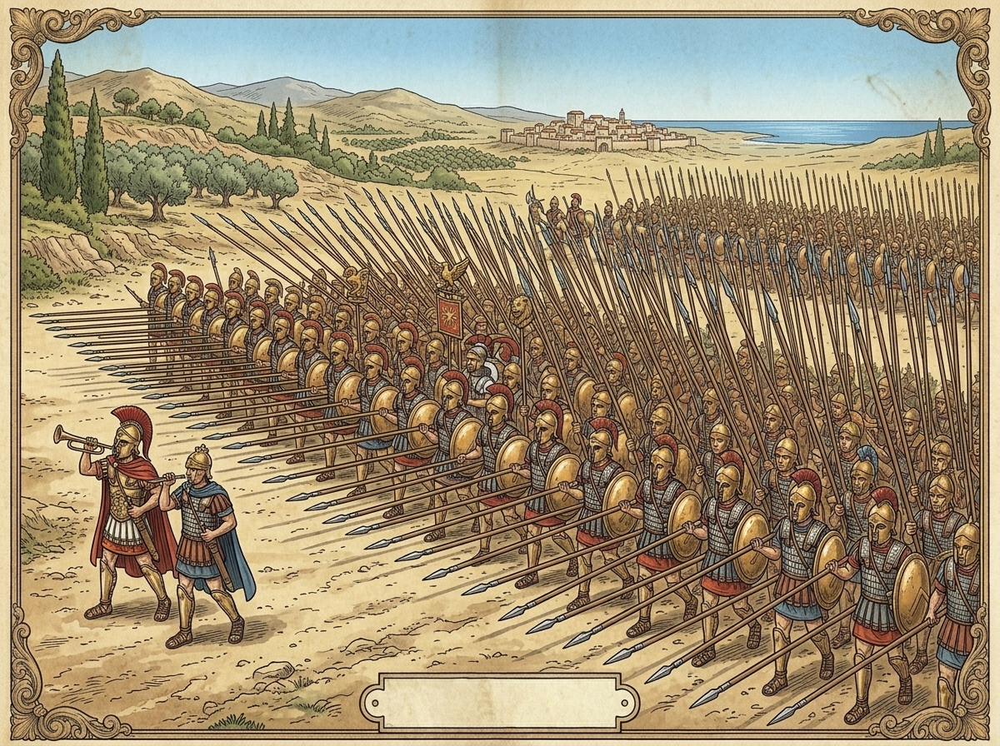
TÁCTICA MILITAR · GRECIALa Falange Macedonia: El Arma que Conquistó el Mundo
La sarissa de seis metros redefinió la guerra antigua. El arma que permitió a Alejandro conquistar el mundo conocido en doce años.
Leer artículo →
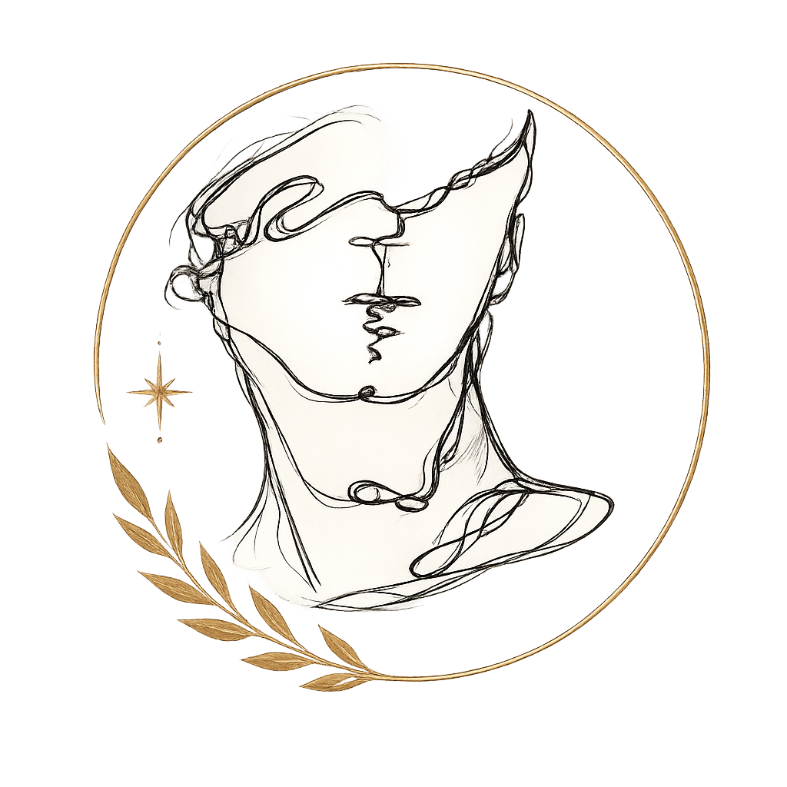
Artículos, videos y relatos con rigor histórico y narrativa cinematográfica. Descubre las batallas, los imperios y los hombres que construyeron el mundo que habitamos.
Dieciséis mil sarissas avanzaban como un solo organismo. Ningún ejército de la Antigüedad pudo detenerlas.
El 24 de agosto del año 79 dC, el Vesubio borró del mapa una ciudad de 20,000 almas. Sus voces aún resuenan.
Tres legiones entraron al bosque. Ningún soldado salió. El desastre que cambió el mapa de Europa para siempre.
El libro completo de Fernando Ortega. La historia definitiva de la batalla que humilló al Imperio Romano, ahora disponible en formato digital.

TÁCTICA MILITAR · GRECIALa sarissa de seis metros redefinió la guerra antigua. El arma que permitió a Alejandro conquistar el mundo conocido en doce años.
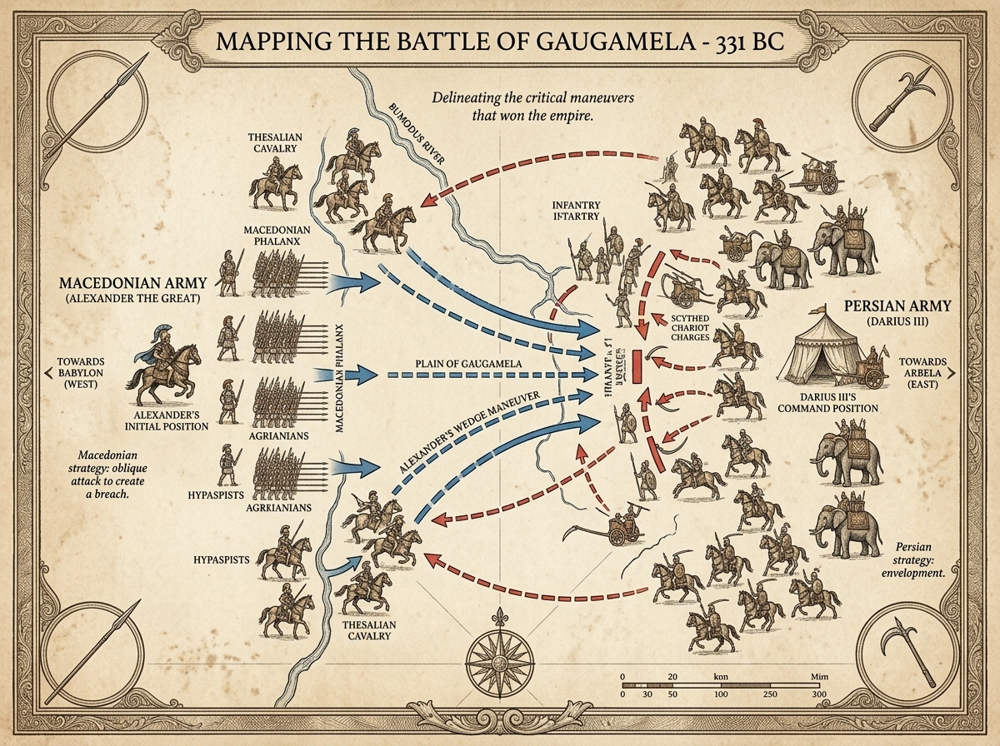
PERSIA · ALEJANDRO MAGNOGaugamela, 331 aC. Dos mundos chocan. El Imperio que tardó dos siglos en construirse desapareció en una tarde de octubre.
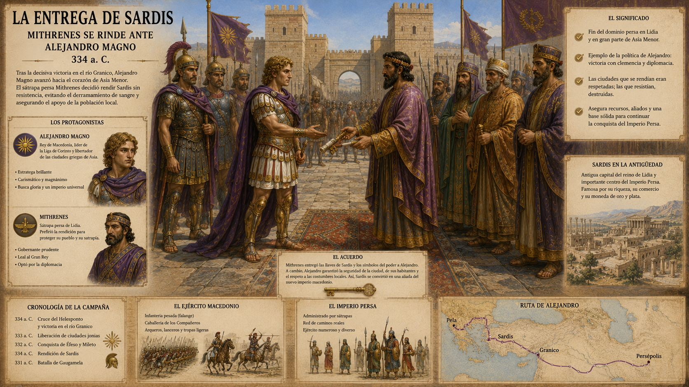
ROMA · EJÉRCITO PROFESIONALCinco mil quinientos hombres, diez cohortes, una voluntad. La máquina militar más perfecta que el mundo antiguo conoció jamás.
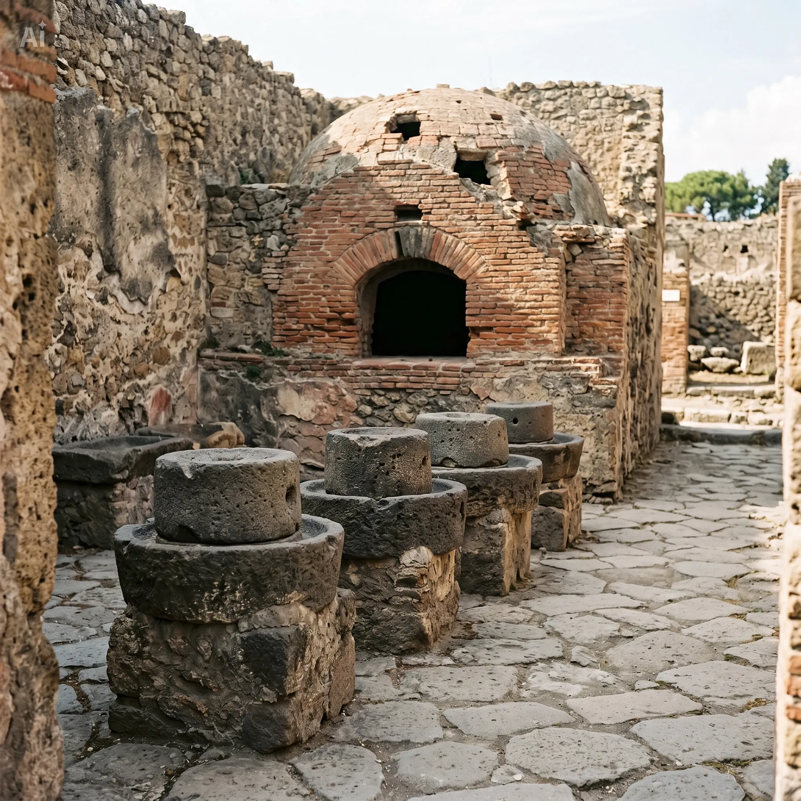
ROMA · CATÁSTROFE · 79 dCEl 24 de agosto del 79 dC el Vesubio despertó. En doce horas, una ciudad de 20,000 almas quedó congelada para siempre bajo cuatro metros de ceniza.
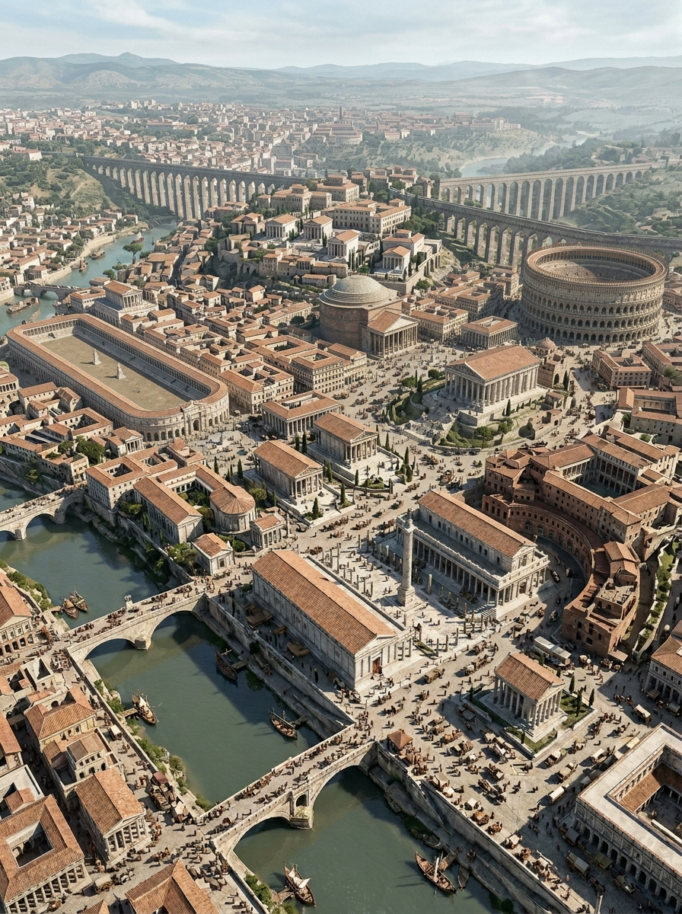
ROMA · ARTE · VIDA COTIDIANALos frescos, el grafiti, el pan carbonizado. Pompeya no es solo una tragedia — es el retrato más vivo y completo de cómo vivían los romanos.
 ROMA · GERMANIA · 9 dC
ROMA · GERMANIA · 9 dCArminius engañó a Roma. Tres legiones entraron al bosque en septiembre del año 9 dC. Ningún soldado volvió. Roma nunca cruzó el Rin.
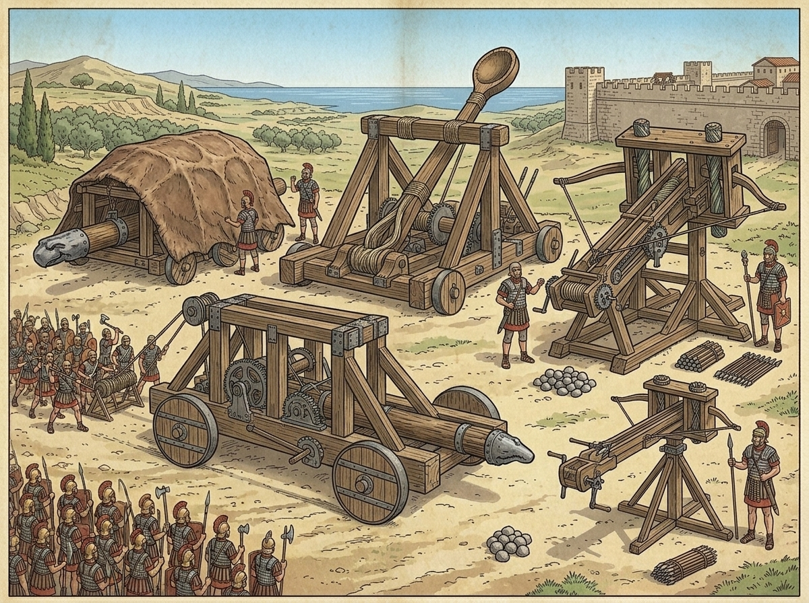
ROMA · INGENIERÍA DE GUERRAEl ariete, el onagro, la ballista, la torre de asedio. Cuando Roma decidía que un muro debía caer, caía. Era solo una cuestión de ingeniería.
"Roma no fue construida en un día. Fue construida con la sangre, la disciplina y el genio de generaciones de hombres que creyeron en algo más grande que ellos mismos."
Reflexión histórica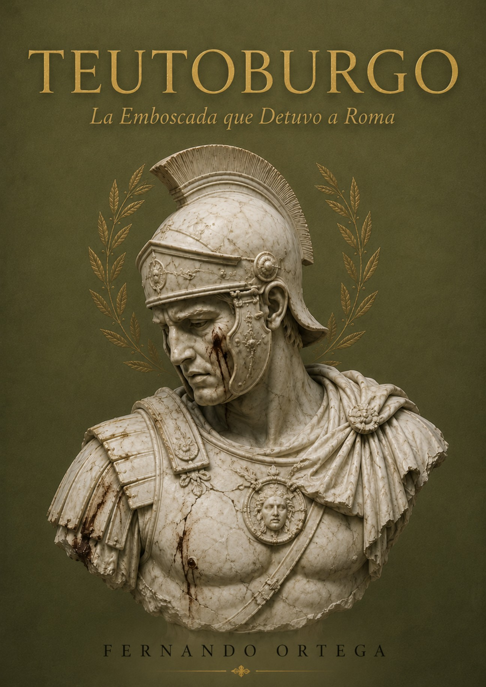
Nuevo · DigitalPor Fernando Ortega · Autor de Memorias del Pasado
El relato completo, con rigor histórico y narrativa cinematográfica, de los tres días que destrozaron tres legiones romanas y cambiaron para siempre el mapa de Europa. La historia de Arminius, Varo y la trampa perfecta que Roma jamás vio venir.
Tres episodios que narran la batalla que destruyó el Imperio Persa en octubre del 331 a.C. Escucha la historia con detalle académico y narración cinematográfica.
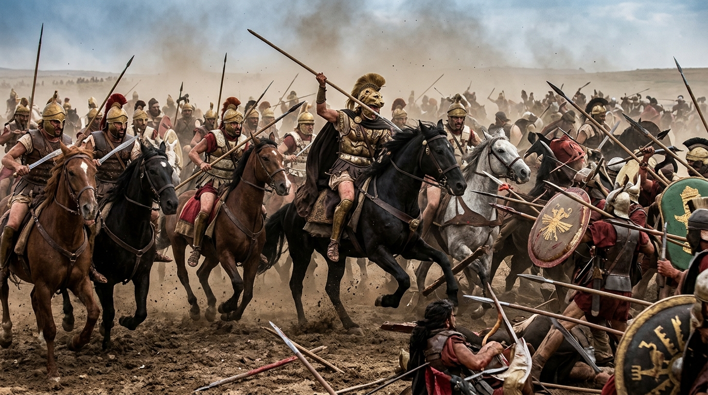
La historia del Imperio Aqueménida, su apogeo bajo Darío I y Jerjes, y el ascenso de Alejandro Magno como el mayor desafío que Persia jamás enfrentó.
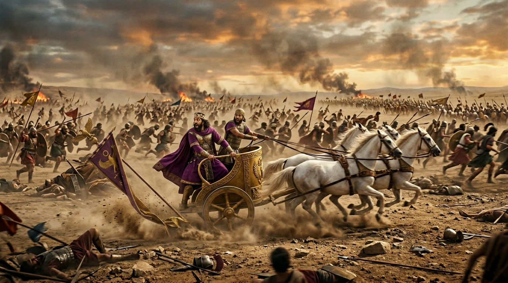
Las batallas del Gránico e Issos, la caída de la familia real persa en manos de Alejandro, y los dos años que Darío III usó para preparar su venganza definitiva.
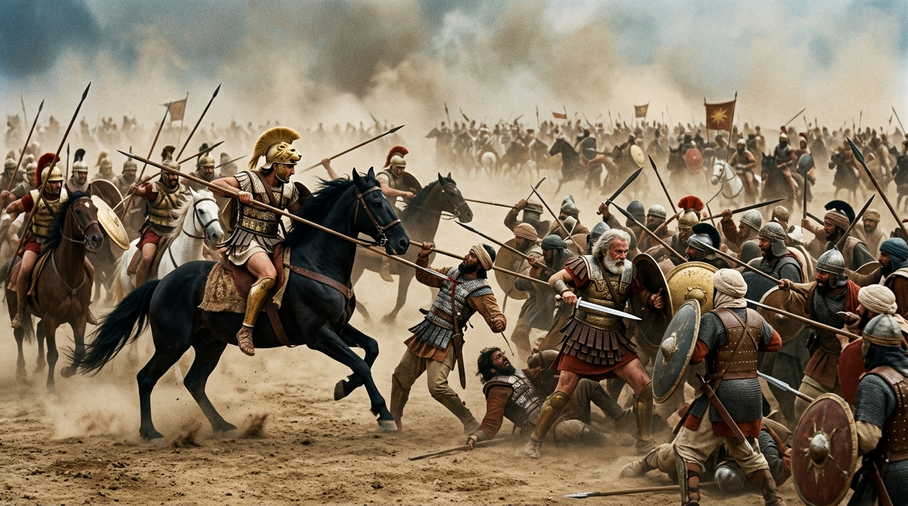
El día que cambió el mundo: 1 de octubre del 331 a.C. El análisis táctico de la batalla, la huida de Darío y el colapso definitivo del Imperio Persa.
Del Gránico a Persépolis: la campaña que en once años destruyó el mayor imperio del mundo antiguo.
El primer choque de Alejandro contra Persia en las orillas del río Gránico. Una victoria relámpago que abrió las puertas de Asia.
Leer artículo →El hombre que heredó el trono más poderoso del mundo y tuvo que enfrentarse al genio militar de Alejandro. Un rey más capaz de lo que la historia reconoce.
Leer artículo →Darío eligió un desfiladero para neutralizar la ventaja macedónica. Alejandro lo convirtió en su trampa. La familia real persa cayó cautiva.
Leer artículo →Siete meses de obstinación contra la ciudad más fortificada del Mediterráneo. Alejandro construyó una calzada desde tierra firme hasta una isla para tomarla.
Leer artículo →La batalla más analizada de la Antigüedad. Darío reunió el mayor ejército persa de la historia. Alejandro encontró el hueco en la línea y cargó directamente hacia el Rey.
Leer artículo →La capital ceremonial del Imperio Persa ardió en el 330 a.C. ¿Fue venganza calculada por la destrucción de Atenas o una noche de excesos? El debate sigue abierto.
Leer artículo →El sátrapa Ariobarzanes detuvo al ejército macedónico en un desfiladero de montaña durante semanas. La única victoria persa significativa tras Gaugamela.
Leer artículo →El Gran Rey fue asesinado por su propio sátrapa Beso cuando huía hacia el este. Alejandro cubrió el cadáver con su manto y lo enterró con honores reales.
Leer artículo →Diez mil guerreros de élite cuya cifra nunca cambiaba: si uno moría, otro ocupaba su lugar al instante. La guardia que protegió el trono persa durante dos siglos.
Leer artículo →El sistema de satrapías, las calzadas reales, el correo imperial y la tolerancia religiosa que Alejandro heredó e incorporó. Cómo Persia sobrevivió a su propia conquista.
Leer artículo →De la fundación mítica a la crisis del siglo III: la historia de la civilización que definió Occidente durante mil años.
Entre el mito de Rómulo y Remo y lo que la arqueología revela: cómo una aldea de pastores en el Lacio se convirtió en la ciudad que conquistó el mundo conocido.
Leer artículo →Tres guerras en un siglo que decidieron el destino del Mediterráneo. Aníbal cruzó los Alpes con elefantes. Roma sobrevivió Cannas y aprendió a ganar la guerra perdiendo las batallas.
Leer artículo →La decisión que convirtió a la República en Imperio. "Alea iacta est." Un cruce de río que cambió la historia occidental para siempre.
Leer artículo →Tres legiones aniquiladas en los bosques de Germania. La derrota que detuvo la expansión romana al este del Rin y definió los límites del Imperio para siempre.
Leer artículo →El sobrino nieto de César que transformó la República en Imperio sin llamarse nunca emperador. Dos siglos de paz relativa, prosperidad y construcción que definieron Roma.
Leer artículo →La guardia que protegía al emperador y a veces lo mataba para poner otro en su lugar. El precio político del poder concentrado en manos de unos pocos miles de soldados.
Leer artículo →La ingeniería que permitió albergar ochenta mil espectadores y el sistema económico, político y cultural detrás de los juegos que Roma usó para controlar a su población.
Leer artículo →En doce meses, cuatro hombres ocuparon el trono de Roma. La guerra civil que siguió a la muerte de Nerón demostró que el poder imperial era un negocio violento y provisional.
Leer artículo →La máquina militar más eficiente del mundo antiguo. Cómo se organizaban, entrenaban, marchaban y combatían los soldados que conquistaron y mantuvieron el Imperio Romano.
Leer artículo →Cincuenta años de anarquía, veintiséis emperadores, invasiones externas y colapso económico. Cómo el Imperio más sólido de la historia estuvo a punto de desintegrarse.
Leer artículo →El 24 de agosto del 79 dC el Vesubio despertó y congeló una ciudad entera bajo cenizas. Hoy sus calles, frescos y pan carbonizado nos regalan el retrato más vivo del mundo romano.
Antes de leer los datos, míralo con tus propios ojos. Este metraje real recorre las calles, atrios y frescos de Pompeya tal como se conservan hoy — la misma ciudad que el Vesubio congeló en el año 79 dC.
Cada piedra, cada columna, cada fresco que ves en este video es auténtico. Es el punto de partida perfecto para entender, a continuación, la ciencia exacta de lo que ocurrió aquel día.
En doce horas, una ciudad de 20,000 almas quedó congelada para siempre bajo cuatro metros de ceniza. La crónica hora a hora del día en que el Vesubio borró Pompeya del mapa.
Leer artículo →Los frescos, el grafiti, el pan carbonizado. Pompeya no es solo una tragedia — es el retrato más vivo y completo de cómo vivían los romanos.
Leer artículo →No fue magia ni castigo divino: fue física. Cómo funciona una erupción Pliniana, hora a hora, desde la columna de veinte kilómetros hasta los flujos piroclásticos.
Leer artículo →Cuatro ciudades sepultadas, miles de toneladas de roca por segundo, cientos de cuerpos documentados. Los datos duros detrás del desastre más estudiado de la Antigüedad.
Leer artículo →Un recorrido digital por el interior de una vivienda romana acomodada — atrios, frescos y mosaicos como los que decoraban las mejores casas de Pompeya.
Ver artículo relacionado →Así lucían los interiores de una casa romana en su época de esplendor — el mundo cotidiano que la erupción del año 79 congeló para siempre.
Ver artículo relacionado →Una revista de divulgación histórica estilo National Geographic: reportajes ilustrados, mapas y cronologías sobre las civilizaciones que forjaron el mundo. Hojéala gratis, sin registro.
Reportajes fotográficos, cronologías y análisis histórico en un formato de revista interactiva. Ábrela en el lector digital y hojéala como una revista de papel.
Artículos, podcast, revista, libro y comunidad — el universo completo de Memorias del Pasado en un mismo lugar.
Legiones, emperadores, Pompeya y el ocaso del Imperio
La conquista que cambió para siempre el mundo antiguo
Recorrido por la ciudad que el Vesubio congeló en el tiempo
La arquitectura medieval que aprendió a construir con luz
Tres episodios narrados con rigor histórico y cinematográfico
Muestra gratis: Historika, Ecos del Mundo Antiguo
Disponible en Amazon: Kindle o tapa blanda
Únete al Círculo de Historiadores
"Veni, vidi, vici." — Llegué, vi, vencí.
Julio César, tras la batalla de Zela, 47 aC"No me importa cuántos sean. Preguntad si son dignos de enfrentarme en el campo de batalla."
Alejandro Magno, antes de Gaugamela"¡Quintilio Varo, devuélveme mis legiones!" Golpeándose la cabeza contra las paredes de su palacio.
Augusto, tras la derrota de Teutoburgo, 9 dC"Una nube de aspecto y tamaño inusuales surgió sobre el Vesubio. Su forma se asemejaba a la de un pino."
Plinio el Joven, Epistulae VI.16, 79 dC"El soldado que trabaja con la mente tanto como con las manos nunca será derrotado."
Vegecio, Epitoma Rei Militaris, s. IV dC"Los germanos no conocen la rendición. Solo conocen la victoria o la muerte en el campo."
Tácito, Germania, 98 dC"Ningún muro era suficiente. Donde Roma decidía que algo debía caer, caía. Era solo cuestión de tiempo e ingeniería."
Reflexión sobre la ingeniería militar romana"Los pompeyanos no sabían que serían inmortales. Solo vivían, amaban, escribían en las paredes y cocinaban el pan del día."
Reflexión arqueológica modernaUn grupo exclusivo donde compartimos análisis profundos, contenido anticipado, debates sobre el mundo antiguo y material que no publicamos en ningún otro lugar. Miles de apasionados por la historia ya son parte.
Unirme al Grupo Exclusivo →Memorias del Pasado es un proyecto independiente hecho con pasión por la historia. Si nuestros artículos, videos y el podcast te han hecho viajar dos mil años atrás, considera invitarnos un café — cada aporte nos ayuda a seguir investigando y produciendo contenido de calidad.
Donar con PayPal →En el siglo IV antes de Cristo, el mundo mediterráneo conocía diversas formaciones militares, pero ninguna tan devastadora como la que el rey Filipo II de Macedonia perfeccionaría hasta convertirla en el instrumento de conquista más formidable que los ojos humanos habían contemplado. La falange macedónica no fue simplemente una formación táctica: fue una revolución militar que redefinió la guerra antigua, abrió el camino a la conquista de imperios y transformó para siempre la relación entre el poder político y el poder militar.
La falange, como concepto, no nació en Macedonia. Los griegos llevaban siglos usando formaciones hoplitas compactas, donde soldados equipados con lanza corta y escudo redondo —el hoplon— formaban líneas apretadas y avanzaban juntos hacia el enemigo. Esta táctica había demostrado su eficacia en las Guerras Médicas, en Maratón y Platea, pero tenía limitaciones evidentes: la lanza hoplita medía apenas dos metros y medio, y el combate degeneraba rápidamente en un empuje cuerpo a cuerpo donde la fuerza individual importaba tanto como la formación colectiva.
Filipo II ascendió al trono macedónico en el año 359 aC en circunstancias dramáticas —su predecesor había muerto en combate contra los ilirios, llevándose consigo a cuatro mil soldados macedonios—. Macedonia era entonces un reino periférico, considerado semi-bárbaro por los griegos del sur, con un ejército que había sufrido una derrota catastrófica. Filipo cambiaría todo esto en menos de una década.
El rey tomó elementos de la falange griega tradicional, incorporó innovaciones que había observado durante su juventud como rehén en Tebas —donde estudió las tácticas del general Epaminondas, quien había revolucionado la formación hoplita— y añadió su propia genialidad táctica. El resultado fue la falange macedónica, un sistema de combate radicalmente diferente a todo lo que existía.
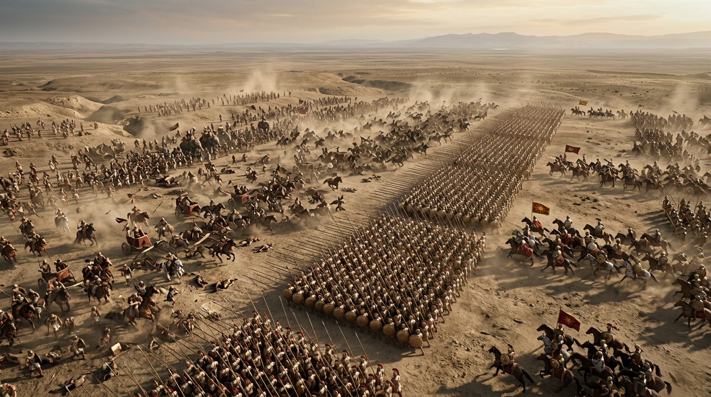
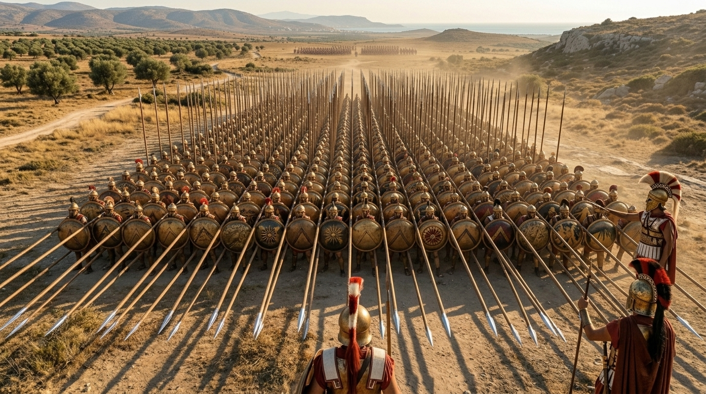
El elemento central de la revolución macedónica fue la sarissa, una pike —lanza larga— de entre cinco metro y medio y siete metros de longitud. Esta dimensión no era arbitraria: era el resultado de un cálculo táctico preciso. Con una sarissa de seis metros sostenida a dos manos en posición diagonal ascendente, las puntas de los soldados de las cinco primeras filas de la falange proyectaban sus hojas de hierro más allá de la primera línea de combate. Un soldado enemigo enfrentando la falange no veía a un hombre ante él: veía cinco puntas de lanza simultaneas apuntando a su cuerpo.
La sarissa estaba fabricada en madera de cornejo, una madera densa y flexible, con un casquillo de bronce en la parte trasera que servía tanto de contrapeso —haciendo la lanza más manejable a pesar de su longitud— como de arma secundaria si la punta se rompía en combate. El casquillo trasero también permitía clavar la lanza en el suelo en posición defensiva, creando una barrera de hierro ante una carga de caballería.
El peso de la sarissa —aproximadamente cinco kilogramos— significaba que no podía manejarse con una sola mano. El soldado macedónico sostenía su lanza con ambas manos, lo que eliminaba la posibilidad de llevar el gran escudo hoplita. En su lugar, los falangistas llevaban el pelta, un pequeño escudo redondo atado al antebrazo izquierdo, dejando ambas manos libres para la lanza. Esta decisión táctica parecía una vulnerabilidad, pero en la práctica la densa formación de sarissas hacía el escudo individual casi irrelevante: la protección venía de la masa colectiva de lanzas, no del escudo personal.
"La falange avanzaba como un solo ser viviente, dieciséis mil almas con una sola voluntad. Ante ellos, el más valiente sentía que luchaba contra la naturaleza misma."
— Arriano de Nicomedia, Anábasis de Alejandro, s. II dC
La unidad básica de la falange era el syntagma, un cuadrado de dieciséis hombres por dieciséis filas —doscientos cincuenta y seis hombres— que podía operar con cierta autonomía en el campo de batalla. Varias syntagmas combinadas formaban la falange completa, que en el ejército de Alejandro podía contar entre seis mil y quince mil falangistas, desplegados en línea con una profundidad típica de doce a dieciséis filas.
La falange no era solo fuerza bruta. Filipo y después Alejandro la utilizaron como el yunque de un martillo de dos cabezas. Mientras la falange fijaba al enemigo al frente —con su barrera de sarissas era imposible el avance frontal—, la caballería de compañeros, los Hetairoi, atacaba el flanco o la retaguardia. Esta coordinación entre infantería pesada y caballería de élite era la esencia del sistema macedónico: la falange sostenía, la caballería destrozaba.
El movimiento en formación era algo que los macedonios entrenaban obsesivamente. Filipo instituyó un sistema de entrenamiento continuo que incluía marchas con el equipo completo, maniobras en terreno variado y la práctica repetida de cambios de formación. Sus soldados podían pasar de formación de marcha a formación de combate en minutos, adaptar la profundidad de la falange según el terreno, y girar la formación completa para enfrentar ataques en los flancos. Este nivel de disciplina colectiva era inaudito en el mundo antiguo.
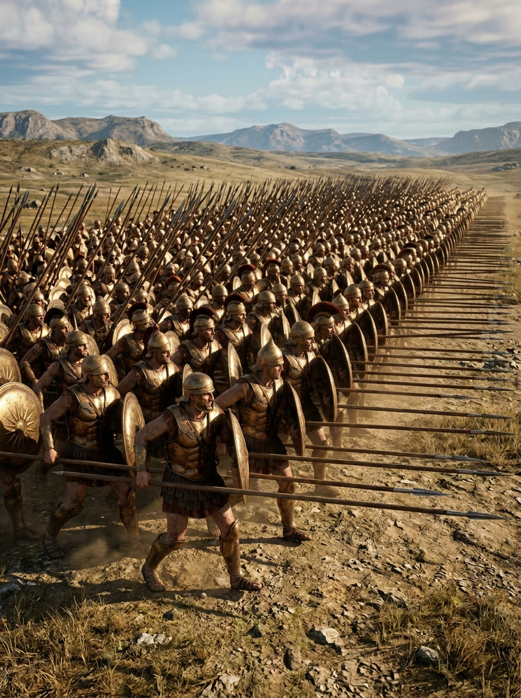
Cuando Alejandro III ascendió al trono macedónico en el 336 aC, heredó no solo el ejército más sofisticado del mundo mediterráneo, sino también la comprensión táctica de cómo emplearlo. En tres batallas clave —el Gránico en el 334, Iso en el 333 y Gaugamela en el 331— Alejandro demostró cómo la falange, combinada con la caballería de los Hetairoi, era capaz de derrotar ejércitos numéricamente muy superiores.
En el Gránico, la primera gran batalla de la campaña contra Persia, Alejandro utilizó la falange para fijar al grueso del ejército persa en el otro lado del río mientras él mismo lideraba la carga de caballería por el flanco. La batalla se decidió en minutos una vez que la caballería macedónica cruzó y atacó el flanco izquierdo persa.
En Iso, con el ejército persa bloqueando el paso costero y Alejandro con las espaldas contra el mar, la falange tuvo su prueba más dura hasta ese momento. Darío III había elegido el campo de batalla precisamente para neutralizar la ventaja macedónica en campo abierto, pero la disciplina de los falangistas mantuvo la línea bajo un ataque frontal masivo mientras Alejandro, una vez más, lanzó la caballería de compañeros directamente hacia donde estaba Darío. El Gran Rey huyó, y su familia quedó capturada.
Gaugamela, el año 331 aC, fue la obra maestra táctica de Alejandro. Darío había elegido una llanura perfectamente nivelada para maximizar la ventaja numérica persa —se estima que tenía entre doscientos cincuenta mil y un millón de hombres, aunque las cifras exactas son debatidas por los historiadores modernos—. Sin embargo, Alejandro ejecutó un avance oblicuo hacia la derecha, estirando la línea persa, creando un hueco en la formación enemiga, y lanzando su caballería directamente a través de ese hueco hacia el centro donde estaba Darío. La falange, mientras tanto, mantuvo el centro persa fijo bajo un fuego constante de sarissas. Darío huyó por segunda vez.
La falange no era invencible. Tenía tres vulnerabilidades conocidas que los enemigos sagaces explotaban cuando podían. Primera: dependía absolutamente del terreno plano. En terreno accidentado, con colinas, bosques o pantanos, la formación se desintegraba y los falangistas, con sus largas sarissas, eran incapaces de mantener el contacto con los compañeros a su lado. Segunda: los flancos eran el talón de Aquiles. La falange era casi impenetrable por el frente pero los flancos y la retaguardia eran vulnerables. Por eso Alejandro siempre aseguró los flancos con caballería y tropas ligeras antes de avanzar. Tercera: cuando la formación se rompía —ya fuera por terreno irregular o por el azar del combate— los falangistas individuales eran guerreros mediocres. Sin la formación colectiva, el soldado con sarissa de dos manos era menos peligroso que un hoplita con espada.
Los romanos aprendieron estas lecciones de manera brutal pero eficiente. En la batalla de Cinoscéfalas en el 197 aC, el general romano Tito Quincio Flaminino enfrentó a la falange macedónica en un terreno collinado de Tesalia. Cuando la formación macedonia se quebró al intentar descender una colina, los manipuli romanos —unidades más pequeñas y flexibles que podían actuar con mayor autonomía en terreno difícil— penetraron los huecos en la formación. La masacre que siguió demostró que la falange, el arma que había conquistado el mundo conocido, tenía fecha de caducidad ante el ejército romano.
La falange macedónica existió como sistema de combate dominante durante aproximadamente ciento cincuenta años, desde las reformas de Filipo II hasta la derrota ante Roma. En ese período, cambió el mapa del mundo conocido de una manera que ningún otro instrumento militar había logrado. Permitió a Alejandro crear el mayor imperio que el mundo había visto hasta entonces, extendido desde Grecia hasta la India, y sembró las semillas de la civilización helenística que fusionó las culturas griega y oriental durante siglos.
El legado táctico de la falange fue igualmente duradero. El concepto de la pike larga —la lanza que permite a las filas traseras contribuir al combate sin que se rompan las líneas— resurgió una y otra vez en la historia militar. Los lansquenetes suizos del siglo XV, los tercios españoles del XVI y la infantería de pica del XVII son todos herederos directos de la revolución táctica que Filipo II inició en los campos de entrenamiento de Macedonia hace veinticuatro siglos.
"La falange macedónica no fue solo una formación militar. Fue la materialización de una idea: que la disciplina colectiva supera a la valentía individual. Una lección que el mundo ha tenido que reaprender en cada generación."
— Nicholas Sekunda, The Macedonian Army, 1984
Reconstrucción en movimiento de la falange hoplita griega en formación de combate, antecesora directa de la falange macedónica.
"Dieciséis mil sarissas avanzaban como un solo organismo, un muro de muerte que ningún ejército sobre la tierra había visto jamás. Ante ellos, los más valientes temblaban."
La falange macedónica no fue una formación más en la historia militar antigua. Fue el instrumento con el que un reino periférico se convirtió en el amo del mundo conocido. Su legado vive en cada formación militar que desde entonces ha comprendido que la disciplina colectiva supera a la valentía individual.
Continúa leyendo
En el otoño del año 331 antes de Cristo, en una llanura polvororienta cerca del pueblo mesopotámico de Gaugamela, el destino del mundo conocido quedó decidido en pocas horas de combate. Por un lado, Alejandro III de Macedonia lideraba un ejército de cuarenta y siete mil hombres, veteranos y disciplinados como ningún ejército anterior. Por el otro, Darío III Codomano, el Gran Rey del Imperio Aqueménida, comandaba una fuerza que los historiadores estiman entre doscientos mil y un millón de combatientes —la cifra exacta es todavía debatida—. El resultado de ese día no solo determinó el fin del mayor imperio que el mundo había conocido hasta entonces: cambió la trayectoria de la civilización occidental.
Para comprender la magnitud de la caída del Imperio Persa, hay que entender primero lo que era este Imperio en su momento de mayor gloria. Fundado por Ciro el Grande en el año 550 aC, el Imperio Aqueménida se extendía desde el río Indo en el este hasta Egipto y las fronteras de Grecia en el oeste, desde las estepas de Asia Central en el norte hasta el Golfo Pérsico y el Mar Arábigo en el sur. Era el mayor imperio que el mundo había visto, gobernando sobre entre cuarenta y cincuenta millones de personas —aproximadamente el cuarenta por ciento de la población mundial de la época.
El sistema administrativo persa era notablemente sofisticado para su época. El Imperio se dividía en satrapías —provincias— gobernadas por sátrapas que rendían cuentas directamente al rey. Una red de calzadas reales conectaba las capitales del Imperio: Persépolis, Pasargada, Susa y Ecbatana. El Correo Real persa podía transmitir mensajes desde Susa hasta Sardes —una distancia de más de dos mil cuatrocientos kilómetros— en menos de una semana, una velocidad de comunicación sin precedentes en el mundo antiguo.
El ejército persa reflejaba la diversidad del Imperio. Medas, persas, bactrianos, sogdianos, indios, elamitas, árabes, egipcios, fenicios: los ejércitos del Gran Rey incluían guerreros de decenas de culturas y tradiciones militares distintas. Esta diversidad era una fuente de fuerza —cada pueblo contribuía con sus especialidades militares— pero también de debilidad, ya que la coordinación de tan heterogéneos contingentes era un desafío logístico y de comunicación permanente.

Darío III —su nombre persa era Artashata, Codomano era su apellido— no llegó al trono por herencia directa. Era miembro de una rama lateral de la familia real aqueménida, y ascendió al poder en el 336 aC en medio de una crisis política marcada por asesinatos y conspiraciones. El todopoderoso eunuco Bagoas, que había envenenado a los dos reyes anteriores, puso a Darío en el trono pensando que sería un títere manejable. Se equivocó: Darío mandó ejecutar a Bagoas cuando descubrió que el eunuco también intentaba envenenarle a él.
Los relatos de los historiadores griegos y romanos sobre el carácter de Darío son ambiguos. Plutarco y Arriano reconocen su valor personal —en la batalla de Iso, combatió en el centro hasta que la situación fue desesperada— pero también enfatizan su decisión de huir en dos ocasiones, abandonando a su ejército. Los historiadores modernos son más comprensivos: en ambas batallas, la huida de Darío puede interpretarse como una decisión táctica —preservar su persona para reagrupar fuerzas— más que como cobardía pura.
Cuando Alejandro cruzó el Helesponto en el 334 aC con cuarenta mil hombres, los comandantes persas en Asia Menor —los sátrapas locales, no Darío en persona— cometieron un error fatal: decidieron enfrentarle en el río Gránico en lugar de adoptar una estrategia de tierra quemada que habría privado al ejército macedónico de suministros. El general griego Memnón de Rodas, al servicio de Persia, aconsejó exactamente eso, pero los sátrapas persas desestimaron la opinión del mercenario griego.
La batalla del Gránico fue una victoria decisiva para Alejandro, que perdió relativamente pocos hombres mientras causaba bajas masivas entre la caballería persa. Más importante que la victoria militar fue el efecto político: las ciudades griegas de Asia Menor comenzaron a abrirse a Alejandro como "liberador" del dominio persa.
En Iso, en el otoño del 333 aC, Darío tomó el mando personal del ejército persa por primera vez. Eligió un campo de batalla estrecho —el paso costero entre las montañas del Tauro y el Mediterráneo— para neutralizar la superioridad numérica persa. La táctica era inteligente en teoría, pero la ejecución fue fallida. Cuando Alejandro rompió la formación persa en el flanco derecho y lanzó su caballería directamente hacia donde estaba Darío, el Gran Rey huyó en su carro de guerra. La captura de su madre, esposa e hijas por los macedonios fue la humillación definitiva.
"Alejandro encontró la tienda de Darío llena de bañeras, vasijas y palmatorias de oro y plata, con aromas y especias exquisitas. Los macedonios, asombrados, se miraron entre sí y dijeron: esto es lo que significa ser rey."
— Plutarco, Vida de Alejandro, cap. XX
Tras Iso, Darío tuvo casi dos años para prepararse. Esta vez no cometería el error del campo estrecho. Eligió cuidadosamente la llanura de Gaugamela —en la actual Irak, cerca de Mosul—, tan plana que ordenó nivelar los pocos obstáculos que existían, para dar ventaja máxima a su superioridad numérica y a sus carros con cuchillas en las ruedas. Envió propuestas de paz a Alejandro —ofreciendo la mitad del Imperio y una hija en matrimonio—, pero Alejandro las rechazó. La guerra no terminaría hasta que no existiera un solo rey sobre el mundo conocido.
El plan de batalla de Darío en Gaugamela era sofisticado. Sus carros con cuchillas atacarían el centro macedónico para romper la falange. Simultáneamente, sus alas de caballería superarían en número a las macedónicas y envolverían los flancos enemigos. El resultado sería el aniquilamiento total del ejército invasor.
Alejandro, sin embargo, anticipó cada movimiento. Avanzó en formación oblicua hacia la derecha —una maniobra que desconcertó a Darío— mientras sus tropas ligeras neutralizaban los carros con cuchillas abriéndose para dejar pasar los vehículos sin efectividad. Cuando la persecución de la caballería persa en el flanco izquierdo creó un hueco en la línea de Darío, Alejandro lo vio. En un momento de claridad táctica absoluta, giró con su caballería de compañeros y cargó directamente hacia ese hueco, apuntando no al flanco sino al centro, donde estaba el propio Darío.
La falange macedónica, mientras tanto, había sufrido momentos críticos. En el flanco izquierdo, la caballería persa había penetrado la línea macedónica y llegado hasta el campamento. Pero Alejandro no lo sabía, y si lo hubiera sabido probablemente no habría cambiado de plan: su carga hacia el centro era la apuesta decisiva. Cuando los jinetes de los Hetairoi se aproximaron a donde estaba Darío, el Gran Rey huyó por segunda vez, abandonando a decenas de miles de sus soldados en el campo de batalla.
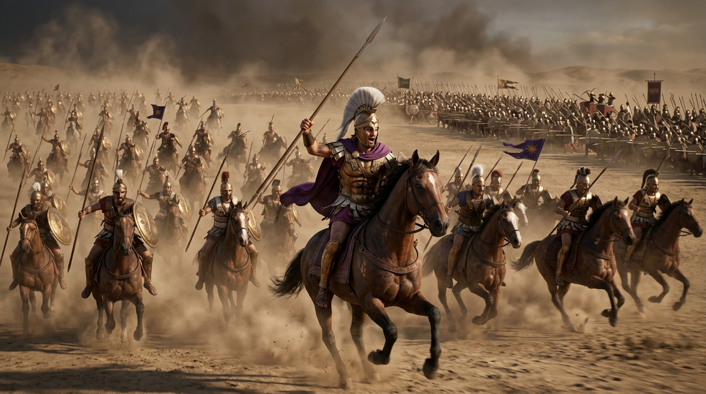
Tras Gaugamela, el Imperio Persa no colapsó inmediatamente, pero su colapso era inevitable. Alejandro marchó hacia Babilonia, que se rindió sin resistencia; luego hacia Susa, que también abrió sus puertas; y finalmente hacia Persépolis, la capital ceremonial del Imperio, cuyos palacios incendió en un acto de venganza simbólica —o quizás calculada— por la destrucción persa de Atenas en el 480 aC.
Darío huyó hacia el este, primero a Ecbatana y luego hacia Bactria, intentando reagrupar fuerzas. Pero sus propios nobles comenzaron a dudar de él. El sátrapa de Bactria, Beso, lo apresó y lo asesinó en el verano del 330 aC, cuando los jinetes macedonios de Alejandro se aproximaban a su posición. Se dice que Alejandro encontró el cadáver de Darío al borde de un camino, lo cubrió con su propio manto y ordenó que fuera embalsamado y enterrado con honores reales en Persépolis. Fue un gesto de respeto hacia un enemigo derrotado, pero también un mensaje político: Alejandro no era un conquistador bárbaro, sino el sucesor legítimo de los reyes persas.
La derrota del Imperio Persa tuvo consecuencias que se extendieron siglos más allá del propio Alejandro. El mundo helenístico que surgió de sus conquistas fusionó la cultura griega con las tradiciones orientales de Persia, Egipto, Mesopotamia y hasta India, creando una civilización cosmopolita que fue el caldo de cultivo intelectual donde más tarde florecería el cristianismo, el neoplatonismo y la ciencia alejandrina.
En cuanto a Darío III, la historia lo ha juzgado con cierta severidad, pero los historiadores modernos como Pierre Briant argumentan que fue un monarca más capaz de lo que la tradición griega —siempre sesgada en favor del vencedor— reconoció. Heredó un Imperio en crisis, enfrentó al mayor genio militar de la Antigüedad con los recursos que tenía, y dos veces estuvo a punto de lograr la victoria antes de que las circunstancias —y la audacia excepcional de Alejandro— se volvieran irreversiblemente en su contra.
"No fue la cobardía de Darío lo que perdió el Imperio, sino el genio de Alejandro lo que lo conquistó. Son cosas distintas, aunque la Historia tienda a confundirlas."
— Pierre Briant, De Cyrus à Alexandre, 1996
Recorrido visual por la ruta de conquista de Alejandro Magno: desde Macedonia hasta el Indo, a través de Asia Menor, Egipto, Mesopotamia, Persia y Bactriana. Una campaña de once años que cambió el mundo conocido.
"Frente a la carga de la caballería macedónica, el hombre más poderoso de la tierra huyó en su carro de guerra. El Imperio que tardó dos siglos en construirse se derrumbó en una tarde de octubre."
Gaugamela no fue solo una batalla. Fue el momento en que el mundo antiguo cambió de manos, y el centro de gravedad de la civilización se desplazó hacia el este, iniciando la era helenística que marcaría los siguientes tres siglos de historia humana.
Continúa leyendo
Entre todos los instrumentos de poder que Roma forjó a lo largo de sus ocho siglos de historia, ninguno fue tan decisivo ni tan duradero como la legión romana. No fue solo un ejército: fue una institución social, un sistema de valores, una escuela de ingeniería y una máquina de transformar hombres ordinarios en guerreros extraordinarios. Durante casi quinientos años, la legión romana conquistó, gobernó y civilizó un mundo que se extendía desde las brumosas costas de Britania hasta las arenas del desierto sirio, desde el Rin y el Danubio hasta el Éufrates y el Nilo.
Reconstrucción de legionarios romanos en marcha, mostrando el equipamiento completo y la disciplina característica del ejército profesional romano.
El ejército romano primitivo no era la máquina de guerra perfecta que conocemos. En los primeros siglos de la República, Roma seguía el modelo griego de milicia ciudadana: los ciudadanos que podían costear su propio equipamiento eran convocados para campañas estacionales y regresaban a sus granjas al terminar la temporada de combate. El servicio militar era un deber cívico vinculado a la propiedad, y quien no tenía propiedades —los proletarii— no servía en el ejército.
Este sistema funcionó mientras las guerras eran locales y breves. Pero cuando Roma comenzó a proyectar su poder más allá de Italia —las guerras púnicas contra Cartago, que duraron décadas y exigían presencia militar constante en España, África y el Mediterráneo oriental— el viejo sistema se quebró. Los pequeños propietarios romanos, obligados a servir por años lejos de sus granjas, regresaban para encontrar sus tierras arruinadas o vendidas a los grandes latifundistas. El resultado fue una crisis social que amenazó con destruir la República desde adentro.
La solución vino con Cayo Mario, elegido cónsul por primera vez en el 107 aC. Las reformas marianas transformaron el ejército romano en lo que sería durante los siguientes cinco siglos. Mario abrió el reclutamiento a los ciudadanos sin propiedad —los proletarii—, que ahora podían enrolarse voluntariamente a cambio de sueldo, equipamiento y la promesa de tierras al licenciarse. El servicio estándar se extendió a dieciséis años —más tarde ampliado a veinticinco—. El Estado asumía el coste del equipamiento, que se estandarizó completamente. Nació el legionario profesional.
La legión romana imperial, tal como existió en los siglos I y II dC, era una unidad de aproximadamente cinco mil cuatrocientos hombres, divididos en diez cohortes. La primera cohorte era doble —ochocientos hombres— y constituía la élite de la legión, albergando los mejores veteranos y los especialistas técnicos. Las nueve cohortes restantes contaban cada una con cuatrocientos ochenta hombres, divididos en seis centurias de ochenta legionarios.
La centuria era la unidad social fundamental del ejército romano, comandada por el centurión. El centurión no era un oficial aristocrático sino un hombre de tropa ascendido por méritos —valentía, disciplina, capacidad de liderazgo—. Era el corazón del ejército romano: conocía a cada uno de sus ochenta hombres por su nombre, sabía quién era fiable y quién no, y en batalla lideraba desde el frente, no desde la retaguardia. Los centuriones eran reconocibles por su casco con cresta transversal, su bastón de sarmiento de vid —el vitis, símbolo de su autoridad— y el hecho de que llevaban sus condecoraciones en el pecho, no en la espalda como los soldados rasos.
La legión también contaba con especialistas que la distinguían de cualquier ejército contemporáneo: ingenieros capaces de construir puentes, campamentos o máquinas de asedio; artilleros que manejaban balistas y onagros; médicos que atendían a los heridos; contables que llevaban los registros de paga y los inventarios de equipo. Era, en esencia, un organismo autosuficiente capaz de operar indefinidamente en territorio enemigo.
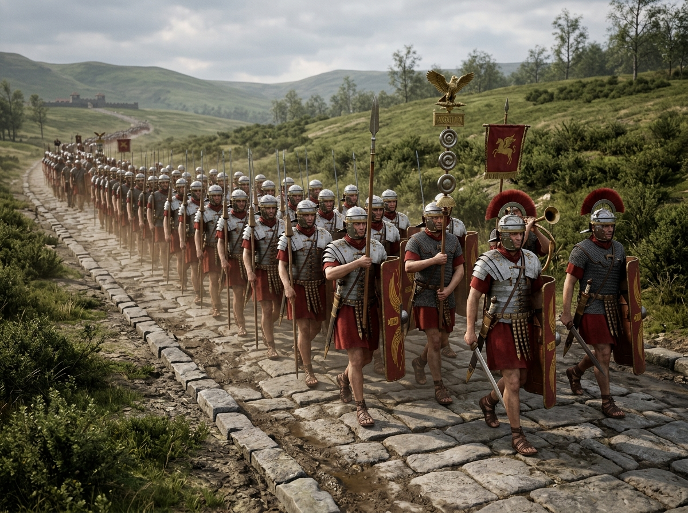
El equipo estándar del legionario de la época imperial era el resultado de siglos de refinamiento práctico. Cada pieza había sido probada en decenas de campañas y mejorada continuamente. El conjunto pesaba entre treinta y cuarenta kilogramos, y el legionario en marcha debía cargar con él durante veinte a treinta kilómetros diarios —la famosa distancia de marcha romana que los soldados de Mario realizaban con tal regularidad que se ganaron el apodo de "mulas de Mario".
El arma principal ofensiva en marcha y en la fase de apertura del combate era el pilum, una jabalina pesada con una peculiaridad de diseño deliberada: el asta de hierro que unía la punta al mango de madera era suficientemente larga y delgada para doblarse al impacto. Cuando el pilum golpeaba el escudo enemigo y el asta se doblaba, el escudo quedaba inutilizable —el pilum colgaba de él por su peso, impidiendo moverlo—. Si el enemigo intentaba arrancar el pilum, la punta doblada lo hacía casi imposible. El resultado era que la primera descarga de pila antes del combate cuerpo a cuerpo desarmaba efectivamente la primera línea enemiga de sus escudos.
El gladius hispaniensis —adoptado durante las guerras con Cartago en Hispania— era la espada corta de hoja ancha y punta aguda que definió el combate romano. A diferencia de las espadas largas de los celtas o germanos, diseñadas para cortar, el gladius estaba optimizado para el empuje. En la formación cerrada del combate romano, donde apenas había espacio para blandir un arma larga, el empuje corto y preciso del gladius era letal. Los centuriones entrenaban obsesivamente a sus hombres en una sola técnica: dar un paso adelante, protegerse con el scutum, y empujar el gladius hacia el abdomen del adversario.
El scutum era un escudo curvo rectangular de madera laminada cubierta de cuero, con un umbo central de hierro. Su forma curvada permitía que encajara con los escudos de los soldados adyacentes, creando una pared continua de protección. En la formación de testudo —tortuga—, los scuta de los primeros soldados formaban una pared frontal mientras los de las filas posteriores se levantaban sobre las cabezas, creando un caparazón completo que protegía de proyectiles desde cualquier ángulo.
"El soldado debe temer a su comandante más que al enemigo. Las recompensas solas no hacen un ejército; el miedo también tiene su lugar."
— Vegecio, Epitoma Rei Militaris, Libro I, s. IV dC
El recluta romano recién llegado al campamento no era tratado como un guerrero sino como materia prima. Los primeros meses de servicio eran una inmersión total en el sistema romano de entrenamiento, diseñado para destruir los hábitos civiles del recluta y reemplazarlos con los reflejos del soldado. El programa incluía marchas a paso de doble tiempo con equipamiento completo, natación, salto de obstáculos, lucha cuerpo a cuerpo y, sobre todo, práctica de armas con espadas y lanzas de madera del doble del peso normal —para que cuando el legionario tomara el gladius real, lo sintiera ligero y manejable.
La disciplina romana era legendaria y a veces brutal. El sistema de castigos incluía desde la reducción de raciones hasta la flagelación pública. El más temido era la decimación: si una cohorte o centuria demostraba cobardía en batalla, el resto del ejército la rodeaba, cada diez hombres echaban a suertes quién sería el décimo, y ese décimo era ejecutado por sus propios compañeros con palos y piedras. Se documentan aproximadamente una decena de decimaciones en la historia romana, lo que sugiere que la amenaza era más efectiva que su aplicación real.
Reconstrucción del campamento legionario romano (castra) mostrando la distribución estandarizada que se replicaba en cada rincón del Imperio.
La táctica básica de la legión en batalla era la triple acies —triple línea de combate—. Las tres líneas, separadas entre sí por intervalos que permitían el movimiento, se desplegaban con los más jóvenes y menos experimentados en la primera línea, los veteranos de media carrera en la segunda, y los más veteranos en la tercera. Esta disposición aparentemente arriesgada era en realidad sabia: los jóvenes de la primera línea absorbían el choque inicial y se retiraban a través de los huecos de la segunda línea cuando se agotaban, siendo reemplazados por los veteranos más frescos y experimentados.
La secuencia de combate estándar comenzaba con la descarga de pila —cada legionario llevaba normalmente dos, uno ligero y uno pesado—, seguida inmediatamente por el grito de guerra y la carga con gladius. El objetivo era llegar al cuerpo a cuerpo lo más rápido posible después de la descarga de lanzas, cuando el enemigo todavía estaba asimilando el impacto.
La legión romana no fue solo un instrumento de conquista: fue también el vehículo de la romanización. Donde acampaba una legión, surgía una ciudad. Los campamentos permanentes —castra hiberna— se convirtieron en los núcleos de urbes que todavía existen hoy: York fue Eboracum, Colonia fue Colonia Agrippina, Viena fue Vindobona, Budapest fue Aquincum. La red de calzadas construidas por y para las legiones sobrevivió mil años a la caída del Imperio y sus trazados definen todavía muchas de las carreteras europeas modernas.
La legión también fue un laboratorio de ingeniería militar. El puente que César construyó sobre el Rin en el año 55 aC —en solo diez días, con madera cortada en el bosque adyacente— sigue siendo objeto de estudio en las academias militares modernas. Los sistemas de asedio romanos, los campamentos estandarizados que podían levantarse en horas, los sistemas de suministro que alimentaban ejércitos de decenas de miles de hombres en terreno hostil: todo esto representa un nivel de organización logística que no sería superado en Europa hasta el siglo XVIII.
"Roma no conquistó el mundo con dioses ni con destino. Lo conquistó con disciplina, con entrenamiento implacable y con hombres que preferían morir antes que abandonar su águila."
— Adrián Goldsworthy, The Complete Roman Army, 2003

"Roma no conquistó el mundo con dioses ni con destino. Lo conquistó con disciplina, con entrenamiento implacable, y con hombres que preferían morir antes que abandonar su águila."
La legión romana fue la mayor institución militar de la historia antigua. Donde plantó su estandarte, la civilización siguió. Donde construyó sus campamentos, nacieron ciudades. Su herencia vive en cada carretera, cada ciudad, cada sistema de gobierno que Europa heredó de Roma.
Continúa leyendo
El 24 de agosto del año 79 después de Cristo amaneció como cualquier otro día de verano tardío en la próspera ciudad de Pompeya, en la costa de la Bahía de Nápoles. Los panaderos encendieron sus hornos antes del amanecer. Los vendedores de la vía dell'Abbondanza comenzaron a abrir sus puestos de comida caliente en los mostradores de piedra volcánica. Los gladiadores del anfiteatro hicieron sus ejercicios matutinos. Los magistrados se preparaban para sus obligaciones en el foro. Ninguno de los aproximadamente veinte mil habitantes de la ciudad sabía que antes de que ese día terminara, Pompeya dejaría de existir para siempre, y que su destrucción se convertiría, dos mil años después, en la fuente de información más extraordinaria sobre la vida cotidiana en el mundo romano.
Pompeya en el año 79 dC era una ciudad de tamaño mediano pero notable prosperidad. Fundada en el siglo VII aC por los oscos, había pasado por manos samnitas y romanas antes de convertirse en colonia romana en el 80 aC, tras la guerra social. En el año de su destrucción, llevaba casi ciento sesenta años como ciudad romana y había asimilado plenamente la cultura, el idioma y las instituciones de Roma, aunque conservaba también elementos de sus herencias cultural más antiguas.
La economía de Pompeya giraba en torno a tres pilares: el comercio marítimo a través de su puerto en el río Sarno —acceso al Mediterráneo—, la producción agrícola de las fértiles tierras del Vesubio —vino, aceite de oliva, cereales— y una activa industria de procesamiento de pescado, especialmente la producción de garum, la salsa de pescado fermentado que era el condimento omnipresente de la cocina romana. Pompeya exportaba garum a todo el Imperio.
La ciudad estaba dotada de infraestructuras que la mayoría de las ciudades europeas no volverían a tener hasta el siglo XIX: agua corriente canalizada mediante un sistema de tuberías de plomo desde las fuentes de los montes Apeninos, red de alcantarillado, pavimentación de calles con grandes losas de piedra volcánica que aún se ven hoy, baños públicos accesibles a toda la población, teatro, odeón y el anfiteatro más antiguo construido en piedra que existe —data aproximadamente del 80 aC—.
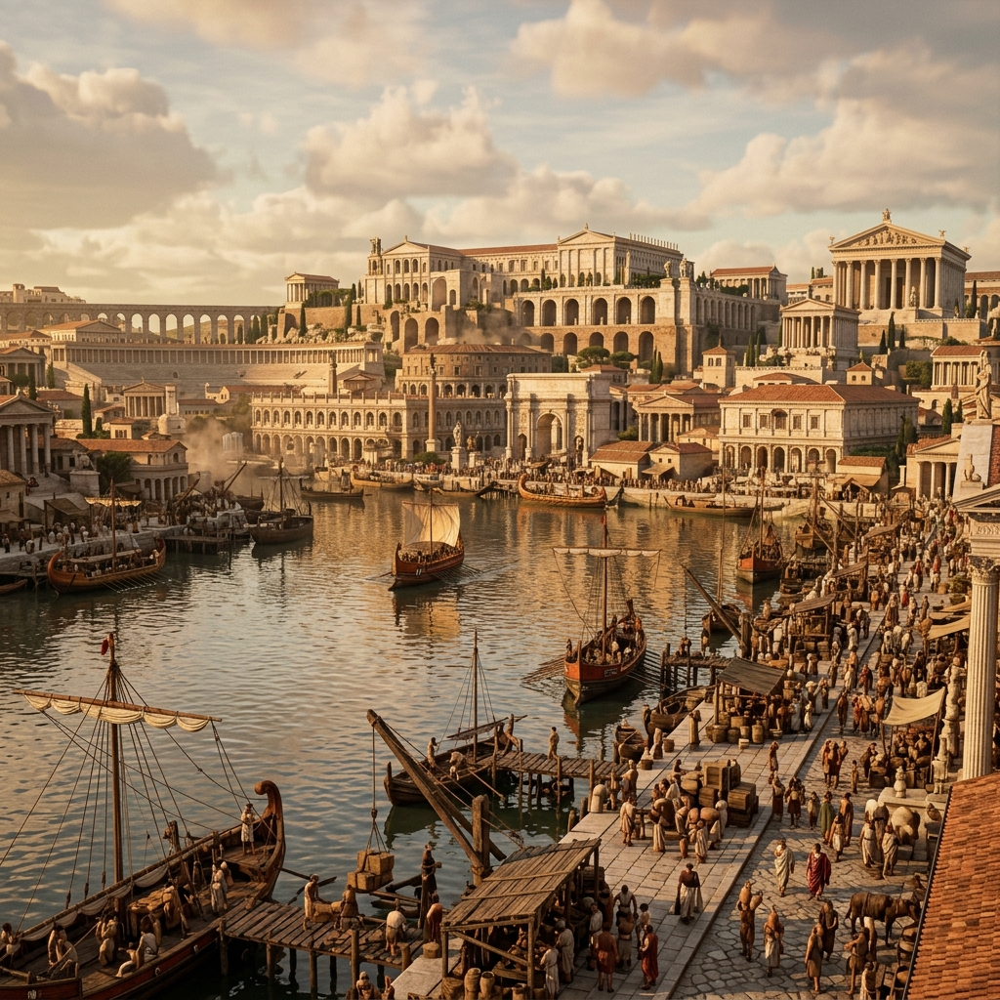
El monte Vesubio, que domina la bahía de Nápoles con su perfil inconfundible, no era reconocido como volcán por los romanos. El concepto moderno de vulcanología no existía, y aunque el poeta Diodoro Sículo había sugerido que podría ser de origen ígneo por la apariencia de sus rocas, los romanos de la época consideraban el Vesubio simplemente como una montaña excepcionalmente fértil —las laderas volcánicas producen suelos extraordinariamente ricos— ideal para el cultivo de la vid.
El Vesubio había permanecido en silencio durante siglos antes del 79 dC. Su última erupción documentada databa de aproximadamente el 1800 aC —más de mil ochocientos años antes—. Para los pompeyanos, la montaña era simplemente paisaje y fuente de prosperidad agrícola, no una amenaza.
Sin embargo, había habido señales de advertencia que los pompeyanos no supieron o no quisieron interpretar. En el año 62 dC, diecisiete años antes de la erupción, un violento terremoto sacudió la región y causó daños graves en Pompeya, Herculano y las ciudades vecinas. Las obras de reconstrucción todavía continuaban en el año 79. En los meses previos a agosto, una serie de pequeños terremotos —microseísmos, los llamamos hoy— habían inquietado a los habitantes. Varios manantiales habían secado inesperadamente. Los pozos daban agua con olor a azufre. Pero nadie conectó estos fenómenos con la montaña.
Hacia la una del mediodía —hora prima según el calendario romano— el Vesubio comenzó a rugir. Una columna de gas, ceniza y material piroclástico se disparó hacia el cielo con una violencia que los testigos describirían después como semejante a un pino gigantesco: el tronco ascendente y las ramas horizontales en la cima, expandiéndose a medida que el material eyectado perdía velocidad vertical. Esta columna eruptiva, que los vulcanólogos modernos llaman "columna Pliniana" en honor precisamente a la descripción de Plinio el Joven, alcanzó entre veinte y treinta kilómetros de altura.
Durante las primeras horas, la amenaza principal no fue el fuego sino la lluvia de pómez —la piedra volcánica porosa y ligera que cayó sobre Pompeya a razón de varios centímetros por hora. Los pompeyanos que no huyeron inmediatamente pronto vieron cómo los tejados de sus casas comenzaban a ceder bajo el peso acumulado. Las calles se llenaron de una nieve gris que hacía difícil caminar. Plinio el Joven, que observaba desde Miseno, al otro lado de la bahía, describió cómo la noche llegó prematuramente a las dos de la tarde, cuando la nube volcánica bloqueó el sol.
Plinio el Viejo, el famoso naturalista que comandaba la flota romana en Miseno, tomó la decisión que le costaría la vida: zarpar hacia Pompeya no para huir sino para investigar y rescatar supervivientes. Llegó a la ciudad vecina de Estabias, donde murió la mañana del 25 de agosto, probablemente por inhalación de gases volcánicos mientras dormía en la playa esperando que el viento cambiara para poder partir.
A lo largo de la noche del 24 y la madrugada del 25, la situación en Pompeya empeoró catastrophicamente. Las paredes de la columna eruptiva comenzaron a colapsar, generando los flujos piroclásticos: nubes de gas superсaliente, ceniza y rocas que descienden por las laderas del volcán a velocidades de cien a trescientos kilómetros por hora, a temperaturas de entre doscientos y seiscientos grados centígrados. El primer flujo piroclástico llegó a Herculano, la ciudad más cercana al Vesubio, en la madrugada del 25. En Pompeya, los flujos llegaron entre las seis y las ocho de la mañana del 25 de agosto.
"Las tinieblas que nos envolvían no eran como las de una noche sin luna, sino como las de un cuarto cerrado cuando se apaga la luz. Oíamos lamentos de mujeres, lloros de niños, gritos de hombres... Muchos pedían a los dioses socorro; otros decían que ya no había dioses y que esta era la última noche del mundo."
— Plinio el Joven, Epistulae VI.20, carta a Tácito
Cuando Giuseppe Fiorelli asumió la dirección de las excavaciones de Pompeya en 1863, notó que en las capas de ceniza consolidada aparecían con frecuencia cavidades con forma humana —el espacio negativo que había dejado un cuerpo que se había descompuesto en los casi dieciocho siglos transcurridos. Fiorelli tuvo la idea de rellenar estas cavidades con yeso líquido antes de continuar excavando. El resultado fue devastadoramente poderoso: los moldes de yeso revelaban no solo la postura sino los gestos, las expresiones, los detalles de la ropa y hasta las expresiones faciales de las personas que habían muerto allí.
Entre las víctimas más famosas están el "Perro de Pompeya", atado a su cadena y retorcido en su agonía; la "Dama del Anillo", una mujer con joyas de oro en sus dedos, probablemente perteneciente a las clases acomodadas; y los "Fugitivos de la Garden House", un grupo de cuarenta y una personas que habían buscado refugio en un jardín y fueron alcanzadas por el flujo piroclástico antes de poder escapar. Sus posturas —algunos protegiendo sus cabezas, otros abrazados, madres con niños en brazos— son el testimonio más estremecedor de sus últimos momentos.
Reconstrucción científica de la secuencia de la erupción del Vesubio del 79 dC, desde la columna Pliniana hasta los flujos piroclásticos que destruyeron Pompeya y Herculano.
Cayo Cecilio Plinio, conocido como Plinio el Joven para distinguirlo de su tío, tenía diecisiete años cuando el Vesubio entró en erupción. Estaba en Miseno, a veinte kilómetros de Pompeya, y fue testigo del comienzo de la catástrofe. Sus dos cartas al historiador Tácito —las Epistulae VI.16 y VI.20— escritas más de veinte años después pero basadas en notas tomadas en el momento, son el único relato ocular de la erupción que poseemos, y son consideradas documentos históricos de primer orden por su precisión y detalle.
La descripción de Plinio de la columna eruptiva —"similar a un pino, ya que se elevaba a gran altura sobre un tronco largo y luego se extendía en ramas"— es tan precisa desde el punto de vista vulcanológico que los científicos modernos la utilizan como descripción tipo para las erupciones de este estilo, llamadas "erupciones Plinianas" en su honor. Su relato de la muerte de su tío, que fue a investigar el fenómeno y murió por los gases, es también un documento excepcional sobre la actitud intelectual y física del sabio romano ante el peligro natural.
La redescubierta oficial de Pompeya ocurrió en 1748, cuando el rey Carlos VII de Nápoles ordenó excavar el sitio que los campesinos locales llamaban "la Civita" —la ciudad—. Los primeros trabajos fueron más saqueo que arqueología: los excavadores buscaban estatuas, frescos arrancables y objetos de valor para las colecciones reales. No había registro sistemático de dónde se encontraba cada objeto ni en qué contexto. Piezas irremplazables fueron separadas de su entorno arqueológico para siempre.
La situación cambió radicalmente con Giuseppe Fiorelli, nombrado director de las excavaciones en 1863. Fiorelli introdujo el sistema de cuadrículas numeradas —las insulae y regiones que todavía se usan hoy para identificar las zonas del yacimiento— y estableció el principio de excavar y documentar antes de mover. Su innovación más célebre, la técnica de moldes de yeso, transformó un yacimiento arqueológico en un panteón de humanidad congelada. En el siglo XX, las excavaciones se aceleraron y sistematizaron bajo la dirección de Amedeo Maiuri, que lideró las campañas más extensas de la historia del yacimiento entre 1924 y 1961.
El siglo XXI ha traído una nueva revolución metodológica a Pompeya. El Grande Progetto Pompei, financiado en parte por la Unión Europea, combinó restauración urgente de las estructuras dañadas con nuevas excavaciones utilizando tecnologías impensables para los pioneros del siglo XVIII: escáneres LIDAR que mapean el subsuelo sin excavar, análisis de ADN de los restos humanos, espectroscopía de rayos X para identificar pigmentos en los frescos, y modelización 3D de edificios enteros. Los resultados de Regio V y Regio IX, publicados entre 2018 y 2023, han sido portada de las principales revistas científicas del mundo.
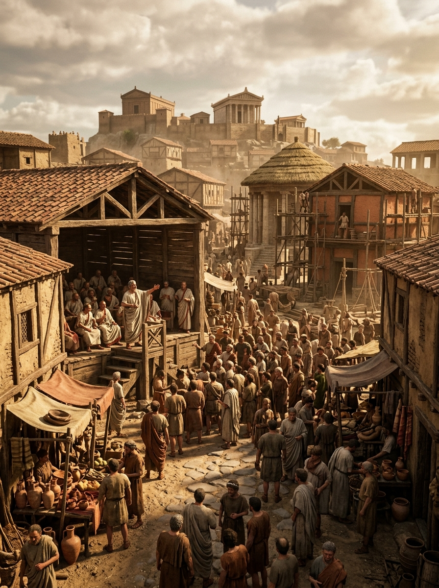
"En doce horas, una ciudad de veinte mil almas quedó sepultada bajo cuatro metros de ceniza. Dos mil años después, sus voces nos siguen hablando desde las paredes de sus casas, desde sus posturas de agonía, desde el pan carbonizado en el horno que nunca se abrió."
Pompeya es el regalo más extraño y terrible de la historia: una ciudad congelada en el momento de su muerte, que por esa misma razón nos habla de la vida con una vividez que ningún texto, ningún monumento, ningún museo puede igualar.
Continúa leyendo
Si la primera historia de Pompeya es una historia de muerte y destrucción, la segunda —y quizás la más importante— es una historia de vida extraordinariamente documentada. Bajo las capas de ceniza volcánica que enterraron la ciudad en el año 79 dC yacía no solo una tragedia sino una cápsula del tiempo sin precedentes: los frescos más vivos del mundo romano, el grafiti más íntimo y cotidiano que jamás se ha encontrado, alimentos carbonizados pero perfectamente identificables, herramientas, muebles, joyas, y los planos completos de casas, talleres, tabernas y baños públicos que ningún otro yacimiento arqueológico ha preservado con tanta fidelidad.
Los frescos de Pompeya son la colección más rica y mejor preservada de pintura romana que existe. Los arqueólogos han identificado cuatro "estilos pompeyanos" que se sucedieron cronológicamente desde el siglo II aC hasta la erupción del 79 dC, y que juntos documentan la evolución del gusto estético y las influencias culturales en la Italia romana durante casi tres siglos.
El estilo más emocionante para el público moderno es probablemente el de la Villa dei Misteri, un friso continuo que rodea una sala entera de la villa situada justo fuera de las murallas de Pompeya. El friso —de aproximadamente veintinueve metros de largo— representa una serie de figuras de tamaño natural participando en lo que parece ser un ritual de iniciación a los misterios de Dioniso. Las figuras son de una monumentalidad y una profundidad psicológica que anticipa el arte renacentista, y su significado exacto todavía es debatido por los especialistas.
Igualmente extraordinario es el mosaico de la Casa del Fauno —así llamada por la pequeña estatua de bronce de un fauno danzante encontrada en su atrio—. El mosaico del tablinum representa la batalla de Iso entre Alejandro Magno y Darío III con un detalle y un dinamismo impresionantes: más de un millón y medio de teselas de vidrio y piedra coloreada componen una imagen de casi seis metros de largo. El original, demasiado frágil para permanecer in situ, está ahora en el Museo Arqueológico Nacional de Nápoles, donde puede contemplarse en toda su magnitud.
Recorrido virtual en primera persona por una villa romana de Pompeya, mostrando los frescos, los mosaicos y la distribución arquitectónica de una domus de la élite del siglo I dC.
Una de las fuentes de información más inesperadas sobre la vida en Pompeya son los alimentos carbonizados —o convertidos en carbón por el calor de la erupción— que los arqueólogos han encontrado en hornos, alacenas y en las calles. Panes con forma de rueda marcados en porciones como el pan de hoy, higos, nueces, aceitunas, dátiles, trigo en sacos, pescado seco, queso: el catálogo de los alimentos pompeyanos es extraordinariamente diverso y sugiere una dieta mucho más variada y sofisticada de lo que se pensaba antes de las excavaciones.
Los thermopolia —los establecimientos de comida caliente que existían en prácticamente cada manzana de Pompeya— son especialmente reveladores. Tenían mostradores de piedra con grandes vasijas circulares empotradas que mantenían calientes los guisos, y algunos estaban decorados con frescos que representaban la comida que vendían, funcionando como los menús ilustrados modernos. Se han identificado más de ochenta thermopolia solo en Pompeya, y las recientes excavaciones de Regio V —entre 2019 y 2020— sacaron a la luz un thermopolium completamente intacto con restos de alimentos identificables, pinturas de los platos ofrecidos y hasta un hueso de perro en el rincón trasero.

Si los frescos revelan el arte y las aspiraciones de los pompeyanos más prósperos, el grafiti revela la voz del pueblo llano con una inmediatez que ningún otro documento histórico puede igualar. Se han catalogado más de once mil inscripciones en las paredes de Pompeya, y su variedad es asombrosa: desde anuncios electorales cuidadosamente pintados por los candidatos a los cargos municipales hasta declaraciones de amor, insultos, reclamos de deudas, anuncios de espectáculos de gladiadores, cuentas de taberna, obscenidades y bromas.
Los anuncios electorales —los programmata— son especialmente fascinantes porque revelan cómo funcionaba la política municipal romana. "Los vecinos de la calle de los Tintoreros recomiendan a Cayo Julio Polibio para edil" o "Los panaderos recomiendan a Marco Casello Marcelo" son ejemplos de la política de barrio, de gremio y de vecindad que sustentaba la vida pública romana. Las mujeres, aunque no podían votar, aparecen también apoyando a candidatos: "Estatia y Popidiana piden el voto para Marco Epídio Sabino".
Las declaraciones de amor son quizás las más conmovedoras. "Quisquis amat, valeat; pereat qui nescit amare" —"Que viva quien ama; que muera quien no sabe amar"— es uno de los más citados. Hay declaraciones más concretas: "Marcelo ama a Precia" en la pared de una taberna, o "Vibio Restituto durmió aquí solo, pensando en su Urbana". Y también insultos de una franqueza que sorprende: "Lucius es un estúpido", escrito en la pared de la casa del propio Lucius, presumiblemente por alguien que le tenía antipatía.
"Quisquis amat, valeat; pereat qui nescit amare; bis tanto pereat, quisquis amare vetat." — Que viva quien ama; que muera quien no sabe amar; que muera dos veces quien prohíbe amar.
— Grafiti pompeyano, CIL IV 3117
Una de las revelaciones más importantes de la arqueología pompeyana en las últimas décadas es la evidencia de la participación activa de las mujeres en la vida económica y pública de la ciudad. Eumachia, una sacerdotisa y empresaria pompeyana, financió la construcción del mayor edificio del foro —la "Basílica de Eumachia"— dedicada a Concordia y Pietas, y donó el edificio al gremio de los bataneros. Su estatua fue erigida por el propio gremio en señal de agradecimiento. No era una excepción: las inscripciones pompeyanas documentan varias mujeres propietarias de talleres, viñedos y negocios.
El famoso retrato conocido como "La Sappho de Pompeya" —una joven con tablillas y estilete en la mano, en posición de quien está a punto de escribir— es el icono de la mujer culta romana. La identidad de la retratada es desconocida, pero el mensaje de la imagen es claro: la posesión de tablillas y estilete era un símbolo de estatus intelectual, y la persona que encargó este retrato quería ser recordada como una mujer que leía y escribía.
La Pompeya moderna no es solo el sitio arqueológico del siglo XVIII o XIX: es uno de los yacimientos más activos del mundo en términos de nuevas excavaciones y descubrimientos. El Grande Progetto Pompei, lanzado en 2012 con financiación de la Unión Europea, ha combinado restauración de las estructuras existentes con nuevas excavaciones especialmente en Regio V y Regio IX, con resultados extraordinarios.
En 2020, las excavaciones del thermopolium de Regio V produjeron el hallazgo de un mostrador completamente intacto con restos de alimentos en las vasijas, frescos decorativos que representaban los platos disponibles y, más sorprendente, los restos del cocinero junto a la caja registradora, con monedas todavía en su puño. En 2021, los arqueólogos encontraron en Regio V un carro de ceremonias casi intacto —el carro de cuatro ruedas más completo que se ha encontrado jamás en el mundo romano— con sus elaboradas decoraciones de bronce y los arneses de los caballos todavía en posición. En 2022 y 2023, las excavaciones en Regio IX revelaron una panadería con molinos de piedra volcánica, hornos y, más perturbadoramente, los esqueletos de personas encadenadas en el interior, evidencia directa del trabajo esclavo que sustentaba la economía romana.
Una de las dimensiones más conmovedoras de la Pompeya arqueológica es la presencia de los niños —no como víctimas anónimas sino como actores vivos de la ciudad. Las excavaciones han encontrado juguetes de terracota: muñecas articuladas, animales en miniatura, trompos, pelotas. En algunas paredes aparecen grabados toscos —rayuelas, tableros de juego— que los niños trazaban con objetos puntiagudos mientras esperaban o mientras sus padres trabajaban. En los grafiti, las manos infantiles se distinguen a veces por la irregularidad de las letras: niños aprendiendo a escribir en las paredes de la ciudad, como hoy escriben en sus cuadernos.
Los datos arqueológicos sobre la educación en Pompeya son fascinantes. Se han encontrado tablillas de cera con ejercicios de escritura, cálculos matemáticos y copias de textos clásicos —Virgilio, Cicerón— que los estudiantes realizaban bajo la supervisión de un magister. Pompeya tenía al menos dos escuelas identificables arqueológicamente, y la presencia de libreros y copistas en el registro epigráfico sugiere que la alfabetización era significativamente más extendida de lo que se pensaba antes. Las inscripciones electorales —que requerían lectores para tener sentido— refuerzan esta conclusión.
Las técnicas de análisis modernas han transformado lo que sabemos sobre las víctimas de Pompeya. El análisis de isótopos de estroncio y oxígeno en los dientes de los restos humanos permite determinar dónde creció una persona —distintas regiones tienen diferentes firmas isotópicas en el agua y los alimentos—. Estos análisis han revelado que una proporción significativa de los muertos en Pompeya no habían nacido en la ciudad: eran inmigrantes de otras partes de Italia y del Mediterráneo, confirmando el carácter cosmopolita de la sociedad romana.
El análisis de ADN, aplicado por primera vez a restos pompeyanos en estudios publicados entre 2020 y 2023, ha abierto una ventana adicional a la diversidad genética de la población. Los resultados sugieren una mezcla de orígenes que incluye componentes del Mediterráneo Oriental —coherente con la inmigración desde Grecia, Anatolia y Oriente Próximo— junto con poblaciones locales itálicas. La Pompeya genética era, como la Pompeya arqueológica, un mosaico del mundo romano.
"Pompeya no nos da solo una imagen de la muerte. Nos da la imagen más completa y honesta que poseemos de la vida romana. Y en esa vida —con toda su violencia, su humor, su belleza y su crueldad— nos reconocemos."
— Mary Beard, Pompeii: The Life of a Roman Town, 2008
"Los pompeyanos pintaron sus paredes, escribieron insultos en las columnas, hicieron el amor y cocinaron el pan del día. No sabían que serían inmortales. Solo vivían. Y esa vida —con toda su belleza y su crueldad— dura para siempre."
Pompeya nos devuelve algo que la historia generalmente nos niega: la voz de las personas ordinarias. Los grandes, los emperadores, los generales —esos siempre dejan huella. Pompeya nos da al panadero, a la mujer que declara su amor en una pared, al niño que jugaba en la calle cuando el volcán despertó.
Continúa leyendo
Durante siglos, la destrucción de Pompeya se contó como una historia de castigo o de mala suerte. Pero desde finales del siglo XX, la vulcanología ha reconstruido el 79 dC con un detalle asombroso: sabemos qué tipo de erupción fue, cuánto duró cada fase, a qué velocidad y temperatura viajó cada nube de ceniza, y por qué mató a unos y perdonó a otros. Esta es la historia del Vesubio contada no desde la tragedia humana, sino desde la física y la geología del volcán mismo.
Los vulcanólogos clasifican la erupción del 79 dC como "erupción Pliniana", el tipo más violento y explosivo que existe, llamado así en honor a Plinio el Joven, cuyo relato escrito a Tácito es tan preciso que los científicos modernos lo usan todavía como descripción de referencia del fenómeno. Una erupción Pliniana se produce cuando el magma es extremadamente viscoso y está saturado de gases disueltos —principalmente vapor de agua y dióxido de azufre—. Al ascender por el conducto volcánico, la presión disminuye bruscamente, los gases se expanden de forma casi instantánea y fragmentan el magma en partículas diminutas de ceniza y pómez, que son expulsadas a velocidades supersónicas.
El resultado es una columna eruptiva que puede superar los treinta kilómetros de altura, atravesando la troposfera y entrando en la estratosfera. Plinio el Joven la comparó con la silueta de un pino piñonero: un tronco vertical estrecho que se abre en una copa ancha al chocar con capas de aire más densas. Esa metáfora de hace casi dos mil años sigue siendo, según los propios vulcanólogos, la descripción más exacta que existe del perfil de una columna Pliniana.
El estudio estratigráfico de los depósitos volcánicos —capa por capa, como anillos de un árbol— permite reconstruir la erupción con una precisión de horas. Los vulcanólogos distinguen dos grandes fases. La primera, la fase Pliniana propiamente dicha, duró unas dieciocho o diecinueve horas y consistió principalmente en la caída de pómez: fragmentos de roca volcánica porosa y ligera que cayeron sobre Pompeya a un ritmo de varios centímetros por hora, acumulando finalmente entre dos y tres metros de material antes de que comenzara la fase siguiente. La segunda fase, mucho más breve pero letal, comenzó cuando la columna eruptiva —ya demasiado pesada para sostenerse— empezó a colapsar sobre sí misma en sucesivos pulsos, generando los flujos y oleadas piroclásticas que sepultaron Pompeya, Herculano, Estabias y Oplontis en cuestión de minutos.
Un dato que ha generado un intenso debate académico es la fecha exacta. Durante siglos se dio por buena la fecha del 24 de agosto, transmitida por la mayoría de los manuscritos medievales de las cartas de Plinio. Sin embargo, hallazgos arqueológicos recientes apuntan a una fecha posterior: en 2018 se encontró en una casa en excavación una inscripción a carboncillo fechada "dieciséis días antes de las calendas de noviembre" —equivalente al 17 de octubre—, y en las víctimas se han hallado frutos otoñales como granadas y castañas, además de ropa de abrigo más propia de octubre que de pleno verano. Buena parte de la comunidad científica considera hoy más probable una erupción el 24 de octubre del 79 dC, aunque el debate sigue abierto y los textos tradicionales de Plinio continúan citando agosto.
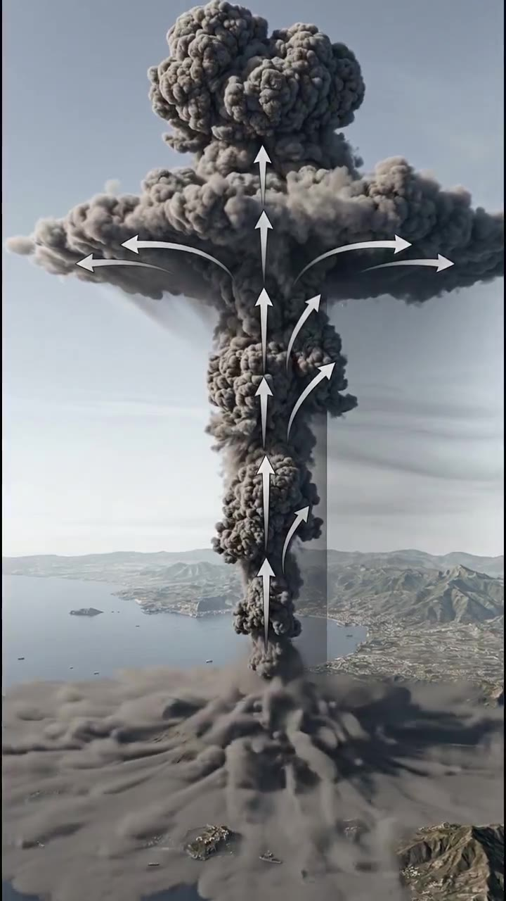
Lo que realmente selló el destino de Pompeya no fue la lluvia de pómez —lenta y, en principio, evitable si se huía a tiempo— sino los flujos y oleadas piroclásticas: corrientes de densidad formadas por gas volcánico sobrecalentado, ceniza fina y fragmentos de roca, que descienden por las laderas del volcán impulsadas por la gravedad y por su propia temperatura, que reduce su densidad y las mantiene en movimiento casi como un fluido. Los vulcanólogos han calculado que estas corrientes viajaron a velocidades de entre cien y setecientos kilómetros por hora y alcanzaron temperaturas de entre doscientos cincuenta y trescientos grados centígrados en Pompeya —lo suficiente para provocar la muerte instantánea por choque térmico, no por asfixia lenta, según los estudios sobre las posturas de los cuerpos publicados por el equipo de Giuseppe Mastrolorenzo en la década de 2000—.
Herculano, más cercana al volcán, fue alcanzada por el primer flujo piroclástico horas antes que Pompeya y quedó sepultada bajo hasta veinte metros de material —mucho más que los cuatro a seis metros de Pompeya—, lo que explica su extraordinario estado de conservación, incluyendo estructuras de madera carbonizada que en ningún otro yacimiento romano han sobrevivido.
El Vesubio no es un volcán extinto: es uno de los volcanes más vigilados del planeta. El Osservatorio Vesuviano, fundado en 1841 al pie del volcán, es el observatorio vulcanológico permanente más antiguo del mundo y hoy forma parte del Istituto Nazionale di Geofisica e Vulcanologia (INGV), que monitoriza en tiempo real la sismicidad, la deformación del terreno y las emisiones de gas del volcán. Desde su última erupción, en 1944, el Vesubio permanece en calma, pero los vulcanólogos lo consideran "capaz" de una nueva erupción Pliniana, y hoy más de medio millón de personas viven en la llamada "zona roja" de riesgo inmediato, lo que convierte al Vesubio en uno de los volcanes más peligrosos del mundo no por su actividad actual, sino por la densidad de población a su alrededor.
Comparar el 79 dC con erupciones Plinianas modernas ayuda a dimensionar el fenómeno: la erupción del Monte Santa Helena en 1980, en Estados Unidos, liberó una energía comparable en su fase explosiva inicial, mientras que la del Pinatubo en Filipinas en 1991 —considerada la mayor erupción Pliniana del siglo XX— superó ampliamente al Vesubio en volumen de material expulsado. Estudiar el Vesubio, con su registro arqueológico único, sigue siendo hoy una de las mejores herramientas que tiene la ciencia para predecir cómo se comportaría una erupción similar en una zona densamente poblada.
"El Vesubio del 79 dC no es solo un desastre del pasado: es el mejor laboratorio natural que tiene la vulcanología moderna para entender cómo se comporta una erupción explosiva sobre una población humana, minuto a minuto."
— Haraldur Sigurdsson, vulcanólogo, Encyclopedia of Volcanoes, 2000
Continúa leyendo
Detrás de cada relato sobre Pompeya hay un conjunto de datos que la arqueología y la vulcanología han ido afinando durante más de dos siglos de excavaciones. Cuántas ciudades desaparecieron, cuánta roca cayó del cielo, cuánta gente vivía allí y cuántos cuerpos se han recuperado: estas cifras, lejos de ser fría estadística, son la base sobre la que se reconstruye con rigor lo que realmente ocurrió aquel día.
La erupción del 79 dC no destruyó únicamente Pompeya. En el radio de destrucción del Vesubio cayeron al menos cuatro núcleos urbanos: Pompeya, la más extensa, con unas sesenta y seis hectáreas amuralladas; Herculano, más pequeña —unas veinte hectáreas— pero sepultada bajo un depósito mucho más profundo, de hasta veinte metros; Estabias, una zona de villas de recreo de la aristocracia romana en la costa, donde murió Plinio el Viejo; y Oplontis, conocida sobre todo por la lujosa Villa de Popea, la segunda esposa del emperador Nerón. En conjunto, la erupción borró del mapa una franja costera de varios kilómetros que tardaría siglos en volver a ser habitada.
Los modelos vulcanológicos actuales, basados en el volumen y la dispersión de los depósitos de pómez, estiman que la columna eruptiva alcanzó una altura máxima de entre veinte y treinta y tres kilómetros, penetrando en la estratosfera. Durante el momento de mayor intensidad, el volcán llegó a expulsar, según distintas estimaciones, más de cien mil toneladas de material por segundo. En total, se calcula que la erupción liberó entre uno y medio y cuatro kilómetros cúbicos de magma —roca, ceniza y pómez—, una cifra que sitúa al Vesubio del 79 dC entre las erupciones de magnitud moderada-alta en la escala de explosividad volcánica (VEI), con un índice estimado de 5 sobre un máximo de 8.
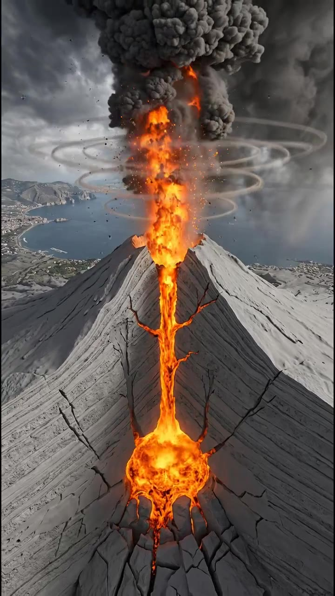
Calcular la población de Pompeya en el momento de la erupción es un ejercicio de estimación arqueológica: las cifras aceptadas oscilan entre once mil y veinte mil habitantes dentro de las murallas, según se contabilicen o no los esclavos y la población flotante del puerto. En Herculano, mucho más pequeña, la población se estima entre cuatro mil y cinco mil personas. En el conjunto de la región afectada, algunos demógrafos históricos elevan la cifra total de residentes a más de dieciséis mil personas.
De las víctimas, los arqueólogos han documentado hasta la fecha alrededor de mil trescientos cuerpos o restos óseos en Pompeya —incluidos los famosos moldes de yeso de Fiorelli—, lo que sugiere, contra la intuición popular, que una parte considerable de la población logró huir antes de que los flujos piroclásticos llegaran a la ciudad. En Herculano, donde durante décadas se pensó que casi no había víctimas por la escasez de cuerpos hallados en la propia ciudad, el descubrimiento en la década de 1980 de más de trescientos esqueletos refugiados en los cobertizos junto al antiguo puerto —hoy conocidos como "fornici"— cambió radicalmente esa lectura: la gente sí murió en masa, simplemente había buscado refugio junto al mar esperando una evacuación por barco que nunca llegó a tiempo.
Pompeya y Herculano son, en términos demográficos y forenses, el desastre natural de la Antigüedad mejor documentado que existe: pocos eventos catastróficos anteriores al siglo XX permiten cruzar registros arqueológicos, análisis isotópicos de ADN, datación estratigráfica y fuentes escritas contemporáneas con este nivel de detalle. Ese cruce de datos ha permitido a los investigadores estimar, por ejemplo, la proporción de hombres, mujeres, niños y esclavos entre las víctimas, su procedencia geográfica mediante análisis de isótopos dentales, e incluso, en algunos casos, enfermedades y condiciones de salud previas a la erupción. Ningún otro yacimiento del mundo antiguo ofrece una base estadística comparable para estudiar cómo vivía —y cómo murió— una población romana real.
"Pompeya no es una anécdota trágica: es el mayor conjunto de datos demográficos y forenses que poseemos sobre una población romana real, congelada en un instante y medible con precisión científica dos mil años después."
— Estelle Lazer, antropóloga forense, Resurrecting Pompeii, 2009
Continúa leyendo
En septiembre del año 9 de nuestra era, en las profundidades de un bosque de Germania que los romanos nunca habían conseguido cartografiar del todo, veinte mil soldados romanos de las legiones XVII, XVIII y XIX marchaban en columna de marcha bajo una lluvia persistente. Al frente, el gobernador Publio Quintilio Varo confiaba en su guía germánico, un brillante joven oficial auxiliar que había servido en el ejército romano durante años y hablaba latín con fluidez. Ese joven, cuyo nombre romano era Arminius y cuyo nombre germánico era Hermann, hijo de Segimero, jefe del pueblo querusco, estaba llevando a las tres legiones al mayor desastre militar de la historia de Roma.
A principios del siglo I de nuestra era, el Rin era la frontera nororiental del Imperio Romano. Sin embargo, el emperador Augusto tenía planes más ambiciosos: empujar la frontera hasta el río Elba, una línea más corta y más defendible que el Rin, que reduciría el perímetro fronterizo del Imperio y añadiría a Roma el control de los ricos recursos y la densa población de la Germania interior.
Las campañas del general Druso entre el 12 y el 9 aC habían establecido una presencia romana al este del Rin, con varios campamentos permanentes y una red de alianzas con tribus germánicas locales. Druso había llegado hasta el Elba antes de morir de una caída de caballo en el año 9 aC —en la frontera que su hijo Germánico reivindicaría dos décadas más tarde—. Su hermano Tiberio continuó las campañas, y para el año 7 dC la situación parecía tan estable que Augusto decidió que Germania ya podía ser administrada como provincia, en lugar de ser simplemente un territorio de operaciones militares.
Para ese papel administrativo, Augusto nombró a Publio Quintilio Varo, un general competente y administrador experimentado que había gobernado con éxito Siria. El problema era que Siria era una provincia totalmente romanizada con ciudades, infraestructuras y una clase dirigente que llevaba generaciones colaborando con Roma. Germania era otra cosa: un territorio de bosques casi impenetrables, pantanos y aldeas dispersas, sin ciudades, sin calzadas, sin la estructura administrativa que hacía gobernable una provincia romana. Varo no vio la diferencia, o no quiso verla.
Arminius era, en todos los sentidos externos, un producto del sistema romano que intentaría destruir. Enviado a Roma como rehén de la tribu querusca cuando era niño —práctica habitual para asegurar la lealtad de los jefes aliados—, creció en la capital del Imperio, recibió educación romana, aprendió latín, estudió tácticas militares y sirvió como oficial auxiliar en el ejército romano, alcanzando el rango de caballero romano y el mando de tropas auxiliares germánicas.
Lo que pensaba realmente Arminius durante esos años de servicio romano es imposible de saber. Tácito y Velleius Paterculus —nuestras dos fuentes principales— lo presentan como alguien que siempre tuvo la intención de liberar a su pueblo, pero esta imagen puede ser una elaboración retrospectiva. Lo que sí sabemos es que en el año 7 dC, cuando Varo fue nombrado gobernador, Arminius comenzó a moverse. Estableció contacto con los jefes de varias tribus germánicas, incluida la de su propio suegro Segestas —que, significativamente, advertiría a Varo de la conspiración y no sería escuchado—, y comenzó a planificar la emboscada más perfecta de la historia militar antigua.
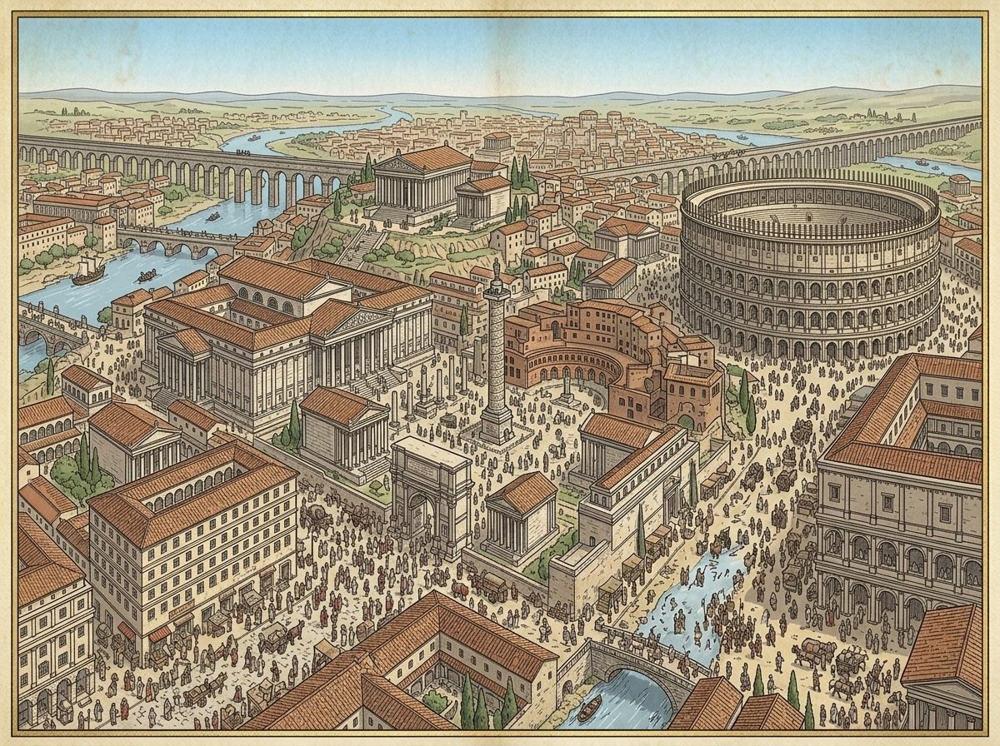
El engaño de Arminius fue brillante en su sencillez. Inventó una revuelta indígena en una región alejada del campamento romano de verano, suficientemente convincente como para que Varo decidiera desplazarse a sofocarla antes de regresar a los cuarteles de invierno en el Rin. La ruta que sugirió —a través del Bosque de Teutoburgo, en lo que hoy es el noroeste de Alemania— era terriblemente inadecuada para el movimiento de un ejército grande: senderos estrechos entre árboles enormes, terreno empapado por las lluvias otoñales, colinas que impedían ver más allá de cien metros en cualquier dirección.
El primer día de la emboscada, el ejército romano —veinte mil legionarios más quizás diez mil auxiliares, mujeres, esclavos y seguidores del campamento— marchaba en una columna de más de veinte kilómetros de longitud cuando los guerreros germánicos emergieron de entre los árboles simultáneamente a lo largo de toda la columna. Los romanos no podían formar la falange de cohortes que era su arma definitiva: el terreno no lo permitía. No había campo abierto donde desplegar la triple acies, no había espacio para coordinar la artillería, no había flancos que defender porque el bosque era el flanco por todos lados.
El primer día fue confusión y pérdidas masivas. Varo intentó reorganizar la columna en una formación más compacta, pero la tarea era gigantesca: veinte kilómetros de hombres aterrorizados bajo un fuego constante de jabalinas y flechas, en un lodazal que hacía que cada paso costara tres veces el esfuerzo normal. La lluvia apagaba las antorchas que los soldados necesitaban para ver dónde ponían los pies.
El segundo día fue peor. Los germánicos habían construido durante la noche una empalizada de madera a través del sendero que los romanos debían seguir, canalizando el avance hacia los ataques de flancos. Cada vez que los legionarios intentaban girar para enfrentar a sus atacantes, encontraban árboles y más árboles. Los centuriones intentaban mantener la disciplina, pero los hombres caían a cientos y las formaciones se deshacían.
El tercer día fue la aniquilación. Varo, herido y sin ver salida, se suicidó clavándose su espada —el gesto de honor final de un general romano derrotado. Cuando su comandante cayó, el ejército romano se desintegró. Algunos centuriones más veteranos intentaron abrirse paso con sus hombres; la mayoría fue masacrada. Una pequeña fracción de caballería logró huir, incluyendo el comandante de la caballería, Numerio Vala, que fue después denunciado como cobarde por haber escapado cuando sus legiones morían. Los prisioneros supervivientes fueron sacrificados a los dioses germánicos o vendidos como esclavos.
Reconstrucción histórica de las tácticas de emboscada germánica en el Bosque de Teutoburgo, mostrando las condiciones de terreno que anularon las ventajas tácticas de las legiones romanas.
Cuando la noticia llegó a Roma, Augusto —que tenía setenta y un años y había llevado décadas construyendo el sistema del Imperio— sufrió lo que los fuentes describen como una crisis nerviosa. Dejó crecer su barba y su cabello sin recortar durante meses, en señal de duelo. Se golpeaba la cabeza contra las paredes del palacio gritando "¡Quintilio Varo, devuélveme mis legiones!" —la frase que se convertiría en uno de los más famosos lamentos de la historia—. Reforzó las milicias de la ciudad por temor a un ataque germánico sobre Italia, aunque Arminius, sin recursos para asediar ciudades romanas, nunca tuvo esa capacidad.
La consecuencia más duradera de Teutoburgo fue simbólica pero profundamente significativa: los números de las tres legiones destruidas —XVII, XVIII, XIX— nunca fueron reutilizados en la historia romana. Era costumbre que cuando una legión era disuelta o destruida, sus números se reasignaran a nuevas unidades. Pero las legiones de Varo recibieron un tratamiento diferente: sus números fueron borrados de la lista legionaria para siempre, como si nunca hubieran existido, o quizás como recordatorio permanente del desastre.
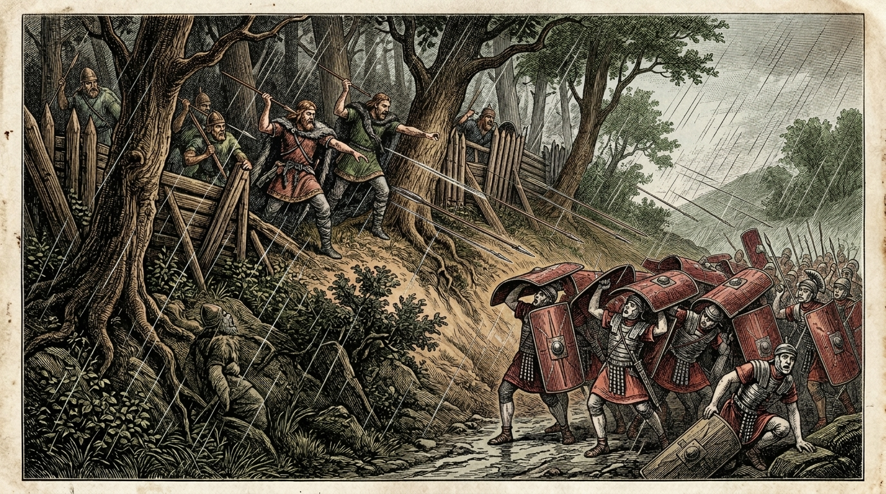
En el año 15 dC, seis años después de la masacre, el general Germánico —sobrino del emperador Tiberio y uno de los comandantes más brillantes de su generación— condujo a sus legiones al Bosque de Teutoburgo con el doble objetivo de recuperar los cuerpos de los caídos y vengar la derrota. Tácito, que escribió su relato décadas después pero basándose en fuentes directas, describe la escena con un horror contenido que atraviesa los siglos: los legionarios de Germánico encontraron los huesos blanqueados de sus compatriotas esparcidos por el bosque en el mismo orden en que habían caído —primeros los de la vanguardia, luego los del centro, finalmente los de la retaguardia—. Los cráneos estaban clavados en los troncos de los árboles. Los altares donde los druidas germánicos habían sacrificado a los prisioneros de más alto rango todavía mostraban las marcas de las hogueras.
Germánico ordenó enterrar todos los restos en un túmulo colectivo. Sus soldados, muchos de los cuales habían conocido personalmente a algunos de los muertos, realizaron la tarea en silencio. Tácito señala que el propio Germánico puso con sus manos el primer trozo de césped sobre el túmulo —un gesto de piedad personal que fue criticado por Tiberio como innecesariamente emocional para un general imperial. Las campañas de Germánico de 14 a 16 dC recuperaron dos de los tres águilas legionarias perdidas. La tercera no sería recuperada hasta el año 41 dC, bajo el emperador Claudio.
Durante siglos, la localización exacta de la batalla de Teutoburgo fue un misterio histórico. Tácito y los otros autores latinos proporcionaban descripciones del terreno —bosques, pantanos, una colina estrecha— pero sin coordenadas precisas, y la Germania romana era tan poco conocida geográficamente que los historiadores modernos han debatido la localización durante generaciones.
La respuesta llegó en 1987, de la manera más inesperada. Tony Clunn, un oficial del ejército británico aficionado a la arqueología y destinado en la base de la OTAN en Osnabrück, estaba realizando prospecciones con detector de metales en la zona de Kalkriese, al norte de Osnabrück, cuando comenzó a encontrar monedas romanas de la época de Augusto en cantidades inusuales. Informó a las autoridades arqueológicas alemanas, que iniciaron excavaciones sistemáticas en 1989. Lo que encontraron transformó nuestra comprensión de la batalla.
Kalkriese resultó ser el lugar donde se libró al menos la fase decisiva de la masacre. Las excavaciones han sacado a la luz más de seis mil monedas romanas del período augusteo, fragmentos de equipamiento legionario —fíbulas de uniforme, herrajes de cinturón, piezas de lorica segmentata—, huesos humanos y de animales mezclados en capas que reflejan el caos del combate, y la más extraordinaria de todas las piezas: una máscara de desfile de bronce de un oficial de caballería romana, casi perfectamente preservada, que se ha convertido en el símbolo del yacimiento y del museo que se levantó en el lugar. La tierra de Kalkriese todavía guarda los secretos de aquellos tres días de septiembre del año 9 dC.
"Seis años después, Germánico atravesó el bosque. Encontró los huesos blanqueados de los hombres de Varo esparcidos entre los árboles, los cráneos clavados en los troncos, los altares donde los sacerdotes germánicos habían sacrificado a los tribunos y a los centuriones principales."
— Tácito, Anales I.61
"¡Quintilio Varo, devuélveme mis legiones!" Roma nunca olvidó el bosque de Teutoburgo. Nunca reutilizó los números XVII, XVIII y XIX. Y nunca —ni bajo Augusto, ni bajo Tiberio, ni bajo los emperadores más ambiciosos— volvió a cruzar el Rin para quedarse.
Teutoburgo fue el límite del mundo romano. El punto donde el Imperio encontró una frontera que no pudo cruzar. Y en ese límite, Europa tuvo la oportunidad de ser diferente.
Continúa leyendo
Si las legiones romanas eran la fuerza que conquistaba los campos de batalla abiertos, la maquinaria de guerra romana era la que doblegaba las ciudades amuralladas, los castillos en roca viva y las fortalezas que parecían inexpugnables. Roma entendió antes que nadie que la guerra no terminaba en el campo abierto: terminaba cuando el último muro caía y el último defensor se rendía o moría. Y para hacer caer muros, Roma desarrolló un arsenal de ingenio mecánico que no sería superado en Europa hasta la introducción de la pólvora en el siglo XIV.
La artillería romana —las máquinas de torsión que lanzaban proyectiles a distancia— derivaba de los inventos helenísticos del período posterior a Alejandro Magno, pero los ingenieros romanos los perfeccionaron y estandarizaron hasta un nivel que ninguna otra cultura de la Antigüedad alcanzó. Cada legión disponía de su propio tren de artillería: cincuenta y cinco carroballistae —ballistas montadas en carros— y diez onagros por legión, según Vegecio.
El scorpio era la pieza artillera más precisa del arsenal romano: un ballista de pequeño calibre montado sobre un trípode giratorio que disparaba pernos de hierro de setenta a cien centímetros de longitud. Su funcionamiento se basaba en dos manojos de cuerda trenzada —normalmente de tendón o pelo femenino, materiales que ofrecían la elasticidad óptima— que se retorcían hasta acumular tensión suficiente para propulsar el proyectil. El alcance efectivo del scorpio llegaba a los cien metros con una precisión extraordinaria para la época: los soldados romanos lo apodaban "el escorpión" porque su picadura llegaba de donde no se le veía.
El onagro —literalmente "asno salvaje", por la patada que daba al disparar— era una catapulta de un solo brazo que lanzaba piedras de entre dos y seis kilogramos a distancias de entre ciento cincuenta y cuatrocientos metros. No era especialmente preciso, pero su potencia era devastadora contra las mamposteías de las murallas enemigas. Los proyectiles del onagro podían derrumbar merlones, destruir parapetos y, en el asedio de ciudades, lanzar por encima de las murallas no solo piedras sino también cabezas de enemigos muertos, animales en descomposición —antecedente de la guerra biológica— o recipientes de incendiarios.
Reconstrucción en movimiento del ariete romano en operación contra una muralla fortificada, mostrando la estructura de madera protectora y el mecanismo de oscilación del palo de choque.
El ariete —del latín aries, carnero, por la forma de su cabeza de hierro— era el instrumento más directo y brutalmente eficaz del arsenal de asedio romano: un enorme tronco de árbol, a veces de veinte o treinta metros de longitud, suspendido de una estructura de madera mediante cadenas, con la punta revestida de hierro moldeada en forma de cabeza de carnero. Los soldados hacían oscilar el ariete como un péndulo, golpeando repetidamente el mismo punto de la muralla hasta que la argamasa cedía y los bloques comenzaban a moverse.
Los romanos desarrollaron dos tipos principales de ariete. El más simple era el ariete manual, sostenido por los propios soldados, que lo llevaban corriendo hacia el muro y lo golpeaban con el impulso del movimiento. El más efectivo era el ariete suspendido en la testudo arietaria: una enorme estructura de madera con ruedas, cubierta de cuero mojado o metal para protegerla del fuego griego que los defensores arrojaban desde las murallas, que albergaba el ariete en su interior y permitía maniobrar con él de manera más controlada y segura.
En el asedio de Jerusalén en el año 70 dC, el general Tito empleó arietes de dimensiones colosales contra los muros de la ciudad. Josefo, el historiador judío que fue testigo del asedio, describe el impacto de los arietes con horror: cada golpe hacía temblar los cimientos de los muros, y los defensores podían sentir la vibración en sus pies incluso cuando estaban en el interior de la ciudad, lejos del punto de impacto.
Si el ariete atacaba el pie de la muralla, la torre de asedio —turris— atacaba su corona. Estas estructuras monumentales de madera eran, por su altura y complejidad constructiva, los mayores artefactos móviles del mundo antiguo. Las torres romanas podían alcanzar entre doce y treinta metros de altura —equivalentes a edificios de cuatro a diez pisos— y albergaban múltiples plataformas de combate en diferentes niveles, cada una con sus propias funciones tácticas.
La plataforma superior igualaba en altura la corona de la muralla enemiga y disponía de un puente levadizo que se bajaba sobre la muralla cuando la torre se acercaba suficientemente, permitiendo a los soldados cruzar directamente al camino de ronda del muro. Las plataformas intermedias alojaban artillería ligera y arqueros que cubrían el avance de la torre y suprimían el fuego de los defensores. La plataforma inferior protegía un ariete que golpeaba el pie de la muralla mientras la torre estaba en posición.
Desplazar una torre de asedio era una operación logística monumental. Las torres se construían in situ, cerca del punto de ataque, sobre una base de maderos que distribuían el peso sobre el suelo. Su avance hacia la muralla se realizaba rodando sobre troncos que los ingenieros colocaban y volvían a colocar sucesivamente, o sobre ruedas especiales. A veces era necesario nivelar el terreno entre la torre y la muralla, rellenando fosos o allanando irregularidades: trabajo de ingeniería pesado que a veces costaba semanas.
Quizás el aspecto más impresionante de la guerra de asedio romana no eran las máquinas espectaculares sino las obras de ingeniería que rodeaban y aislaban las ciudades sitiadas. El agger era una rampa de tierra y madera que se construía desde el nivel del suelo hasta la corona de la muralla sitiada, permitiendo que los soldados subieran directamente a la muralla enemiga por una pendiente progresiva en lugar de intentar escalarla verticalmente. Construir un agger era un trabajo ingente: miles de soldados acarreando tierra, cortando madera, instalando los refuerzos estructurales, mientras los defensores hacían todo lo posible por destruirlo.
La obra de asedio más compleja era la circunvalación —una línea de murallas y torres construida por los romanos alrededor de la ciudad sitiada para impedir que nadie entrara o saliera. Y cuando existía el riesgo de un ejército de socorro, se añadía la contravallación: una segunda línea de murallas, esta vez mirando hacia el exterior, para proteger al ejército sitiador de los ataques desde fuera.
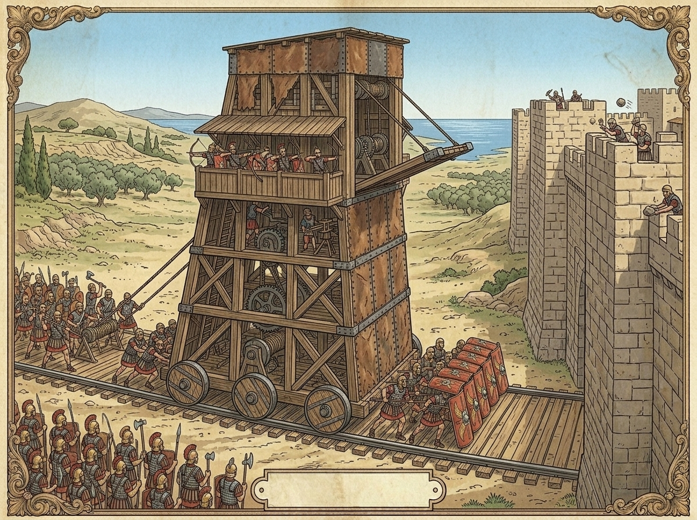
El gran asedio de Alesia, en el año 52 aC, sigue siendo el ejemplo más extraordinario de ingeniería de asedio en la historia antigua. César había acorralado en la colina de Alesia al líder galo Vercingetórix con ochenta mil guerreros. Para impedir su escape, César ordenó construir una línea de circunvalación de dieciocho kilómetros de longitud alrededor de la colina. Cuando llegó un ejército galo de socorro —estimado por César en doscientos cincuenta mil hombres, aunque los historiadores modernos reducen esta cifra— César ordenó construir una segunda línea de contravallación de veintiún kilómetros mirando hacia fuera. En pocas semanas, César había construido cuarenta kilómetros de murallas con fosos, parapetos, torres y trampas antipersonales, con un ejército de cincuenta mil hombres, atrapado entre dos fuerzas enemigas mucho más numerosas. El resultado fue la derrota de ambos ejércitos galos y la rendición de Vercingetórix.
El asedio de Masada, entre los años 73 y 74 dC, es otro caso extraordinario. Masada era una fortaleza natural sobre una mesa de roca vertical de cuatrocientos metros de altura en el desierto del Neguev, habitada por los últimos resistentes judíos de la gran revuelta del 66-73 dC. El gobernador romano Lucio Flavio Silva ordenó la construcción de una rampa de tierra y piedra desde el desierto hasta la cima de la meseta —una obra de ingeniería de proporciones faraónicas que hoy todavía puede verse en el yacimiento de Masada. La rampa tardó varios meses en construirse y cuando estuvo terminada, los defensores de Masada eligieron el suicidio colectivo antes que la rendición.
Exploración de murallas y sistemas de fortificación romana, mostrando las técnicas constructivas y los elementos defensivos del diseño militar romano.
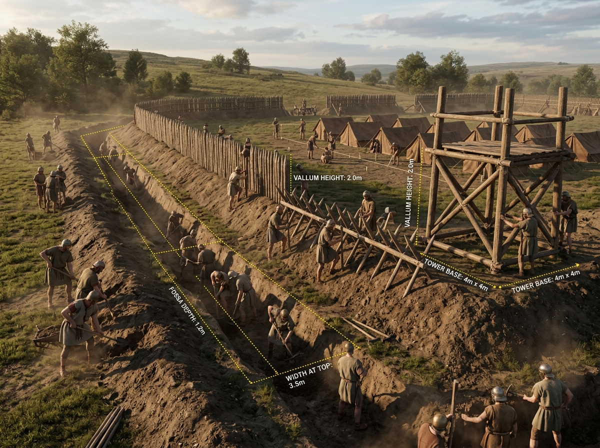
"No hay ciudad en el mundo que sea inexpugnable para Roma si los romanos tienen tiempo, recursos y la voluntad de tomarla. Esas tres cosas, Roma siempre las ha tenido."
— Inspirado en Flavio Josefo, La Guerra Judía, s. I dC
"Ningún muro era suficiente. Ninguna montaña inexpugnable. Ninguna ciudad inalcanzable. Donde Roma decidía que algo debía caer, caía. Era solo una cuestión de ingeniería, tiempo y voluntad."
La maquinaria de guerra romana no fue solo tecnología militar: fue la expresión material de la voluntad imperial de Roma de que no existieran límites a su poder. Esa mentalidad —que ningún obstáculo físico es insuperable con suficiente ingeniería— es quizás el legado más duradero de Roma al mundo moderno.
Volver al inicio
En la primavera del año 334 antes de Cristo, un ejército de cuarenta y cuatro mil hombres cruzó el estrecho del Helesponto desde Europa hacia Asia. Al frente marchaba Alejandro III de Macedonia, un joven de veintiún años que acababa de consolidar su poder tras el asesinato de su padre Filipo II, que había aplastado las rebeliones griegas que amenazaban con desintegrar el reino antes de que pudiera comenzar la gran campaña. Lo que seguía era la empresa más ambiciosa que el mundo griego había concebido: la invasión y conquista del Imperio Persa, el mayor estado que la humanidad había conocido hasta entonces.
La primera batalla de esta campaña épica se libró a orillas del río Gránico, en la actual Turquía noroccidental, y aunque fue relativamente breve comparada con las grandes batallas que seguirían —Issos y Gaugamela—, su importancia estratégica y psicológica fue enorme. El Gránico estableció el patrón táctico que Alejandro repetiría con variaciones a lo largo de toda la campaña: la falange como yunque que fijaba al enemigo, la caballería de los Hetairoi como martillo que destrozaba los flancos, y el propio Alejandro liderando personalmente el ataque decisivo.
Cuando las noticias de la invasión llegaron a la corte persa, la reacción inicial fue de moderada preocupación pero no de alarma total. El Imperio Aqueménida había visto amenazas antes —incluyendo la expedición de los Diez Mil narrada por Jenofonte— y siempre las había absorbido. Los sátrapas de Asia Menor, los gobernadores provinciales persas responsables de la defensa de la región, se reunieron apresuradamente para decidir la estrategia.
En esa reunión tuvo lugar un debate que los historiadores modernos consideran uno de los errores estratégicos más costosos de la historia persa. El general griego Memnón de Rodas, el mercenario más capaz al servicio de Persia, propuso una táctica de tierra quemada: retirarse ante el avance macedónico, destruir los cultivos y las provisiones, privar al ejército invasor de suministros y esperar a que el hambre y la enfermedad hicieran el trabajo que las armas no podían hacer. Era una estrategia inteligente que aprovechaba la debilidad logística inherente a cualquier ejército invasor en territorio extraño.
Los sátrapas persas rechazaron el consejo de Memnón. Parte del rechazo era cultural —rehuir la batalla parecía cobardía—, parte era político —los sátrapas no querían ver sus provincias devastadas incluso por sus propias tropas— y parte era el desprecio hacia el consejo de un mercenario griego. La decisión fue enfrentarse a Alejandro en campo abierto, en el río Gránico, donde la topografía parecía favorecer a los defensores.

El ejército macedónico que cruzó el Helesponto era una fuerza extraordinariamente bien equilibrada para su época. Los historiadores antiguos difieren en los números exactos, pero las estimaciones modernas más fiables señalan aproximadamente treinta y dos mil infantes y cinco mil jinetes. El núcleo de la infantería era la falange de phalangitas macedonios equipados con la sarissa, la lanza larga de seis metros que había sido el instrumento de las victorias de Filipo II. Además había infantería aliada griega, mercenarios cretenses especializados en el tiro con arco, y los valiosos peltastas tracios.
La caballería era el arma decisiva del sistema macedónico. Los Hetairoi —los Compañeros—, la caballería pesada de élite que incluía a la nobleza macedonia, formaban el ala derecha bajo el mando personal de Alejandro. Esta unidad, de aproximadamente dos mil jinetes, era la punta de lanza de todas las ofensivas de Alejandro: eran los mejores jinetes del mundo griego, equipados con cuirasses de bronce y armados con lanzas más cortas que la sarissa pero igual de letales en una carga a caballo.
Frente a ellos, los sátrapas persas habían reunido una fuerza estimada en unos cuarenta mil hombres, aunque la composición era muy diferente. La caballería persa —el arma tradicional de élite iraní— formaba el grueso de la fuerza, con excelentes jinetes de las regiones de Media, Bactriana y Persia propiamente dicha. La infantería incluía miles de mercenarios griegos —hoplitas que combatían de la misma manera que los griegos de las filas de Alejandro— y tropas persas nativas de calidad variable.
El río Gránico —el actual Biga Çayı en Turquía— era en mayo del 334 aC un obstáculo significativo pero no insuperable: sus aguas crecidas por el deshielo primaveral corrían con fuerza, y la orilla opuesta —la orilla persa— formaba una barranca de metro y medio a dos metros de altura que ofrecía a los defensores una ventaja táctica real. Los persas habían desplegado su caballería en la orilla este, justo en el borde de esa barranca, con los mercenarios griegos en reserva detrás.
Parmenión, el general más veterano del ejército macedónico y consejero de confianza tanto de Filipo como de Alejandro, recomendó esperar hasta el amanecer del día siguiente para cruzar el río. El razonamiento era sensato: cruzar un río bajo fuego enemigo al final de la tarde, cuando la luz era mala y los hombres estaban cansados de la marcha, era una operación de alto riesgo. Alejandro rechazó el consejo. Cruzaría de inmediato.
Esta decisión —atacar cuando el sentido común militar aconsejaba esperar— era característica de Alejandro. No era imprudencia sino cálculo: comprendía que la superioridad táctica de la falange y los Hetairoi sería mayor en el combate inmediato que en una batalla al día siguiente, cuando los persas habrían tenido tiempo de reforzar sus posiciones y posiblemente recibir refuerzos.
"Sería una vergüenza para nosotros, que sin esfuerzo cruzamos el Helesponto, ser detenidos por este riachuelo."
— Alejandro Magno, según Arriano, Anábasis I.13
Alejandro ordenó el cruce en formación oblicua, con el ala derecha —donde él mismo se encontraba con los Hetairoi— inclinada hacia arriba del río para contrarrestar la corriente. Los escuadrones de caballería aliada cruzaron primero, absorbiendo el primer impacto de los proyectiles persas y estableciendo una pequeña cabeza de puente en la orilla este. El combate fue feroz desde el primer momento: las jabalinas persas llovían sobre los jinetes que salían del agua, y la barranca obligaba a los caballos a escalar una pendiente resbaladiza bajo el fuego enemigo.
En esos primeros minutos el resultado podría haber sido diferente. Varios oficiales macedonios de alto rango cayeron intentando escalar la barranca. Pero la presión continua de la caballería que cruzaba —y la resolución de los jinetes individuales— fue abriendo poco a poco un espacio en la orilla este. Cuando Alejandro mismo cruzó con los Hetairoi, la batalla cambió de carácter.
El combate de caballería que siguió fue extraordinariamente violento. Los persas concentraron sus mejores jinetes en torno a Alejandro, que era reconocible por su armadura brillante y el penacho de plumas blancas en su casco —diseñado deliberadamente para ser visible y para que sus hombres pudieran seguirle en el caos del combate—. En un momento crítico, el comandante persa Espitridates levantó su espada para golpear a Alejandro por detrás, pero el general macedónico Clito el Negro cortó el brazo del persa con un golpe de espada, salvando la vida del rey.
La falange, mientras tanto, había cruzado en formación y comenzaba a presionar el centro persa. Los mercenarios griegos al servicio de Persia, situados en reserva detrás de la caballería, quedaron en una posición imposible: la caballería persa se derrumbó ante el ataque combinado de los Hetairoi y los Tesalios en el flanco izquierdo macedónico, y los mercenarios griegos —ahora rodeados— pidieron rendición. Alejandro la rechazó y los masacró casi en su totalidad, enviando a los supervivientes a Macedonia como esclavos. Fue un mensaje político deliberado: los griegos que combatían al servicio de Persia eran traidores a la causa panhelénica que Alejandro proclamaba liderar.
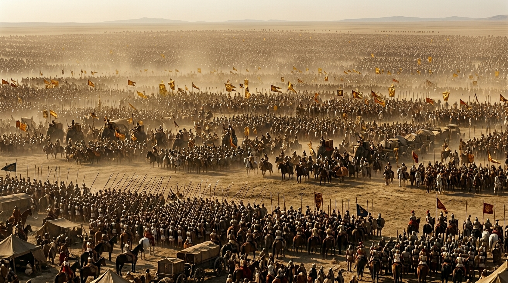
Las bajas macedónicas en el Gránico fueron sorprendentemente bajas: Arriano menciona unos veinticinco Hetairoi muertos, sesenta jinetes de otros contingentes y aproximadamente treinta infantes. Las bajas persas fueron mucho mayores, aunque las cifras antiguas son poco fiables. Lo que es cierto es que la derrota fue decisiva: la mayor parte de la caballería de élite persa en Asia Menor quedó destruida o dispersada.
Las consecuencias políticas fueron inmediatas y extraordinariamente favorables para Alejandro. Las ciudades griegas de Asia Menor —que llevaban generaciones bajo dominio persa— comenzaron a abrirse a él como liberador. Sardes, la capital de la satrapía de Lidia y una de las ciudades más ricas del mundo antiguo, se rindió sin combate. Las ciudades costeras de Jonia enviaron embajadas. El mito de la invencibilidad persa, que había sostenido el dominio de Darío sobre estas poblaciones griegas, se había roto en las orillas del Gránico.
Alejandro tomó una serie de decisiones políticas inteligentes tras la victoria. Reemplazó a los sátrapas persas por gobernadores macedonios o griegos leales, pero mantuvo en gran medida los sistemas administrativos persas existentes —las mismas tasas, las mismas rutas comerciales, las mismas estructuras locales. Se presentó no como conquistador sino como liberador, y en muchos casos la población lo recibió exactamente como tal.
La batalla del Gránico no fue la más grande ni la más difícil de la campaña de Alejandro, pero fue en muchos sentidos la más importante. Estableció varios precedentes que definirían el resto de la campaña. Primero, demostró que el sistema táctico macedónico —la combinación de falange e infantería pesada con caballería de élite en los flancos— era superior al modelo persa de caballería pesada más infantería variada, al menos en campo abierto. Segundo, estableció la reputación personal de Alejandro como comandante que combatía en primera línea, lo que generó una lealtad casi fanática entre sus tropas pero también lo ponía en riesgo constante. Tercero, abrió la campaña con el viento a favor, convenciendo a las ciudades griegas de Asia Menor de que el cambio de poder era real y permanente.
El general Memnón de Rodas, cuyo consejo había sido ignorado antes de la batalla, continuó resistiendo con la flota persa durante meses, amenazando las líneas de comunicación macedónicas. Pero murió de enfermedad en el 333 aC sin haber logrado revertir la situación estratégica, y con su muerte desapareció el último elemento capaz de plantear una resistencia eficaz en Asia Menor.
El Gránico también tuvo un efecto profundo sobre la psicología de Darío III, el Gran Rey persa. Hasta este momento, Darío había observado la invasión con cierta distancia, esperando que sus sátrapas resolvieran el problema sin necesidad de que él se involucrara personalmente. La derrota en el Gránico le dijo que eso no iba a ser posible: tendría que enfrentarse personalmente a este joven rey macedónico. La siguiente vez que los dos ejércitos se encontraran, el propio Darío estaría al frente de sus fuerzas. Ese encuentro ocurriría en Issos, en el otoño del 333 aC.
"Alejandro no necesitaba que Dios le dijera qué hacer en batalla. Su genio era instintivo, nacido en los campos de entrenamiento de Macedonia y perfeccionado en la sangre de sus enemigos."
— Peter Green, Alexander of Macedon, 1974
Continúa leyendo
Entre todos los grandes perdedores de la historia, pocos tienen una historia tan compleja y tan injustamente simplificada como Darío III Codomano, el último rey del Imperio Aqueménida. La tradición griega y romana —siempre escrita desde la perspectiva del vencedor— lo presenta como un cobarde que huyó de dos batallas abandonando a su ejército y a su familia. La historiografía moderna, con acceso a fuentes persas y a un análisis más ecuánime de las evidencias, ofrece un retrato mucho más matizado: el de un monarca competente que enfrentó circunstancias excepcionales y que fue derrotado no por su cobardía sino por el genio excepcional de su adversario.
Comprender a Darío III requiere comprender el mundo que heredó: un Imperio Aqueménida que llevaba dos siglos funcionando como el estado más sofisticado del mundo conocido, pero que en el momento en que Darío ascendió al trono estaba saliendo de una grave crisis de legitimidad marcada por conspiraciones palaciegas y asesinatos. El hombre que tendría que hacer frente a la mayor invasión que Persia había conocido era un rey que llevaba apenas tres años en el trono cuando Alejandro cruzó el Helesponto.
Artashata Codomano —tal era su nombre persa; Darío era su nombre real, adoptado al ascender al trono— no pertenecía a la línea directa de la sucesión aqueménida. Era miembro de una rama lateral de la familia real, descendiente de Artaxerjes II pero suficientemente alejado del trono como para que su ascenso al poder fuera una sorpresa para muchos. La cadena de eventos que lo llevó a ser Gran Rey comienza con el poderoso eunuco de la corte Bagoas, el verdadero poder detrás del trono durante los años anteriores.
Bagoas había envenenado a Artaxerjes III y a Arses, su hijo y sucesor, cuando estos amenazaron con limitar su poder. Necesitaba un nuevo rey que fuera más dócil, y eligió a Artashata Codomano precisamente porque parecía carecer de base de poder independiente y de conexiones en la corte. Se equivocó profundamente. Cuando Darío descubrió que Bagoas intentaba envenenarle también a él, actuó con rapidez y decisión: obligó al eunuco a beber el mismo veneno que había preparado para el rey. Fue el primer indicio de que el nuevo Gran Rey tenía más carácter del que Bagoas había anticipado.
Antes de ser rey, Darío había tenido una carrera militar respetable. Los textos antiguos mencionan que en una batalla contra los cadusianos —un pueblo de las costas del Caspio— había aceptado un combate singular con el campeón enemigo y lo había matado, un acto de valentía que le ganó el respeto de las tropas. Este episodio, pequeño en sí mismo, es importante porque contradice directamente la imagen del cobarde perpetuo que la tradición griega construyó sobre él.
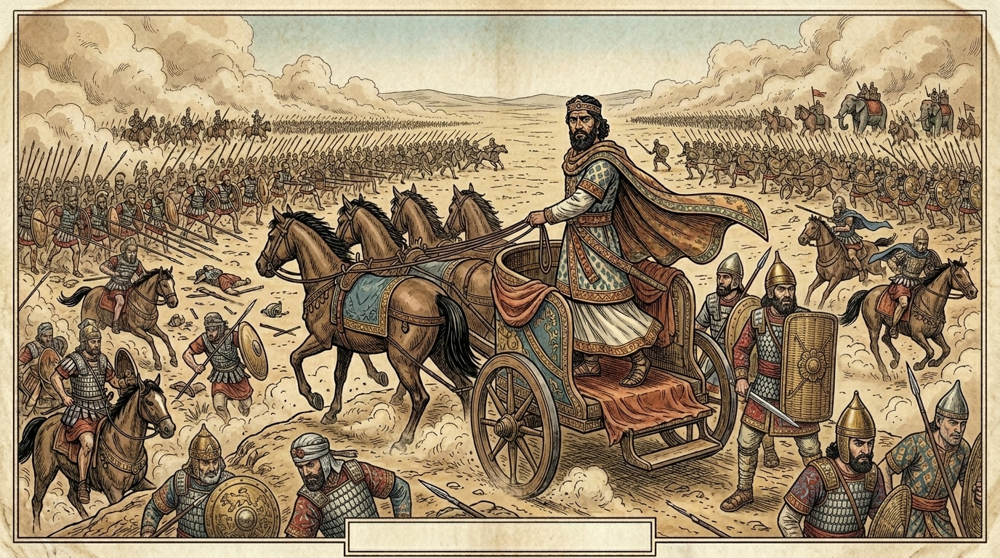
Para apreciar los desafíos que enfrentó Darío III, es necesario entender lo que era el Imperio Aqueménida en su apogeo. Fundado por Ciro el Grande en el 550 a.C., el Imperio se extendía desde el Mediterráneo oriental hasta el río Indo, desde el mar Negro hasta el Golfo Pérsico. Gobernaba sobre más de cuarenta millones de personas, administradas a través de veintidós satrapías o provincias, cada una con su propio gobernador, su propio ejército provincial y su propia burocracia.
El sistema era notablemente eficiente. La Red de Caminos Reales —con postas cada veinte kilómetros donde se cambiaban los caballos— permitía comunicaciones rápidas a lo largo de más de dos mil kilómetros. El Correo Real podía transmitir mensajes desde Susa hasta Sardes en siete días. Los persas habían desarrollado un sistema de pesos y medidas estandarizado, una lengua administrativa común —el arameo— y una política de tolerancia religiosa que hacía que las poblaciones conquistas raramente se rebelaran. Era, en muchos sentidos, el estado más sofisticado que el mundo había visto.
Pero este Imperio también tenía vulnerabilidades estructurales que Darío heredó sin poder resolverlas fácilmente. Los sátrapas —gobernadores provinciales— tenían poderes casi monárquicos dentro de sus territorios, y la historia aqueménida estaba llena de episodios de sátrapas rebeldes que desafiaban el poder central. El ejército imperial era poderoso pero heterogéneo: combatientes de docenas de naciones distintas con idiomas, armas y tradiciones militares incompatibles entre sí. Coordinar esta fuerza multiétnica en el campo de batalla era un desafío logístico y de comunicación enorme.
Cuando Alejandro cruzó el Helesponto en la primavera del 334 a.C., Darío se encontraba en el corazón del Imperio, en Persépolis o Susa. La primera respuesta fue delegar la defensa de Asia Menor a los sátrapas locales y al experimentado mercenario griego Memnón de Rodas. Esta delegación fue en parte práctica —reunir el ejército imperial completo tomaría meses— y en parte una subestimación del peligro real que representaba la invasión macedónica.
La derrota en el Gránico en mayo del 334 a.C. cambió el cálculo. Darío comenzó a reunir el ejército imperial completo, un proceso que llevó más de un año. Mientras tanto, Memnón de Rodas intentó una estrategia naval de harrasamiento que amenazó brevemente las líneas de comunicación macedónicas, pero su muerte inesperada por enfermedad en el 333 a.C. eliminó el único comandante persa capaz de una resistencia eficaz.
Darío tomó el mando personal del ejército imperial en el otoño del 333 a.C. y marchó hacia el sur para interceptar a Alejandro en la costa de Cilicia. La decisión de dónde combatir fue crucial: Darío eligió el estrecho paso costero de Issos, pensando que el terreno limitado neutralizaría la superioridad táctica macedónica. La lógica era correcta; la ejecución, desastrosa.
"Darío no era un cobarde. Era un rey que tuvo la desgracia de enfrentarse, en el momento más vulnerable de su reinado, al hombre que muchos historiadores consideran el mayor genio militar de todos los tiempos."
— Pierre Briant, From Cyrus to Alexander, 2002
La batalla de Issos en noviembre del 333 a.C. fue catastrófica para Persia de maneras que iban más allá de la derrota militar. Darío combatió en el centro de la línea, en su carro de guerra, y según las fuentes griegas mantuvo su posición mientras sus tropas resistían. Pero cuando la caballería de Alejandro rompió el flanco derecho macedónico y comenzó a avanzar directamente hacia el centro donde estaba el Gran Rey, Darío tomó la decisión de abandonar el carro de guerra y huir a caballo hacia el norte.
Esta huida —la segunda de Darío en la tradición griega, aunque Issos fue en realidad la primera en combate personal— tuvo consecuencias psicológicas devastadoras. Más concretamente, significó que su madre Sisigambis, su esposa Estatira y sus hijos quedaron en el campamento y fueron capturados por los macedonios. Alejandro los trató con el mayor de los respetos —estableciendo que serían tratadas como reinas y recibirían los mismos honores que antes—, lo que fue tanto un gesto humanitario genuino como una extraordinaria victoria de propaganda.
Los meses siguientes a Issos vieron a Darío intentar negociar una solución diplomática desde una posición de debilidad creciente. Ofreció a Alejandro la mitad occidental del Imperio, una inmensa suma de dinero como rescate por su familia, y la mano de su hija en matrimonio. Alejandro rechazó todas las propuestas. La guerra continuaría hasta que hubiera un solo rey sobre el mundo conocido.
Durante casi dos años después de Issos, Darío preparó meticulosamente la revancha. Reunió el ejército más grande que Persia había movilizado en generaciones, incluyendo contingentes de todas las satrapías del Imperio. Ordenó la construcción de nuevos carros con cuchillas, más eficientes que los modelos anteriores. Eligió cuidadosamente el campo de batalla: la llanura de Gaugamela, en la actual Irak, tan plana que mandó nivelar los pocos obstáculos existentes para dar máxima libertad de movimiento a su superioridad numérica y a sus carros.
En Gaugamela, el 1 de octubre del 331 a.C., Darío desplegó un ejército que las fuentes antiguas calculan entre 250.000 y un millón de hombres —las estimaciones modernas más conservadoras hablan de 100.000 a 200.000—, frente a los 47.000 de Alejandro. El plan era envolver los flancos macedónicos con su superioridad numérica y usar los carros para destrozar la falange. Si hubiera funcionado, Gaugamela habría sido el fin de Alejandro y de la campaña.
No funcionó. La maniobra oblicua de Alejandro creó un hueco en la línea persa, los carros fueron neutralizados por las tropas ligeras macedónicas, y cuando los Hetairoi cargaron a través del hueco directamente hacia donde estaba Darío, el Gran Rey huyó por segunda vez. Esta huida —la definitiva— selló el destino del Imperio.
Tras Gaugamela, Darío intentó reagrupar fuerzas en las satrapías orientales del Imperio —Bactriana, Partia, Sogdiana—. Pero la derrota había destruido su autoridad. El sátrapa de Bactriana, Beso, que afirmaba ser descendiente de la familia real aqueménida, lo arrestó cuando Alejandro se aproximaba y lo asesinó en el verano del 330 a.C. para poder presentarse a sí mismo como nuevo Gran Rey ante una posible resistencia.
Alejandro encontró el cadáver de Darío abandonado al borde de un camino. Lo cubrió con su propio manto y ordenó que fuera embalsamado y transportado a Persépolis para recibir sepultura real. Fue un acto de respeto hacia un enemigo caído, pero también una declaración política: Alejandro era ahora el legítimo sucesor de los reyes aqueménidas, y como tal tomaría venganza de los asesinos de su predecesor. La captura y ejecución de Beso en el 329 a.C. fue el último capítulo en la historia de Darío III.
La rehabilitación histórica de Darío III ha sido gradual pero significativa. Historiadores como Pierre Briant han señalado que su comportamiento en batalla fue más racional de lo que la tradición griega admite —preservar su vida para continuar la resistencia era una decisión táctica legítima—, y que las condiciones estructurales del Imperio Aqueménida y la excepcionalidad de Alejandro hacían casi imposible una defensa exitosa por parte de cualquier rey. Darío no perdió un Imperio fácil de defender: perdió un Imperio extraordinario ante el mayor general de la Antigüedad.
Continúa leyendo
En noviembre del año 333 antes de Cristo, en el estrecho paso costero entre las montañas del Tauro y el mar Mediterráneo, tuvo lugar el primer encuentro directo entre los dos hombres que se disputaban el control del mundo conocido: Alejandro III de Macedonia y Darío III Codomano, Gran Rey del Imperio Persa. La batalla de Issos no fue la mayor de la campaña asiática de Alejandro, ni la más decisiva en términos estratégicos —ese título le corresponde a Gaugamela—, pero fue quizás la más dramática y la que más marcó la imaginación de la Antigüedad. Hasta nosotros ha llegado un testimonio visual extraordinario: el Mosaico de Alejandro, hallado en Pompeya y conservado en el Museo Arqueológico Nacional de Nápoles, que retrata el momento exacto en que Darío, de pie sobre su carro de guerra, mira a los ojos de Alejandro mientras su ejército se derrumba a su alrededor.
Tras la victoria en el Gránico en la primavera del 334 a.C., Alejandro había pasado más de un año pacificando Asia Menor. La campaña no fue una marcha de triunfo ininterrumpida: el asedio de Halicarnaso resistió durante meses, y la flota persa —comandada por el brillante Memnón de Rodas— amenazó en varios momentos con aislar el ejército macedónico de sus bases en Macedonia y Grecia. Pero la muerte de Memnón por enfermedad en el verano del 333 a.C. eliminó el mayor peligro estratégico para Alejandro, y la campaña recuperó su impulso.
En el otoño del 333 a.C., Alejandro se dirigía hacia el sur siguiendo la costa, con el objetivo de neutralizar los puertos que la flota persa usaba como bases. Darío, que había pasado el año anterior reuniendo el ejército imperial en Babilonia y Siria, marchó hacia el norte para interceptarle. Los dos ejércitos se buscaban, pero los movimientos de ambos crearon una situación táctica peculiar: en un momento determinado, Darío cruzó las montañas del norte y quedó al norte de Alejandro, cortándole las líneas de comunicación con Macedonia. Alejandro tuvo que girar y marchar hacia el norte para enfrentarse a un enemigo que ahora estaba detrás de él.
El campo de batalla de Issos fue elegido —o más bien aceptado— por Darío por razones que inicialmente parecían inteligentes. El paso costero, con el mar a un lado y las montañas del Amano al otro, era lo suficientemente estrecho como para neutralizar la superioridad numérica persa. La falange macedónica no podría desplegarse en su anchura completa; los carros de guerra serían inútiles en terreno tan limitado; la caballería persa no tendría espacio para maniobrar. En teoría, Darío había elegido un campo que igualaba las condiciones.
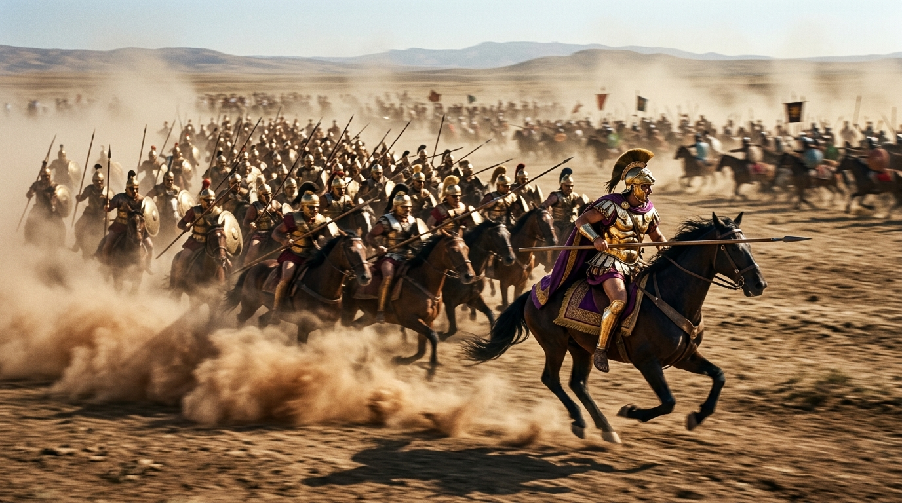
El ejército de Alejandro en Issos contaba con aproximadamente treinta y tres mil hombres, prácticamente el mismo número que en el Gránico aunque con algunas bajas reemplazadas por refuerzos llegados de Macedonia. La falange seguía siendo el núcleo de infantería, con los Hetairoi como fuerza de choque de caballería en el ala derecha y la caballería tesalia en el ala izquierda. Parmenión, el general veterano, comandaba el flanco izquierdo con instrucciones de mantenerse pegado al mar para impedir el envolvimiento.
El ejército persa era numéricamente mayor —las estimaciones varían entre cien mil y cuatrocientos mil hombres, con los historiadores modernos inclinándose hacia la cifra más baja— pero su composición presentaba los problemas habituales de los ejércitos persas: heterogeneidad de armamento, idioma y tradición militar. El elemento más valioso eran los mercenarios griegos —aproximadamente treinta mil hoplitas que luchaban al estilo macedónico— situados en el centro. La caballería persa de élite ocupaba el ala derecha, junto al mar.
Darío mismo tomó posición en el centro de la línea, sobre su carro de guerra, rodeado de su guardia personal. Era una posición de mando tradicional para un Gran Rey persa: visible a todos, protegida por los mejores soldados, pero también vulnerable si la línea se rompía a su alrededor. Y eso es exactamente lo que ocurrió.
La batalla comenzó con el avance de toda la línea macedónica. Alejandro, en el ala derecha con los Hetairoi, avanzó a velocidad mayor que el centro para crear una divergencia que abriría un hueco entre la caballería persa en el ala derecha y los mercenarios griegos en el centro. Era una maniobra que requería una coordinación precisa que solo un ejército con meses de entrenamiento conjunto podía ejecutar.
La caballería persa junto al mar atacó el ala izquierda de Alejandro —la comandada por Parmenión— con fuerza. Durante un momento crítico, el flanco izquierdo macedónico estuvo bajo una presión enorme, y la batalla podría haber girado si los jinetes tesalios hubieran cedido. No cedieron: combatieron con una tenacidad que Arriano describe con admiración, absorbiendo el impacto de la caballería persa sin romper la línea.
Mientras tanto, en el ala derecha, Alejandro encontró lo que buscaba: un hueco entre la caballería de la izquierda persa —que había adelantado para atacar— y los mercenarios griegos en el centro. Con los Hetairoi, cargó a través de ese hueco, giró hacia la izquierda y comenzó a avanzar directamente hacia donde estaba Darío. El Gran Rey podía ver al joven macedónico acercándose, los jinetes con sus lanzas relucientes avanzando a través del polvo y el caos del combate.
En ese momento —que el Mosaico de Alejandro inmortaliza con extraordinaria intensidad dramática— Darío tomó la decisión de abandonar su carro y huir a caballo. La razón exacta es debatida: ¿miedo personal? ¿Decisión táctica para preservar su vida y poder reagrupar? ¿La llegada de mensajes alarmantes sobre otros puntos del frente? Probablemente una combinación de los tres factores. Lo que es cierto es que su huida desencadenó el colapso del ejército persa.
"Cuando Darío huyó, el pánico se extendió instantáneamente por todo su ejército. Los hombres tiraban sus armas y corrían, y los macedonios los persiguieron hasta la caída de la noche."
— Arriano, Anábasis II.11
Las consecuencias inmediatas de la victoria en Issos fueron extraordinarias. El campamento persa, con sus inmensos tesoros acumulados para sostener una campaña prolongada, cayó intacto en manos macedónicas. Pero más importante que el oro fue la captura de la familia real persa: la madre de Darío, Sisigambis; su esposa, Estatira; y sus hijas, incluida la que Darío había ofrecido en matrimonio a Alejandro como parte de las negociaciones de paz rechazadas. También quedó capturado el hijo de Darío.
Alejandro manejó la captura de la familia real con una inteligencia política extraordinaria. Según Plutarco, cuando Sisigambis supo que las mujeres de la familia real habían sido capturadas, asumió que serían violadas o asesinadas —la suerte habitual de los cautivos de alto rango en el mundo antiguo. En cambio, Alejandro las visitó personalmente, les garantizó que serían tratadas con los mismos honores que como reinas les correspondían, y que Darío aún vivía. También prometió que nadie las molestaría. Cumplió su promesa durante los siete años que viviría Estatira bajo su custodia.
Esta decisión fue al mismo tiempo un acto de humanidad genuina —Alejandro parece haber tenido un código de honor real respecto a las mujeres cautivas— y un movimiento político brillante. Al tratar a la familia de Darío con dignidad, Alejandro se presentaba ante el mundo persa como un gobernante civilizado y legítimo, no como un conquistador bárbaro. Esta imagen sería crucial cuando llegara el momento de gobernar las tierras persas conquistadas.
La batalla de Issos dejó una huella extraordinaria en la memoria cultural del mundo grecorromano. El más famoso de sus testimonios artísticos es el ya mencionado Mosaico de Alejandro, una obra del siglo I a.C. hallada en la Casa del Fauno en Pompeya que mide 5,82 por 3,13 metros y está compuesta por entre uno y dos millones de teselas de piedra. Originalmente era la copia de una pintura griega del siglo IV a.C., posiblemente del pintor Filóxeno de Eretria.
El mosaico captura el momento de máxima intensidad dramática: en el lado izquierdo, Alejandro —sin casco, con la mirada fija en Darío— carga con su lanza sobre un jinete persa al que acaba de atravesar. En el centro, Darío, de pie en su carro de guerra, extiende el brazo hacia el caído en un gesto que los historiadores interpretan como compasión o como la impotencia de quien ve el derrumbe que no puede detener. Sus ojos y los de Alejandro se encuentran a través del espacio de la batalla, y en ese cruce de miradas está condensada toda la tragedia del choque entre dos mundos.
Issos también fue el punto de inflexión psicológico de la campaña. Antes de Issos, podía argüirse que Alejandro había ganado una batalla contra sátrapas locales pero no contra el Imperio en su conjunto. Después de Issos, después de que el propio Darío hubiera huido del campo de batalla, quedó claro para todos —griegos, persas, egipcios y babilonios— que algo fundamental había cambiado. El Imperio Aqueménida no era invencible.
Continúa leyendo
Tras la victoria en Issos en noviembre del 333 a.C., Alejandro Magno se encontró ante una encrucijada estratégica. Podría haber perseguido a Darío hacia el interior del Imperio Persa, siguiendo directamente al enemigo derrotado y buscando la batalla decisiva que terminara la guerra en meses. En cambio, eligió girar hacia el sur y avanzar por la costa de Fenicia, con el objetivo de neutralizar los puertos que seguían albergando la flota persa antes de internarse en Asia. Esta decisión lo llevaría al asedio más extraordinario de su carrera: el de la ciudad insular de Tiro, que duraría siete meses y requeriría una de las obras de ingeniería militar más audaces de la Antigüedad.
Tiro era en el siglo IV a.C. una de las ciudades más ricas y estratégicamente importantes del Mediterráneo oriental. Era la metrópoli fundadora de Cartago, el mayor centro comercial del Levante, y la sede de la industria de la púrpura tiria —el tinte más caro del mundo antiguo— que teñía los mantos de reyes y emperadores. Su riqueza provenía del comercio marítimo, y su supervivencia como ciudad independiente dependía de su posición: construida sobre una isla a aproximadamente ochocientos metros de la costa continental, con muros que en algunas partes alcanzaban los cuarenta y cinco metros de altura directamente sobre el mar. Era, literalmente, inexpugnable por medios convencionales.
Alejandro llegó ante Tiro a principios del 332 a.C. y envió emisarios solicitando una rendición pacífica. Los tirios respondieron con una postura ambigua: reconocían la autoridad de Alejandro sobre el continente pero se negaban a dejarle entrar en la ciudad, invocando una tradición de neutralidad sagrada que supuestamente les eximía de alinearse con ninguna potencia. Era una respuesta calculada para ganar tiempo —los tirios esperaban que Darío enviara la flota fenicia para romper cualquier bloqueo macedónico— y Alejandro la interpretó correctamente como una negativa.
La situación era estratégicamente insostenible para Alejandro. Si dejaba Tiro a su espalda —con su formidable flota y su posición como base naval persa— y marchaba hacia el interior, se exponía a que los persas aprovecharan la ciudad para cortar sus comunicaciones con el Mediterráneo y eventualmente amenazar sus líneas de suministro. Tiro tenía que caer. El problema era cómo.
Con una flota insuficiente para bloquear efectivamente una isla bien aprovisionada, Alejandro tomó la decisión que sus ingenieros militares consideraron inicialmente imposible: construir una calzada —un molo— desde tierra firme hasta la isla. La distancia era de aproximadamente ochocientos metros sobre agua que en algunos puntos alcanzaba los seis metros de profundidad. Nadie en la historia militar había intentado algo semejante.

La construcción del molo comenzó con el derribo de la antigua Tiro continental —que había sido abandonada hacía años por sus habitantes que se habían trasladado a la isla— para usar sus piedras como base. Se clavaron estacas en el fondo marino, se rellenaron de piedras y tierra, y poco a poco la calzada comenzó a avanzar hacia la isla. En sus etapas iniciales, cuando el agua era poco profunda, el trabajo fue relativamente rápido. A medida que se adentraba en aguas más profundas, el problema se complicó exponencialmente.
Los tirios respondieron con una estrategia de acoso continuo. Sus trirremes —que podían moverse libremente alrededor del molo— atacaban a los trabajadores desde los flancos. Los arqueros y catapultas de las murallas hostigaban a los hombres que trabajaban en la punta del molo. Para proteger a sus ingenieros, Alejandro ordenó la construcción de dos torres de asedio móviles en la punta del molo, desde las cuales sus ballesteros podían responder al fuego enemigo.
Los tirios respondieron con un navío de fuego: un antiguo transporte de caballos cargado de material inflamable, que impulsaron contra las torres de asedio con el viento favorable y prendieron fuego justo antes de chocar. Las torres ardieron, el fuego se extendió al molo, y el trabajo de semanas quedó destruido. Fue el punto más bajo del asedio para Alejandro.
Lejos de rendirse, Alejandro amplió la anchura del molo —para que fuera más difícil de atacar desde los flancos— y comenzó a buscar una solución al problema naval. Visitó personalmente a los reyes de Sidón, Arados y otras ciudades fenicias que ya habían reconocido su autoridad, y les solicitó sus barcos. Chipre, que también estaba pasándose al bando macedónico, envió más de cien trirremes. De repente, Alejandro tenía una flota.
Con la flota macedónica bloqueando el puerto norte y el puerto sur de la isla, y el molo llegando cada vez más cerca de las murallas, la situación de Tiro empeoró dramáticamente. Los tirios intentaron una sortida naval que fue rechazada con pérdidas. Sus murallas, invencibles desde el mar, comenzaban a quedar al alcance de las torres de asedio instaladas en la punta del molo y en los barcos equipados con arietes.
El asalto final llegó en agosto del 332 a.C., siete meses después del comienzo del asedio. Las catapultas y arietes montados en barcos abrieron una brecha en el muro sur de la isla; simultáneamente, Alejandro dirigió personalmente la carga de los Hetairoi y la infantería de élite a través de la brecha. El combate dentro de la ciudad fue brutal —los tirios pelearon cada calle, cada casa—, pero el resultado ya no era dudoso. La ciudad cayó.
"El ingenio de Alejandro transformó lo imposible en inevitable. La calzada que construyó unió permanentemente la isla al continente; hoy Tiro es una península, y esa transformación geográfica es el monumento más duradero a su determinación."
— Peter Green, Alexander of Macedon, 1991
La represalia de Alejandro sobre Tiro fue brutal y deliberada. Aproximadamente ocho mil tirios murieron en el asalto; otros treinta mil fueron vendidos como esclavos. Dos mil hombres en edad militar, acusados de haber matado a emisarios macedónicos durante el asedio, fueron crucificados en la playa. Fue uno de los actos más violentos de toda la campaña de Alejandro, y los historiadores lo interpretan como un mensaje calculado: las ciudades que resistían pagarían un precio más alto que las que se rendían.
Estratégicamente, la caída de Tiro fue un golpe decisivo para el dominio naval persa en el Mediterráneo oriental. Con Tiro capturada y las demás ciudades fenicias ya alineadas con Alejandro, la flota persa perdió sus bases de aprovisionamiento y mantenimiento. La amenaza naval persa —que hasta ese momento había sido el principal riesgo estratégico para las comunicaciones de Alejandro— se evaporó. El camino hacia Egipto quedaba abierto.
El molo que Alejandro construyó también tuvo consecuencias geológicas permanentes. Con el paso de los siglos, las corrientes marinas fueron depositando sedimentos a los lados de la calzada, ensanchándola gradualmente hasta que la antigua isla quedó conectada definitivamente al continente. La actual ciudad de Sur, en el Líbano, es una península en el lugar donde una vez hubo una isla, y esa transformación de la geografía local es el monumento más duradero —aunque involuntario— de la ingeniería militar de Alejandro Magno.
Continúa leyendo
El 1 de octubre del año 331 antes de Cristo, en una llanura polvororienta de Mesopotamia cerca del pueblo de Gaugamela —en la actual región de Mosul, Irak— se libró la batalla más analizada de la Antigüedad clásica. En un extremo de la llanura, Alejandro III de Macedonia comandaba un ejército de aproximadamente cuarenta y siete mil hombres: la fuerza de combate más disciplinada y tácticamente sofisticada del mundo conocido. En el otro extremo, Darío III Codomano, el Gran Rey del Imperio Persa, había reunido la mayor concentración de fuerzas militares que el Imperio Aqueménida había movilizado en generaciones: estimaciones antiguas que van de doscientos cincuenta mil a un millón de hombres, con las estimaciones modernas más conservadoras en torno a los cien mil.
El resultado de esas pocas horas de combate no fue solo la derrota del ejército persa: fue el fin del Imperio Aqueménida, dos siglos de historia, cuarenta millones de súbditos, y la mayor concentración de riqueza que el mundo había visto hasta entonces. Todo se decidió en una tarde de octubre, en una llanura que Darío mismo había mandado alisar para que no hubiera un solo obstáculo que pudiera desvigar los carros con cuchillas o romper la línea de su caballería.
Darío III tenía casi dos años para preparar la revancha después de la derrota en Issos. Usó ese tiempo con una meticulosidad que los historiadores modernos reconocen como extraordinaria. Reunió contingentes de todas las satrapías del Imperio —medas, bactrianos, sogdianos, indios, escitas, árabes, egipcios, griegos mercenarios— y los entrenó y equipó con la mejor tecnología disponible. Mandó construir nuevos carros con cuchillas, más ligeros y letales que los modelos anteriores, con las cuchillas montadas no solo en los ejes sino también en los laterales y en el travesaño delantero.
La elección del campo de batalla fue quizás la decisión más inteligente de Darío en toda la guerra. La llanura de Gaugamela era exactamente lo opuesto del desfiladero costero de Issos: plana, amplia, sin obstáculos naturales que pudieran limitar el desplegue de una fuerza inmensamente superior en número. En Issos, el terreno había trabajado contra Darío al neutralizar su ventaja numérica. En Gaugamela, el terreno trabajaría para él. El Gran Rey incluso mandó a sus ingenieros nivelar las porciones de la llanura que mostraban irregularidades, para garantizar que los carros pudieran moverse sin obstáculos.
Darío también mandó grupos de caballería a hostigar el avance macedónico, con la esperanza de cansar al ejército enemigo antes de la batalla decisiva. Alejandro, lejos de apresurar el avance, marchó con deliberada lentitud, asegurando el suministro de sus tropas y llegando al campo de batalla en perfectas condiciones de combate. La noche antes de la batalla, Parmenión recomendó un ataque nocturno para aprovechar la confusión; Alejandro rechazó la idea con la célebre respuesta de que no robaba victorias.

El despliegue de Darío en Gaugamela fue cuidadosamente planificado. En el centro situó a los mejores infantes del Imperio: los griegos mercenarios y los persas de la guardia real. Los flancos estaban cubiertos por la mejor caballería del Imperio —bactriana, escita, y parta a la izquierda; persa, aria y siria a la derecha—. Delante de la línea, en posiciones cuidadosamente marcadas en el terreno nivelado, esperaban los carros con cuchillas. Los elefantes indios —quince según Arriano— estaban situados frente al centro macedónico para aterrorizar a los caballos.
Alejandro estudió el despliegue persa durante horas antes de la batalla. Su propia disposición fue una obra de arte táctico. La falange macedónica ocupaba el centro, como siempre. A su derecha, Alejandro con los Hetairoi. A su izquierda, la caballería tesalia al mando de Parmenión. Pero la verdadera innovación de Gaugamela fue la creación de un segundo frente: unidades de infantería ligera y caballería dispuestas en ángulo hacia atrás desde ambos flancos de la línea principal, para enfrentarse a cualquier intento de envolvimiento por parte de la superior caballería persa. El ejército macedónico estaba diseñado para combatir rodeado.
La batalla comenzó con la falange macedónica avanzando en formación, pero con Alejandro y los Hetairoi moviéndose deliberadamente hacia la derecha —alejándose del terreno nivelado por los persas y aproximándose a la zona no preparada. Este movimiento oblicuo desconcertó a Darío: si Alejandro continuaba moviéndose hacia la derecha, los carros quedarían fuera de posición y no podrían cargar contra la falange en el terreno adecuado. Darío ordenó a su caballería izquierda que avanzara para impedir que Alejandro siguiera desplazándose.
Ese movimiento de la caballería persa izquierda —la primera en moverse, rompiendo la línea— creó lo que Alejandro buscaba: un hueco entre la caballería izquierda que había adelantado y los mercenarios griegos en el centro. En el momento exacto en que ese hueco era suficientemente grande, Alejandro giró con los Hetairoi y las unidades de infantería de élite —los hipaspistas— y cargó directamente a través de él, en cuña, apuntando al centro de la línea persa donde estaba Darío.
Los carros con cuchillas cargaron como estaba planeado, pero encontraron a las tropas ligeras macedónicas que simplemente se apartaban para dejarlos pasar —abriendo calles en la formación por las que los carros atravesaban sin hacer daño— antes de cerrarse de nuevo y continuar avanzando. Algunos carros llegaron hasta las filas de retaguardia, donde fueron detenidos por los palafreneros macedónicos. El arma que Darío había considerado decisiva quedó neutralizada casi sin bajas.
"Alejandro no buscaba al ejército persa para destruirlo. Buscaba a Darío. Sabía que si el Rey huía, el ejército se derrumbaría solo."
— John Keegan, The Mask of Command, 1987
La cuña de Alejandro penetró la línea persa y avanzó hacia el centro con una velocidad que los persas no pudieron contener. A medida que los Hetairoi se aproximaban al centro, donde Darío estaba de pie en su carro rodeado de su guardia personal, el Gran Rey vio que la situación era incontrolable. La cuña macedónica se acercaba, su guardia empezaba a doblegarse bajo la presión, y desde su posición elevada podía ver el panorama completo: su flanco izquierdo enredado en perseguir a la caballería aliada y al ala izquierda macedónica; su flanco derecho comenzando a presionar con éxito sobre Parmenión; y en el centro, la cuña de hierro de Alejandro avanzando imparable.
Darío huyó. Arriano describe el momento con la máxima sobriedad: "El primero en huir fue Darío mismo." Su carro de guerra fue abandonado, así como su arco, su escudo y su manto real. A caballo, escapó hacia el este, hacia Arbela y más tarde hacia Ecbatana. Su huida desencadenó el colapso del ejército persa en el centro: cuando los hombres vieron al Gran Rey huyendo, el pánico se extendió por la línea y la batalla se convirtió en una persecución.
En el flanco izquierdo macedónico, Parmenión pasó momentos difíciles: la caballería persa y parta había roto la línea y llegado hasta el campamento macedónico. En circunstancias normales, Alejandro habría girado para ayudarle. Pero sabía que si perseguía a Darío ahora, la guerra terminaría. Optó por continuar la persecución del Gran Rey, y la situación en el flanco izquierdo se resolvió cuando el colapso del centro persa llegó también a sus flancos.
Las bajas macedónicas en Gaugamela fueron sorprendentemente bajas —las fuentes antiguas hablan de quinientos muertos, aunque las estimaciones modernas son algo más altas. Las bajas persas fueron masivas, con la estimación antigua de cuarenta mil muertos que los historiadores modernos consideran exagerada pero indicativa de una derrota catastrófica.
Tras Gaugamela, el Imperio Persa se derrumbó como una estructura que había perdido sus pilares maestros. Babilonia, la mayor ciudad del mundo antiguo, se rindió sin combate cuando Alejandro se aproximó. Susa, con su fabuloso tesoro real, siguió el mismo ejemplo. Persépolis, la capital ceremonial del Imperio, fue tomada meses después. El tesoro aqueménida —estimado en ciento veinte mil talentos de plata, una riqueza que desequilibró las economías del mundo mediterráneo durante una generación— cayó en manos macedónicas.
Gaugamela es hoy estudiada en academias militares de todo el mundo como ejemplo de maneuver warfare —guerra de maniobra— en su forma más pura. La combinación de movimiento oblicuo para crear una brecha, penetración en cuña a través de esa brecha, y orientación hacia el punto de comando enemigo en lugar del ejército en su conjunto, sigue siendo un modelo de eficiencia táctica dos mil trescientos años después de que Alejandro la ejecutara en aquella llanura mesopotámica.
Continúa leyendo
En la primavera del año 330 antes de Cristo, los palacios de Persépolis —la capital ceremonial del Imperio Aqueménida, construida durante generaciones por los reyes Darío I, Jerjes y Artaxerjes I, decorada con los más extraordinarios relieves del mundo antiguo y colmada de tesoros que representaban el tributo de cuarenta millones de súbditos— ardieron durante toda una noche. El incendio destruyó irreversiblemente uno de los monumentos más extraordinarios de la Antigüedad. Y la pregunta sobre si fue un acto deliberado de venganza política o el resultado de una noche de excesos báquicos sigue siendo uno de los debates más apasionantes de la historia de la Antigüedad.
Para comprender el significado del incendio, es necesario entender lo que era Persépolis. Fundada por Darío I alrededor del 518 a.C. en la región de Parsa —la Persia propiamente dicha, en el actual Irán—, Persépolis no era la capital administrativa del Imperio —ese papel lo cumplía Susa— sino su capital ceremonial, el corazón simbólico del poder aqueménida. Era donde se celebraba el Año Nuevo persa, donde los representantes de las veintidós naciones del Imperio venían a rendir tributo al Gran Rey, donde los relieves en piedra celebraban la grandeza de la monarquía persa con una iconografía de poder cuidadosamente diseñada.
Los palacios de Persépolis eran una de las maravillas arquitectónicas del mundo antiguo. La Apadana —el gran salón de audiencias— tenía columnas de dieciocho metros de altura y podía albergar a miles de personas. Los relieves de su escalinata mostraban las delegaciones de todos los pueblos del Imperio llevando sus tributos, en un desfile de vestuarios, animales y objetos que es hoy el documento visual más completo sobre la diversidad del mundo aqueménida. El Salón de Cien Columnas, el Palacio de Jerjes, el Harem Real: cada edificio era una declaración de poder y sofisticación.

Alejandro llegó a Persépolis en enero del 330 a.C., varios meses después de Gaugamela. La ciudad se rindió sin combate: el comandante de la guarnición, Tiridates, le envió una carta prometiendo entregarle el tesoro real si llegaba antes de que los persas lo ocultaran. Alejandro hizo la última etapa del camino a marchas forzadas y tomó la ciudad antes de que pudiera ser vaciada.
El tesoro que encontró era de proporciones casi inimaginables. Las fuentes antiguas hablan de ciento veinte mil talentos de plata —una cifra que los economistas modernos calculan equivalente a varios años de producción económica del mundo mediterráneo entero. Para transportarlo, Alejandro necesitó veinte mil mulas y cinco mil camellos. Esta riqueza, inyectada en las economías mediterráneas durante las décadas siguientes, produjo una inflación significativa y transformó los patrones económicos del mundo helenístico.
Alejandro pasó varios meses en Persépolis, usando los palacios reales como cuartel general mientras consolidaba el control sobre las regiones del sur de Persia. Los meses en Persépolis fueron también un período de celebraciones y banquetes que algunos autores antiguos describen como extraordinariamente prolongados y desinhibidos.
Las fuentes antiguas sobre el incendio de Persépolis presentan dos versiones fundamentalmente incompatibles. Arriano y Plutarco —los más fiables de los biógrafos de Alejandro— describen el incendio como un acto deliberado, una venganza calculada por la destrucción persa de los templos atenienses durante las Guerras Médicas en el 480 a.C. En esta versión, Alejandro tomó la decisión conscientemente, como líder de la Liga de Corinto que supuestamente vengaba los agravios griegos. Esta interpretación hace del incendio un acto político coherente con la narrativa panhelénica de la campaña.
Diodoro Sículo y Quinto Curcio Rufo, en cambio, ofrecen una versión muy diferente: la de una borrachera que acabó en catástrofe. Según estos autores, durante un banquete especialmente exaltado, la cortesana ateniense Tais —compañera del general Ptolomeo— hizo una arenga inflamada proponiendo quemar los palacios como venganza panhelénica, y Alejandro, ebrio y exaltado por las aclamaciones del grupo, aceptó y lanzó la primera antorcha. En esta versión, el incendio fue un accidente de la embriaguez que Alejandro lamentó posteriormente cuando recobró la sobriedad.
Los historiadores modernos están divididos. Muchos, como Robin Lane Fox, consideran que el acto fue deliberado y que la historia de Tais y la borrachera es una elaboración posterior diseñada para exculpar a Alejandro de un acto que resultó políticamente inconveniente cuando él mismo comenzó a presentarse como sucesor legítimo de los reyes persas —difícilmente el comportamiento esperado del sucesor de Darío era quemar el palacio de sus predecesores. Otros, como Ernst Badian, argumentan que el factor de la embriaguez no puede descartarse, dado lo que las fuentes nos dicen sobre los hábitos de bebida de Alejandro en esta etapa de la campaña.
"Si el incendio fue deliberado, fue un error político. Si fue accidental, fue un error personal. En cualquier caso, Alejandro llegó a reconocerlo como un error."
— Robin Lane Fox, Alexander the Great, 1973
Independientemente de la causa, las consecuencias del incendio de Persépolis fueron profundas. Culturalmente, destruyó de manera irreversible uno de los monumentos más extraordinarios de la Antigüedad. Aunque los relieves de piedra sobrevivieron parcialmente —hoy se conservan en el sitio arqueológico bajo protección de la UNESCO— los techos de madera de cedro, los tapices, las puertas de madera dorada, los muebles y objetos de arte que llenaban los palacios desaparecieron para siempre.
Políticamente, el incendio marcó el final de la fase panhelénica de la campaña de Alejandro. Hasta Persépolis, Alejandro podía presentar la campaña como una expedición de venganza griega contra los persas invasores de un siglo antes. Después de Persépolis, comenzó a presentarse cada vez más como sucesor de los reyes aqueménidas, adoptando elementos del protocolo persa, incorporando nobles persas a su corte, y ordenando la ejecución de Beso —el asesino de Darío— no como un acto de justicia macedónica sino como un acto de justicia real persa. El incendio de Persépolis fue, en este sentido, el último acto del conquistador griego. Lo que vino después fue la construcción del sucesor.
Continúa leyendo
En los libros de historia sobre la campaña de Alejandro Magno, hay un episodio que a menudo queda eclipsado por las grandes victorias del macedónico: la batalla de las Puertas Persas, librada en el invierno del 330 a.C. en un desfiladero de montaña en las cercanías de Persépolis. Fue la única vez en toda la campaña en que Alejandro fue detenido por resistencia persa y tuvo que buscar una solución diferente al asalto frontal. Y el hombre que lo detuvo —el sátrapa Ariobarzanes de Persia— es uno de los personajes más fascinantes y menos conocidos de la Antigüedad.
Tras la toma de Susa en el otoño del 330 a.C., Alejandro dividió su ejército para avanzar hacia Persépolis por dos rutas. El grueso del ejército, comandado por Parmenión, tomaría la ruta principal del Royal Road, más larga pero accesible para los carros y el tren de suministros. Alejandro mismo lideraría una fuerza más pequeña y móvil por la ruta directa a través de las montañas Zagros, más corta pero que atravesaba el territorio conocido como las Puertas Persas —un desfiladero estrecho de gran importancia defensiva.
Ariobarzanes, el sátrapa de la región, había anticipado este movimiento. Con entre cuarenta mil y cincuenta mil hombres según las fuentes —una cifra probablemente exagerada, con estimaciones modernas más conservadoras en torno a diez mil a veinte mil— construyó una muralla defensiva a través del desfiladero y esperó. El terreno era prácticamente inexpugnable: paredes verticales de roca a ambos lados, el desfiladero tan estrecho que la falange no podía desplegarse en su formación habitual.
Cuando Alejandro atacó las Puertas Persas, fue derrotado. Es la única derrota táctica claramente documentada de toda su campaña. Los persas, bien atrincherados detrás de su muralla y en las alturas a ambos lados del desfiladero, lanzaron una lluvia de proyectiles sobre los macedónicos que avanzaban. La falange, incapaz de desplegarse en el terreno estrecho, sufrió bajas significativas. Alejandro ordenó la retirada —algo que raramente hizo en su carrera— y regresó al campamento para reconsiderar.
La situación era urgente: el invierno avanzaba, y Alejandro sabía que Parmenión llegaría a Persépolis por la ruta principal antes que él si no encontraba una solución. Los prisioneros persas del campamento fueron interrogados sobre posibles rutas alternativas. Un pastor local —las fuentes lo llaman Lycius en unas versiones, y simplemente "un prisionero" en otras— conocía una senda de montaña que permitía flanquear las posiciones persas llegando por detrás. Era estrecha, cubierta de nieve, y el camino se haría de noche para mantener el elemento sorpresa.
Alejandro tomó la fuerza de élite —los hipaspistas, los Hetairoi a pie, y los Agrianes— y realizó la marcha nocturna. Las fuentes describen un trayecto de enorme dificultad, con hombres que perdían el pie en el hielo y el frío de la montaña. Pero llegaron a la posición flanqueante antes del amanecer. La señal convenida —una trompeta en el campamento principal— llegó puntualmente, y Alejandro atacó desde las alturas al mismo tiempo que la fuerza que había dejado en el campamento atacó por el frente.
Ariobarzanes combatió hasta el final con una determinación que los propios historiadores griegos admiraron. Cuando la posición en las Puertas Persas se hizo insostenible, intentó escapar hacia Persépolis con los supervivientes para continuar la resistencia. Alejandro, anticipando este movimiento, había enviado una unidad de caballería por delante para cortar la ruta de retirada. Ariobarzanes no pudo llegar a Persépolis.
El lugar exacto de su muerte es desconocido. Arriano menciona que fue muerto combatiendo, con los pocos hombres que quedaban a su alrededor, en algún punto entre las Puertas Persas y Persépolis. No hubo rendición, no hubo negociación: simplemente siguió luchando hasta que no pudo más. En una campaña que fue extraordinariamente exitosa para Alejandro, Ariobarzanes representa la resistencia persa en su forma más heroica y más trágica: la de aquellos que eligieron morir en combate en lugar de someterse.
"Ariobarzanes fue el único comandante persa que derrotó a Alejandro en batalla campal. El hecho de que sea prácticamente desconocido mientras el nombre de Alejandro llena los libros de historia dice algo sobre cómo la historia recuerda a los vencedores."
— Tom Holland, Persian Fire, 2005
El episodio de las Puertas Persas tiene una importancia que va más allá del resultado inmediato. Demostró que el sistema defensivo de Alejandro no era invulnerable: el terreno podía neutralizar la ventaja táctica de la falange y los Hetairoi. También demostró la capacidad de Alejandro para adaptarse cuando los métodos convencionales fallaban —la marcha nocturna de flanqueo fue una solución operacional brillante a un problema táctico que había demostrado ser insoluble por métodos directos.
Para la historiografía persa —y los iraníes modernos reconocen a Ariobarzanes como un héroe nacional— las Puertas Persas son un símbolo de resistencia frente a la invasión extranjera. El sátrapa que durante semanas detuvo al ejército más formidable del mundo antiguo en un desfiladero de montaña ocupa en la memoria colectiva iraní un lugar comparable al que Leónidas y los trescientos espartanos ocupan en la griega: el de quien eligió morir luchando en lugar de vivir rindiéndose.
Continúa leyendo
En el verano del año 330 antes de Cristo, en algún punto del camino entre Ecbatana y Bactriana, el hombre que había sido el Gran Rey del mayor Imperio del mundo conocido fue asesinado por sus propios nobles. El cuerpo de Darío III Codomano fue encontrado al borde de un camino por los jinetes macedónicos de avanzada, abandonado en un carro, atravesado por múltiples lanzas. El asesino era Beso, el sátrapa de Bactriana, quien esperaba que la muerte de Darío le permitiera proclamarse nuevo Gran Rey y continuar la resistencia contra Alejandro desde las provincias orientales del Imperio.
Después de la derrota en Gaugamela y de la caída de Babilonia, Susa y Persépolis, Darío intentó reorganizar la resistencia desde las provincias orientales del Imperio, lejos de la llanura mesopotámica donde la ventaja táctica macedónica era más evidente. Las montañas de Media, Partia, Bactriana y Sogdiana ofrecían un terreno muy diferente: más accidentado, más difícil para la falange, con poblaciones guerreras que no habían sido conquistadas por Alejandro. La estrategia tenía sentido en teoría.
Darío llegó a Ecbatana —la capital de Media, actual Hamadán en Irán— con los restos del ejército que habían sobrevivido a Gaugamela. Aquí intentó reorganizar sus fuerzas y reclutar nuevos soldados. Pero la derrota había erosionado su autoridad de manera irreparable. Los grandes nobles y sátrapas que rodeaban al Gran Rey comenzaron a calcular sus opciones personales, y la figura de Beso —el sátrapa de Bactriana, con control sobre una de las provincias militarmente más poderosas del Imperio— comenzó a ganar influencia a expensas de Darío.
Alejandro, informado de la posición de Darío, realizó una de las marchas más rápidas de toda la campaña. Avanzó desde Persépolis hacia Ecbatana a tal velocidad que varios autores antiguos expresan su asombro: en algunos tramos, el ejército macedónico cubrió distancias que normalmente requerían semanas en cuestión de días. Cuando llegó a Ecbatana, Darío ya había partido hacia el este. La persecución continuó.
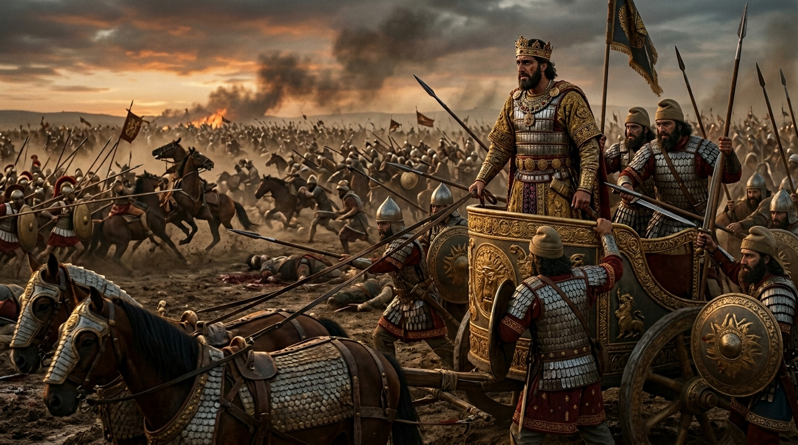
Los detalles de la conspiración que llevó a la muerte de Darío son conocidos principalmente a través de Arriano y Quinto Curcio Rufo, y ambos ofrecen versiones ligeramente diferentes. Lo que parece claro es que Beso y un grupo de nobles —incluyendo a Narbazanes, el commandante de la caballería, y Barsaentes, el sátrapa de Aracosia— llegaron a la conclusión de que Darío era un lastre para la resistencia. El razonamiento, por perverso que fuera, tenía cierta lógica militar: si Alejandro capturaba a Darío, obtendría la legitimidad simbólica de haber capturado al Gran Rey, lo que aceleraría la rendición de las provincias restantes. Si Darío moría a manos persas, Beso podría proclamarse nuevo Rey de Reyes y continuar la guerra como líder de una resistencia legítima.
Beso propuso a Darío que le entregara el mando del ejército para conducir la resistencia más eficazmente. Darío rechazó la propuesta. En ese momento, los conspiradores lo arrestaron. Según las fuentes, Darío apeló a los soldados rasos persas que lo rodeaban para que lo liberaran, pero estos, intimidados por Beso y los otros nobles, no actuaron. Darío fue encadenado y cargado en un carro cubierto, para ser usado como moneda de cambio si la situación lo requería, o ejecutado si los macedónicos se aproximaban demasiado.
La fuerza de caballería macedónica enviada por Alejandro para interceptar la columna persa casi alcanzó el objetivo. Según Quinto Curcio Rufo, los jinetes macedónicos llegaron a ver el polvo levantado por la columna persa. Beso, al darse cuenta de que no podía escapar con el prisionero, tomó la decisión de matarlo. Varios nobles clavaron sus lanzas en el carro donde estaba encadenado Darío y continuaron la huida. Cuando los macedónicos llegaron, encontraron el carro abandonado con el Gran Rey agonizante dentro.
Existe una tradición —narrada por Plutarco y Quinto Curcio— de que Darío no murió inmediatamente sino que sobrevivió el tiempo suficiente para ser encontrado por un soldado macedónico llamado Polystrato, que le dio agua. Darío, según esta versión, alcanzó a decir algunas palabras antes de morir: expresó gratitud hacia Alejandro por el trato que había dado a su familia, y pidió que se trasladara este mensaje. Cuánto de esto es histórico y cuánto es elaboración literaria es imposible de determinar con certeza.
Lo que sí es cierto es que Alejandro llegó al lugar donde estaba el cadáver de Darío, lo cubrió con su propio manto de púrpura real, y ordenó que fuera embalsamado y transportado a Persépolis para recibir sepultura con los honores correspondientes a un Gran Rey persa. El gesto fue deliberadamente simbólico: Alejandro se presentaba como el sucesor legítimo de Darío, no como su conquistador. Al dar al último rey aqueménida los honores fúnebres correspondientes, establecía su continuidad con la tradición real persa.
"Alejandro lloró sobre el cadáver de Darío, diciendo que la fortuna le había tratado cruelmente: primero haciéndolo rey, luego arrebatándole todo. Pero que al menos sus asesinos recibirían el castigo que merecían."
— Quinto Curcio Rufo, Historia de Alejandro, V.13
La campaña de Alejandro contra Beso fue tan rápida como la persecución de Darío. En el 329 a.C., tras cruzar el Hindu Kush con el ejército en pleno invierno —otra de las hazañas logísticas extraordinarias de la campaña—, Alejandro llegó a Bactriana. Beso, que se había proclamado "Artaxerjes V" y portaba la tiara real persa en señal de su pretensión al trono, encontró que el apoyo que esperaba de los nobles bactrianos se evaporaba rápidamente ante el avance macedónico.
Beso fue entregado a Alejandro por sus propios aliados y sometido a un proceso judicial no como prisionero de guerra macedónico sino como rebelde persa: acusado del asesinato de su rey legítimo Darío III. El castigo fue el mismo que el derecho persa prescribía para el regicidio: la mutilación de la nariz y las orejas, la flagelación pública, y finalmente la ejecución. Alejandro cumplió con la ley persa, no con la macedónica. El mensaje era transparente: él era ahora el guardián de la legalidad del Imperio Aqueménida.
Con la muerte de Beso, desapareció el último pretendiente al trono aqueménida de la línea directa. El Imperio que había tardado dos siglos en construirse, que había gobernado sobre cuarenta millones de personas en el corazón del mundo conocido, y que había representado la forma más sofisticada de organización política que la humanidad había conocido hasta entonces, había llegado a su fin. La era helenística comenzaba.
Continúa leyendo
De entre todos los cuerpos militares de élite de la Antigüedad, ninguno tiene un nombre más evocador ni más perfectamente calculado para inspirar terror y fascinación que el de los Inmortales persas. Diez mil hombres cuya cifra nunca cambiaba: si uno moría o caía enfermo, era reemplazado inmediatamente, de manera que el cuerpo siempre mantuviera su número exacto. De ahí el nombre —los Athánatoi, los que no mueren— que los griegos les dieron y que ha pervivido dos mil quinientos años en la memoria histórica.
Los Inmortales como cuerpo élite de la guardia real persa fueron creados o formalizados durante el reinado de Ciro el Grande o poco después, aunque las fuentes no están de acuerdo en los detalles exactos. La primera mención clara y detallada aparece en Heródoto, quien los describe durante las Guerras Médicas de principios del siglo V a.C., especialmente en el contexto de la invasión de Grecia por Jerjes en el 480 a.C.
Heródoto describe a los Inmortales como el núcleo de la infantería persa de élite, específicamente los diez mil mejores soldados del Imperio, equipados de manera más lujosa que el resto del ejército: lanzas con adornos de plata y oro, túnicas bordadas bajo la armadura, brazaletes de oro. Viajaban acompañados de sus propios carros con provisiones, concubinas y sirvientes. En el contexto de un ejército en campaña, los Inmortales eran no solo los mejores combatientes sino también los más privilegiados.
La fuente del nombre es Heródoto, aunque algunos historiadores modernos cuestionan si "Inmortales" era realmente la traducción del nombre persa original o una interpretación griega. El nombre persa podría haber sido Anûšiya —"compañeros"— y la confusión con "inmortales" podría derivar de la similitud fonética entre este término y el iraní antiguo para "inmortal". En cualquier caso, el nombre griego perduró y es el que la historiografía universal adoptó.
Los diez mil Inmortales se dividían en dos grupos distintos con funciones parcialmente diferentes. Los primeros mil —a veces llamados la "guardia interior" o los "portadores de manzana" por los adornos en forma de granada de sus lanzas— eran la guardia personal del Gran Rey. Estos mil hombres tenían acceso privilegiado al rey, dormían cerca de su tienda en campaña, y eran el último anillo de protección del monarca. Sus lanzas tenían el adorno en forma de granada hecho de oro macizo.
Los nueve mil restantes formaban la guardia exterior, el grueso de la fuerza de élite. Sus adornos de lanza eran de plata en lugar de oro —la distinción entre los dos grupos era perfectamente visible a cualquier distancia. En campaña, estos nueve mil combinaban las funciones de guardia real con las de reserva táctica de élite que podía ser desplegada en el momento decisivo de una batalla.
El equipamiento de los Inmortales era más variado de lo que a veces se retrata. Los frisos de Persépolis —el testimonio iconográfico más detallado que tenemos— los muestran con lanzas largas, carcaj de flechas, y arcos. La combinación de lanza y arco era típica de la infantería persa de élite, que podía combatir tanto en formación cerrada como en combate a distancia. Llevaban escudos de sauce tejido cubiertos de cuero, más ligeros que los escudos griegos de bronce pero suficientemente protectores.
La actuación más documentada de los Inmortales es la de las Guerras Médicas, específicamente en Termópilas en el 480 a.C. Cuando Jerjes atacó la posición de los espartanos de Leónidas con su ejército masivo, los Inmortales fueron la punta de lanza del asalto. Y sufrieron bajas significativas contra los espartanos en la defensa del paso estrecho —una realidad que Heródoto registra con cierta satisfacción patriótica griega.
Fue precisamente en Termópilas donde quedó clara tanto la fortaleza como la limitación táctica de los Inmortales. En el combate en espacio abierto o en formación de masas numéricamente abrumadoras, eran extraordinariamente efectivos. Pero en el combate en un espacio reducido contra infantería griega pesada con el escudo hoplita grande y la lanza corta, las ventajas persas se neutralizaban. Los espartanos, cuyo entrenamiento desde la infancia los convertía en la mejor infantería pesada del mundo griego, igualaban o superaban a los Inmortales en el tipo de combate que tenía lugar en Termópilas.
El desenlace de Termópilas —la traición de Efialtes que reveló el camino de montaña que permitió a los persas flanquear la posición griega— no fue una victoria de los Inmortales en combate directo sino un triunfo de la inteligencia y la logística persas. Lo cual, paradójicamente, habla bien de los comandantes persas que comprendieron que el enfrentamiento directo tenía un coste demasiado alto.
Cuando Alejandro invadió el Imperio Persa, los Inmortales seguían siendo el corazón de la guardia real. Estuvieron presentes en Issos y en Gaugamela, protegiendo la posición de Darío en ambas batallas. En Gaugamela, fueron los últimos en ceder cuando la cuña de Alejandro se aproximó al centro: cuando el Gran Rey huyó, su guardia personal —incluyendo probablemente a los mil Inmortales de la guardia interior— sufrió las peores bajas de la batalla intentando cubrir la retirada.
Tras la conquista macedónica, el cuerpo de los Inmortales desapareció como entidad organizada. Alejandro sustituyó la guardia real persa por la guardia macedónica, aunque incorporó a nobles persas y bactrianos a unidades mixtas. Algunos historiadores señalan que la guardia real macedonia —los agema de los Hetairoi y los hipaspistas reales— cumplía funciones análogas a las de los Inmortales en el sistema persa, aunque organizados de manera diferente y con una composición distinta.
"Los Inmortales no eran simplemente soldados de élite. Eran el símbolo viviente del poder del Gran Rey: diez mil hombres que no podían ser reducidos por la muerte porque el Imperio siempre repondría cualquier baja. Eran la inmortalidad del Imperio materializada en carne y bronce."
— Matt Waters, Ancient Persia, 2014
Los Inmortales persas tienen una presencia extraordinaria en la cultura popular moderna, aunque frecuentemente distorsionada. La película de Frank Miller "300" (2007) los retrata como guerreros con máscaras y armaduras negras, completamente diferentes de lo que la evidencia histórica y arqueológica sugiere. En realidad, los frisos de Persépolis muestran hombres con túnicas persas elaboradas, lanzas con adornos en forma de granada, y la dignidad de una guardia de honor tanto como de una fuerza de combate.
La fascinación persistente con los Inmortales refleja algo más profundo que el mero interés histórico: es la atracción por la idea de una fuerza militar que trasciende la mortalidad individual, donde el conjunto es más que la suma de sus partes. En ese sentido, los Inmortales son el antecedente conceptual de muchas élites militares modernas, desde la Guardia Imperial de Napoleón hasta las fuerzas de operaciones especiales contemporáneas. El principio de que la excelencia militar puede organizarse y replicarse, creando una fuerza cuya potencia no depende de ningún individuo sino del sistema que la sustenta, es un legado que va mucho más allá de los frisos de Persépolis.
Continúa leyendo
Cuando Alejandro Magno conquistó el Imperio Persa, no simplemente destruyó una estructura política y la reemplazó con otra. Heredó una de las administraciones más sofisticadas que el mundo había conocido hasta entonces, y fue suficientemente inteligente para reconocer que muchos de sus elementos eran superiores a los sistemas que él mismo conocía. El legado aqueménida —el sistema de satrapías, las calzadas reales, la política de tolerancia religiosa, la administración en arameo— sobrevivió a la conquista macedónica y se convirtió en el esqueleto administrativo sobre el que Alejandro construyó su propio Imperio, y sobre el que los diádocos construirían los reinos helenísticos que dominarían el mundo durante los tres siglos siguientes.
La invención más duradera de los Aqueménidas fue el sistema de satrapías: la división del Imperio en veintidós provincias administrativas, cada una gobernada por un sátrapa —literalmente "guardián del reino" en antiguo iranio— designado por el Gran Rey. Las satrapías tenían una extensión muy variable —algunas correspondían a territorios más pequeños que una región moderna, otras abarcaban lo que hoy serían varios países— pero todas compartían la misma estructura básica: el sátrapa como autoridad civil máxima, un comandante militar independiente del sátrapa para las fuerzas militares locales, y un tesorero igualmente independiente que controlaba los ingresos de la provincia.
Esta división de poderes —civil, militar y fiscal— dentro de cada satrapía era una invención administrativa de enorme inteligencia. Prevenía que un sátrapa ambicioso pudiera acumular tanto poder que le fuera posible rebelarse con éxito: para rebelarse necesitaba el apoyo simultáneo del comandante militar y el control del tesoro provincial, y el Gran Rey mantenía líneas de comunicación independientes con los tres. No siempre funcionó —los sátrapas rebeldes son un tema recurrente en la historia aqueménida—, pero el sistema era notablemente eficiente para gobernar sobre un territorio de la magnitud del Imperio Persa.
Alejandro adoptó el sistema prácticamente sin cambios, al principio designando sátrapas macedonios o griegos de confianza, pero progresivamente incorporando nobles persas en posiciones de autoridad cuando encontraba hombres competentes y leales. Esta política de incorporación de élites persas a la estructura de gobierno fue una de las decisiones más controversiales de Alejandro entre sus propios oficiales macedonios, y una de las más inteligentes desde el punto de vista de la gobernabilidad a largo plazo.

Una de las contribuciones más prácticas del Imperio Aqueménida a la civilización fue la construcción y mantenimiento de una red de calzadas que conectaba las principales ciudades del Imperio. La más famosa era la Calzada Real, que unía Sardes en la costa occidental con Susa en el corazón del Imperio, una distancia de aproximadamente 2.700 kilómetros. A lo largo de esta calzada se situaban postas de caballos cada veinte kilómetros aproximadamente, donde los jinetes del Correo Real podían cambiar sus monturas agotadas por animales frescos.
El Correo Real persa —los angares— podía transmitir mensajes desde Susa hasta Sardes en aproximadamente siete días, una velocidad que no sería igualada en el mundo occidental hasta la llegada del telégrafo en el siglo XIX. Heródoto quedó tan impresionado por este sistema que escribió la frase que se ha convertido en el lema del Servicio Postal de los Estados Unidos: "Ni la nieve, ni la lluvia, ni el calor, ni la oscuridad de la noche detienen a estos mensajeros."
La red de calzadas también tenía funciones militares y económicas que iban mucho más allá de la comunicación administrativa. Permitía el movimiento rápido de tropas de una extremidad del Imperio a otra —en las grandes crisis, los sátrapas podían recibir refuerzos centrales en semanas en lugar de meses. Facilitaba el comercio a larga distancia al proporcionar rutas seguras y conocidas. Y permitía la supervisión efectiva del territorio: los inspectores reales —los "ojos y oídos del rey"— podían viajar por todo el Imperio en plazos razonables y regresar con información actualizada sobre lo que sucedía en las provincias.
Quizás el aspecto más sorprendente del gobierno aqueménida, desde la perspectiva de los imperios de la Antigüedad, fue su política sistemática de tolerancia religiosa. Ciro el Grande estableció el precedente cuando, tras conquistar Babilonia en el 539 a.C., no solo no suprimió el culto a Marduk —el dios principal babilónico— sino que se presentó como el rey elegido por Marduk para gobernar, y ordenó la restauración de los templos y el retorno de los objetos sagrados que Nabónido había trasladado. El Cilindro de Ciro, conservado en el Museo Británico, es el documento más antiguo conocido que afirma el principio de tolerancia religiosa como política de estado.
Esta política continuó con sus sucesores. Los judíos deportados a Babilonia por Nabucodonosor fueron autorizados a regresar a Judá y reconstruir el Templo de Jerusalén —el llamado "decreto de Ciro" mencionado en el Libro de Esdras. En Egipto, los faraones aqueménidas se presentaban como faraones, con títulos y rituales egipcios, respetando el culto a los dioses locales. En las ciudades griegas de Asia Menor, los cultos locales continuaban sin interferencia siempre que las poblaciones pagaran sus impuestos y suministraran tropas cuando se les pedía.
Alejandro heredó y amplió esta política. Su famosa visita al oráculo de Amón en el oasis de Siwa en Egipto —donde fue proclamado hijo de Zeus-Amón— fue tanto un gesto religioso genuino como un acto político calculado: demostraba a los egipcios que el nuevo gobernante respetaba sus tradiciones religiosas. En Babilonia, ordenó la restauración del templo de Marduk. En Persia, incorporó rituales y símbolos de la monarquía aqueménida a su propio protocolo real.
Los Aqueménidas resolvieron el problema de gobernar un Imperio multilingüe —donde se hablaban docenas de idiomas mutuamente incomprensibles— adoptando el arameo como lengua administrativa oficial. El arameo era la lingua franca del comercio en el Oriente Medio desde hacía siglos, hablada por mercaderes, funcionarios y personas educadas desde Egipto hasta el Indo. Al adoptarlo como lengua de administración, los Aqueménidas podían escribir órdenes en una sola lengua y tener la razonable expectativa de que serían comprendidas en cualquier punto del Imperio.
Este sistema sobrevivió a la conquista macedónica de una manera interesante: el griego desplazó gradualmente al arameo como lengua de la élite en las regiones occidentales del Imperio, pero el arameo continuó siendo usado en las regiones orientales —Mesopotamia, Siria, Judea— durante siglos después de la conquista. De hecho, el arameo sobreviviría al Imperio que lo adoptó como lengua oficial por más de un milenio, convirtiéndose en la lengua del Talmud babilónico, del Nuevo Testamento en sus partes más antiguas, y de comunidades que todavía hoy lo hablan en partes de Siria e Iraq.
"Alejandro no destruyó el Imperio Persa: lo transformó. Y al transformarlo, preservó sus contribuciones más duraderas a la civilización: la administración racional del territorio, la tolerancia de la diversidad, la infraestructura del comercio."
— Pierre Briant, From Cyrus to Alexander, 2002
El legado administrativo aqueménida sobrevivió a Alejandro y se transmitió a los reinos que sus generales —los diádocos— establecieron sobre los territorios conquistados. Los Seléucidas en Siria y Mesopotamia, los Ptolomeos en Egipto, los reinos bactrianos y partos: todos heredaron en mayor o menor medida las estructuras administrativas que los Aqueménidas habían desarrollado durante dos siglos. El sistema de satrapías se transformó en sistemas análogos bajo nombres diferentes. Las calzadas continuaron siendo mantenidas porque eran económicamente necesarias. La tolerancia religiosa continuó siendo política de estado porque cualquier alterativa habría hecho imposible gobernar las poblaciones diversísimas de los territorios helenísticos.
Incluso el Imperio Romano, que heredó el mundo helenístico, se benefició indirectamente del modelo administrativo aqueménida. Las provincias romanas con sus gobernadores, los cursus publicus que comunicaba el Imperio, la política de respeto a las religiones locales que caracterizó al Imperio Romano durante la mayor parte de su historia: todo esto tiene antecedentes en el modelo que Ciro el Grande y Darío I establecieron en el siglo VI a.C. El Imperio Persa dejó de existir como entidad política en el 330 a.C. Su legado intelectual y administrativo sobrevivió por siglos.
Volver al inicio
En el año 753 antes de Cristo —según la tradición romana establecida por el anticuario Marco Terencio Varrón en el siglo I a.C.— Rómulo mató a su hermano gemelo Remo y trazó con un arado el surco sagrado que definiría los límites de la nueva ciudad. Este acto fundacional violento, impregnado de simbolismo ritual y de la sangre del primer homicidio entre los ciudadanos de Roma, estableció desde el primer momento la tensión entre el orden y la violencia que definiría la historia de la ciudad durante los mil años siguientes. Pero ¿qué hay de histórico en este relato? ¿Qué nos dice la arqueología sobre los orígenes reales de la ciudad que conquistó el mundo conocido?
La respuesta, como suele suceder cuando el mito y la historia se encuentran, es fascinante y más compleja de lo que ninguna de las dos narrativas —la puramente mítica y la puramente escéptica— podría sugerir. Roma existió antes de ser "fundada". El Palatino, el Esquilino y el Capitolio —las colinas sobre las que la tradición sitúa los primeros asentamientos— muestran señales de ocupación humana continua desde al menos el siglo X a.C., un siglo y medio antes de la fecha tradicional de fundación. Pero algo ocurrió en el siglo VIII a.C. que transformó una serie de aldeas de pastores en la embrión de una ciudad. Y ese algo es el núcleo histórico del mito de la fundación.
El mito de fundación romano es extraordinariamente elaborado y está lleno de capas que los propios romanos fueron añadiendo a lo largo de siglos. En su versión más completa, tal como la transmite Tito Livio en el prefacio de su monumental historia de Roma, la ciudad fue fundada por Rómulo y Remo, hijos de Marte —el dios de la guerra— y de Rea Silvia, una vestal de la familia real de Alba Longa, la ciudad latina que era la madre de Roma en la tradición mítica.
Rea Silvia fue obligada a convertirse en vestal —sacerdotisa que debía mantener la castidad— por su tío Amulio, que había usurpado el trono de Alba Longa a su hermano Numitor. Al quedar embarazada de Marte, Amulio la encarceló y ordenó que los gemelos fueran arrojados al Tíber. Pero el río estaba crecido y los bebés no llegaron al agua principal: quedaron en la orilla, donde fueron amamantados por una loba —la famosa Lupa Capitolina, imagen que se convertiría en el símbolo más reconocible de Roma— y luego encontrados y criados por el pastor Fáustulo y su esposa Acca Larentia.
Cuando los gemelos crecieron, derrocaron a Amulio, restauraron a Numitor en el trono de Alba Longa, y decidieron fundar su propia ciudad en el lugar donde habían sido salvados. El conflicto sobre cuál de las colinas sería la sede de la nueva ciudad —el Palatino de Rómulo o el Aventino de Remo— se resolvió con un presagio de los dioses: Rómulo vio doce buitres, Remo solo seis. Romo trazó el surco fundacional, Remo lo saltó burlándose, y Rómulo lo mató. "Así perecerá cualquiera que salte mis murallas", dijo Rómulo, y la primera ley de Roma fue escrita en la sangre de su cofundador.
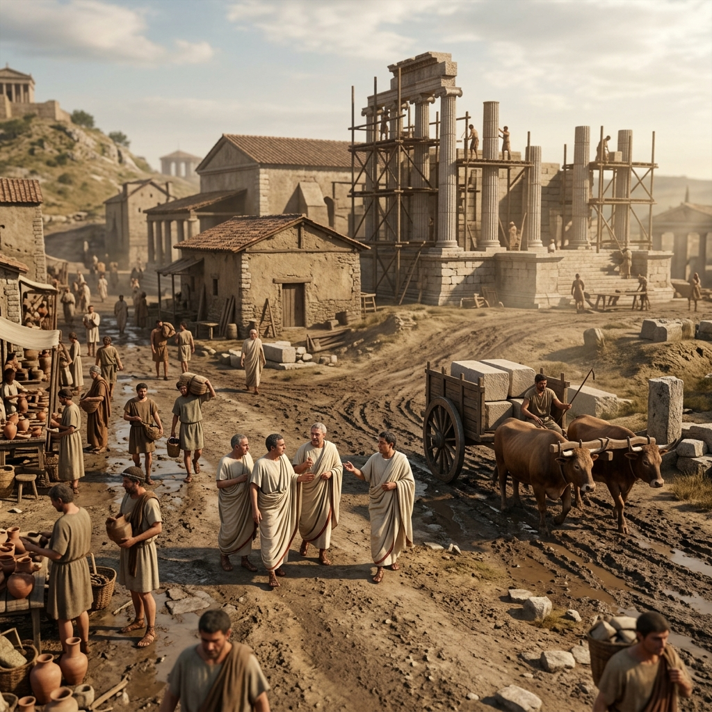
Las excavaciones arqueológicas sistemáticas en Roma, iniciadas a finales del siglo XIX y continuadas con creciente sofisticación tecnológica hasta el presente, han revelado una imagen que es al mismo tiempo una confirmación parcial y una complicación del relato mítico. El Palatino muestra efectivamente señales de un asentamiento que experimenta una transformación significativa en el siglo VIII a.C.: las chozas de adobe y paja que han sido identificadas en la cima de la colina son consistentes con la fecha de la fundación tradicional.
El descubrimiento más relevante fue el de una cabaña oval en el Palatino, conocida como la "Choza de Rómulo" —Casa Romuli en latín— que los romanos históricos identificaban como el lugar donde había vivido el fundador y que mantenían cuidadosamente restaurada como santuario. La arqueología moderna ha encontrado en ese lugar evidencias de estructuras del siglo VIII a.C., aunque si esta estructura específica es la misma que veneraban los romanos históricos es imposible establecerlo con certeza.
Más revelador es el análisis de los patrones de asentamiento del Lacio en el siglo VIII a.C. Las aldeas dispersas de las colinas romanas muestran en este período signos de una integración creciente: las necrópolis que habían estado separadas comienzan a converger, los objetos de intercambio sugieren un comercio más intenso entre comunidades vecinas, y hay evidencias de un espacio público común —el Foro, en el valle entre las colinas— que va siendo gradualmente organizado y monumentalizado. Este proceso de sinecismo —de agrupación de comunidades separadas en un único organismo urbano— es exactamente lo que la tradición mítica llama "fundación de Roma".
Uno de los aspectos más fascinantes de la Roma arcaica es el peso de las influencias externas en su formación. Los etruscos —la civilización más avanzada de la Italia preromana, ubicada en la actual Toscana— tuvieron un papel determinante en la transformación de Roma de aldea a ciudad en los siglos VII y VI a.C. La tradición romana preserva el recuerdo de esta influencia en la figura de los reyes etruscos de Roma: Tarquinio Prisco, Servio Tulio y Tarquinio el Soberbio, los tres últimos de los siete reyes tradicionales de Roma, son presentados como de origen etrusco o con fuertes vínculos con la cultura etrusca.
Los etruscos aportaron a Roma la arquitectura monumental en piedra, el sistema de alcantarillado urbano —la famosa Cloaca Máxima, que todavía funciona parcialmente bajo Roma—, el urbanismo planificado, y muchos elementos de la cultura visual romana que durarían siglos: la toga, las fasces, los lictores, el juego de gladiadores. También transmitieron el alfabeto griego que los etruscos habían adoptado de las colonias griegas del sur de Italia, y que Roma transformó en el alfabeto latino que se convirtió en el sistema de escritura del mundo occidental.
Las colonias griegas —la Magna Grecia— del sur de Italia fueron igualmente determinantes. La influencia griega sobre la religión romana, la literatura, la filosofía y el arte es tan profunda que Roma nunca dejó de reconocerla, aunque a veces con cierta ambivalencia: los romanos admiraban la cultura griega y la adoptaban mientras proclamaban la superioridad de las virtudes romanas. Horace lo expresó con precisión en sus versos: "Grecia conquistada capturó a su fiero conquistador."
"Roma no fue fundada en un día. Fue el producto de siglos de integración de comunidades, influencias y tradiciones distintas. El mito de Rómulo y Remo es el momento en que los romanos eligieron dar nombre y forma a ese proceso gradual."
— Mary Beard, SPQR: A History of Ancient Rome, 2015
La expulsión de Tarquinio el Soberbio en el 509 a.C. y el establecimiento de la República romana es el punto donde el mito y la historia se encuentran con mayor claridad. Aquí tenemos instituciones que podemos estudiar —los cónsules, el Senado, las asambleas populares— y una cronología de eventos que, aunque a veces distorsionada, tiene un núcleo histórico sólido. La República romana que surgió de la expulsión de los reyes etruscos no fue una democracia en el sentido ateniense: fue un sistema oligárquico donde las familias patricias —las grandes familias aristocráticas— controlaban las instituciones políticas y militares.
Pero la República contenía también los gérmenes del conflicto que la torturaría durante siglos: la lucha entre patricios y plebeyos por el acceso al poder político, que se desarrolló a lo largo de los siglos V y IV a.C. en el proceso conocido como "conflicto de órdenes". Este conflicto, resuelto gradualmente mediante la admisión de los plebeyos a las magistraturas y sacerdocios antes reservados a los patricios, fue el laboratorio donde Roma desarrolló su extraordinaria capacidad para absorber y integrar diferencias —una capacidad que sería clave para la expansión posterior.
Los orígenes míticos de Roma —violentos, ambiguos, llenos de fratricidio y rapto y guerra— moldearon el carácter que la ciudad proyectaría al mundo: una civilización que nunca resolvió completamente la tensión entre el orden legal y la violencia fundacional, que construyó las instituciones políticas más sofisticadas de la Antigüedad y al mismo tiempo las destruyó repetidamente mediante la guerra civil. La loba que amamantó a Rómulo y Remo era la diosa que presidía tanto la fundación de la ciudad como sus guerras de conquista: una imagen perfectamente apropiada para una civilización que haría de la guerra y el derecho los dos pilares de su identidad.
Roma Eterna: recorrido visual por los monumentos de la Roma imperial que los arqueólogos han reconstruido digitalmente — el Foro, el Palatino, el Coliseo y el Panteón en su esplendor original.
Continúa leyendo
Entre el año 264 y el 146 antes de Cristo, Roma y Cartago libraron tres guerras que decidieron el dominio del Mediterráneo occidental. Las Guerras Púnicas —el término viene del latín Punicus, "fenicio", en referencia a los orígenes fenicios de Cartago— son mucho más que una serie de conflictos militares: son la historia de cómo Roma aprendió a ser un Imperio, de cómo Cartago pasó de potencia hegemónica a cenizas, y de cómo la figura de Aníbal Barca —el general cartaginés que cruzó los Alpes con elefantes y estuvo a punto de destruir Roma— se convirtió en uno de los más brillantes estrategas de la historia militar.
La primera guerra comenzó por Sicilia, la isla más grande del Mediterráneo y el lugar donde los intereses romanos y cartagineses colisionaron por primera vez de manera directa. Hasta ese momento, Roma y Cartago habían coexistido e incluso cooperado en tratados comerciales. Pero cuando los mamertinos —mercenarios campanos que habían tomado el control de la ciudad de Mesina— solicitaron simultáneamente ayuda a Roma y a Cartago, los dos poderes se encontraron compitiendo por control de la isla.
El problema inmediato para Roma era que Cartago era la potencia naval dominante del Mediterráneo occidental. La flota cartaginesa no tenía rival: siglos de experiencia en el comercio marítimo, astilleros superiores, marineros más experimentados. Roma tenía un ejército de tierra formidable pero prácticamente ninguna experiencia naval. La solución romana a este problema fue una de las muestras más extraordinarias de ingenio adaptativo en la historia militar antigua.
Según la tradición —narrada por el historiador Polibio— los romanos construyeron su primera flota de guerra copiando el diseño de un quinquerreme cartaginés encallado que habían capturado. Lo construyeron en sesenta días. Y luego, reconociendo que no podían igualar la maestría marinera cartaginesa en maniobras navales, inventaron el corvus: un gancho de abordaje que se hundía en la cubierta del barco enemigo y permitía a los legionarios romanos, que no sabían navegar pero sí combatir, convertir el combate naval en combate terrestre sobre las cubiertas. Roma ganó su primera batalla naval importante —Milas, en el 260 a.C.— usando este dispositivo, y continuó ganando batallas navales hasta que pudo permitirse lo que Cartago ya tenía: una flota de guerra experimentada y eficiente.

La segunda Guerra Púnica (218-201 a.C.) es la más famosa de las tres, y la que casi destruyó a Roma. Aníbal Barca, hijo del gran general cartaginés Amílcar Barca, había jurado de niño odio eterno a Roma —la anécdota es transmitida por Tito Livio con todos los ingredientes del mito— y como adulto se convirtió en el comandante más brillante y peligroso que Roma enfrentó jamás.
El plan de Aníbal era audaz hasta la temeridad: llevar la guerra al suelo de Italia antes de que Roma pudiera concentrar sus fuerzas en el norte de África. En la primavera del 218 a.C., partió de Cartagena con un ejército de aproximadamente cincuenta mil infantes, nueve mil jinetes y treinta y siete elefantes de guerra. Cruzó los Pirineos, atravesó la Galia, y comenzó el ascenso de los Alpes en pleno otoño —una marcha que causó pérdidas enormes por el frío, los aludes y los ataques de las tribus montañesas. Cuando bajó al valle del Po en el norte de Italia, le quedaban aproximadamente veinte mil infantes, seis mil jinetes y una cantidad no precisada de elefantes supervivientes.
Con este ejército disminuido pero con la iniciativa estratégica y una caballería numídica que no tenía rival en el mundo mediterráneo, Aníbal infligió a Roma tres de las peores derrotas de su historia en el Trebia (218 a.C.), el lago Trasimeno (217 a.C.) y Cannas (216 a.C.). La batalla de Cannas es hoy estudiada en academias militares de todo el mundo como el ejemplo más perfecto de aniquilación táctica: con una fuerza significativamente inferior en número, Aníbal encerró a las legiones romanas por ambos flancos, creando una bolsa donde setenta mil romanos murieron en unas pocas horas.
"Cannas fue la derrota más grande de Roma, pero también la que reveló lo que Roma verdaderamente era: una civilización que prefería reclutar más soldados a rendirse."
— Adrian Goldsworthy, The Fall of Carthage, 2000
Tras Cannas, muchos aliados itálicos de Roma defeccionaron hacia Aníbal, incluyendo la poderosa Capua, la segunda ciudad de Italia. El consulado cartaginés de Aníbal en suelo italiano duró quince años —una de las campañas militares más prolongadas de la Antigüedad— sin que Roma fuera destruida. La razón fue la estrategia que el dictador Quinto Fabio Máximo había adoptado incluso antes de Cannas: la "guerra de desgaste", evitando el enfrentamiento directo con Aníbal en campo abierto y concentrándose en cortar sus suministros, atacar sus convoyes y recuperar las ciudades aliadas que habían defeccionado.
Fabio Máximo fue llamado "Cunctator" —el Contemporizador— por sus críticos, que consideraban su estrategia cobarde. Pero el tiempo demostró su sabiduría: Aníbal, sin refuerzos significativos desde Cartago —que decidió no arriesgar su flota en la travesía del Mediterráneo occidental controlado por Roma— fue perdiendo gradualmente hombres y recursos sin poder reemplazarlos. Cuando el joven Escipión el Africano llevó la guerra al norte de África y derrotó a Aníbal en la batalla de Zama en el 202 a.C., el resultado fue casi inevitable.
La tercera Guerra Púnica (149-146 a.C.) es el capítulo más oscuro de la relación entre Roma y Cartago. Cartago, derrotada en la Segunda Guerra y obligada a pagar indemnizaciones y ceder territorios, se había recuperado económicamente durante las décadas siguientes y volvía a prosperar como ciudad comercial. Catón el Censor —el político romano cuya fórmula "Cartago debe ser destruida" (Carthago delenda est) ha quedado como símbolo de la obsesión implacable— convenció al Senado de que Cartago representaba una amenaza existencial para Roma.
La tercera guerra fue un asedio. Roma exigió a Cartago que entregara sus armas, luego que demoliera la ciudad y se trasladara tierra adentro. Cartago se negó a esta última demanda y se preparó para una defensa desesperada que duró tres años. El asedio final, conducido por Escipión Emiliano —nieto adoptivo de Escipión el Africano—, terminó con la toma y destrucción sistemática de la ciudad. Según las fuentes romanas, cincuenta mil cartagineses sobrevivientes fueron vendidos como esclavos, y el territorio fue proclamado provincia romana. El mito de que los romanos sembraron sal en el suelo de Cartago para que nada volviera a crecer es probablemente apócrifo, pero captura el espíritu de la destrucción.
Continúa leyendo
En enero del año 49 antes de Cristo, en la orilla sur del río Rubicón —el pequeño río del norte de Italia que marcaba el límite constitucional entre la Galia Cisalpina y la Italia propiamente dicha— Cayo Julio César se detuvo. Al cruzar ese río al frente de sus legiones, violaría la ley más fundamental de la República romana: la prohibición de que un general con mando militar cruzara los límites de su provincia con tropas armadas. Era traición. Era guerra civil. Era el fin de la República tal como la conocían.
"Alea iacta est" —la suerte está echada—, dijo César según las fuentes, y cruzó. La frase ha perdurado dos mil años como símbolo de la decisión irreversible, del momento en que el punto de no retorno queda atrás. Lo que siguió al cruce del Rubicón no fue solo una guerra civil: fue la transformación de Roma de República a Principado, el fin de cinco siglos de gobierno oligárquico y el comienzo de la era imperial que duraría otros cinco siglos en Occidente.
Cayo Julio César nació en el 100 a.C. en el seno de la gens Iulia, una familia patricia que reclamaba descender de Eneas y por tanto de la propia Venus. Pero aunque era patricio, César perteneció desde joven al bando de los populares —la facción política que defendía los intereses de los ciudadanos ordinarios frente a la oligarquía senatorial— y sufrió persecución del dictador Sila en su juventud. Su carrera política fue la de un hombre que combinaba un talento político extraordinario con una ambición desmedida, y que usó ambas herramientas con igual eficacia.
La alianza que César formó en el 60 a.C. con Pompeyo el Grande —el general más prestigioso de Roma— y Craso —el hombre más rico— es conocida como el Primer Triunvirato. No fue una alianza oficial sino un acuerdo privado que permitió a César obtener el consulado en el 59 a.C. y luego el mando militar de la Galia. En los diez años siguientes, la Campaña de las Galias (58-49 a.C.) transformó a César de político en el general más exitoso de su generación, añadió a Roma territorios que hoy son Francia, Bélgica, parte de Suiza y Alemania occidental, y le proporcionó tanto riqueza como la lealtad de veteranas legiones que le adoraban.

La muerte de Craso en la batalla de Carras (53 a.C.) eliminó el elemento que mantenía el equilibrio entre César y Pompeyo. Los dos hombres más poderosos de Roma quedaron frente a frente, y la creciente rivalidad política se agudizó por la presión de los senadores más conservadores —el bando de los Optimates, liderado moralmente por Catón el Joven y políticamente por Pompeyo— que temían que César utilizara su popularidad y sus legiones para hacerse con el control permanente de Roma.
La clave constitucional del conflicto era la pregunta de qué pasaría cuando expirara el mando de César en la Galia. Si regresaba a Roma como ciudadano privado para presentarse al consulado, quedaría expuesto a las acusaciones judiciales que sus enemigos tenían preparadas —y la justicia romana, controlada por los Optimates, lo habría destruido políticamente y posiblemente exiliado. Si mantenía el mando hasta ser elegido cónsul in absentia —como la ley romana permitía en circunstancias especiales— podría presentarse al consulado sin perder la inmunidad que le daba el imperium proconsular. El Senado, controlado por sus enemigos, se negó a concederle esa prerrogativa.
El ultimátum llegó en enero del 49 a.C.: el Senado ordenó a César disolver su ejército y regresar a Roma como ciudadano privado. El cónsul Marco Antonio —aliado de César— vetó el decreto, pero el Senado declaró el estado de emergencia. César, ante la alternativa de someterse a la destrucción política o rebelarse abiertamente, eligió la rebelión. El Rubicón fue el momento en que eligió.
Lo que siguió al cruce del Rubicón fue una guerra civil que duró cuatro años (49-45 a.C.) y se extendió desde Italia a España, Grecia, Egipto y el norte de África. La velocidad con que César actuó en los primeros días fue característica: sin esperar a reunir el grueso de sus fuerzas, avanzó hacia el sur de Italia con una legión, y la mayoría de las guarniciones y ciudades se rindieron sin combate. Pompeyo, que no había completado sus preparativos militares, huyó a Grecia con el Senado y los aristócratas que apoyaban la causa republicana.
La batalla decisiva se libró en Farsalia, en Grecia, en agosto del 48 a.C. César, con un ejército más pequeño pero veterano y con una iniciativa táctica superior, derrotó el ejército superior en número de Pompeyo. Pompeyo huyó a Egipto, donde fue asesinado por agentes del faraón Ptolomeo XIII —que esperaba ganarse el favor de César. Cuando César llegó a Alejandría y le presentaron la cabeza de Pompeyo, se dice que lloró. Era un rival, no un enemigo.
"César fue el más completo de los romanos: general, orador, historiador, político y amante. No pudo ser, sin embargo, lo que la República necesitaba: un ciudadano."
— Theodor Mommsen, Historia de Roma, 1854
César regresó a Roma como amo indiscutible del mundo romano, pero la cuestión de qué tipo de gobierno crear resultó más difícil que cualquier campaña militar. Fue nombrado dictador perpetuo —una innovación que rompía con la tradición romana de la dictadura como cargo temporal de emergencia— y acumuló honores sin precedentes: su imagen en las monedas, el mes de Julio en su honor, poderes que los romanos consideraban propios de los reyes.
El 15 de marzo del 44 a.C. —los Idus de Marzo— un grupo de senadores que se autodenominaban "los Libertadores" lo asesinaron en las escaleras del teatro de Pompeyo, en el momento en que el Senado iba a reunirse. Veintitrés puñaladas. Los conspiradores esperaban que el asesinato restaurara la República. No lo hizo: desencadenó otra ronda de guerras civiles que terminarían con el triunfo de Octaviano —el sobrino nieto y heredero adoptivo de César— y el establecimiento del Principado. La República que querían salvar murió con César o, más exactamente, había muerto en el Rubicón. El asesinato solo lo hizo evidente.
Continúa leyendo
En el otoño del año 9 después de Cristo, en los oscuros bosques de la Germania del norte, tres legiones romanas —la XVII, la XVIII y la XIX— con sus unidades auxiliares, un total de aproximadamente veinte mil hombres, fueron aniquiladas en una emboscada que duró tres días. El comandante romano, Publio Quintilio Varo, al ver que no había escapatoria, se suicidó clavándose su propia espada. Su cabeza fue enviada al rey germano Maroboduo y luego a Augusto como prueba de la magnitud del desastre. Cuando el emperador recibió la noticia en Roma, las fuentes antiguas dicen que durante días se golpeó la cabeza contra las puertas del palacio repitiendo: "¡Varo, devuélveme mis legiones!"
La batalla del bosque de Teutoburgo —conocida por su nombre latino como Clades Variana, la "derrota de Varo"— es uno de los acontecimientos más importantes de la historia de Roma y de Europa. No porque Roma fuera derrotada —la historia de Roma está llena de derrotas— sino por sus consecuencias: la decisión de Augusto y sus sucesores de abandonar la conquista de Germania y establecer el Rin como frontera permanente del Imperio. Esta decisión definió la frontera entre el mundo latinizado y el mundo germánico, y contribuyó de manera significativa a la diferencia entre la Europa del sur y la Europa del norte que todavía es perceptible hoy.
El hombre que destruyó a Varo y sus legiones fue Arminio, un joven noble del pueblo germánico de los queruscos que había servido en el ejército auxiliar romano, obtenido la ciudadanía romana, y alcanzado el rango de comandante de unidades auxiliares germánicas. Era exactamente el tipo de persona que Roma prefería para administrar los pueblos recién conquistados: germanismo que conocía y respetaba el poder romano pero que también mantenía lazos con su pueblo de origen.
Arminio usó ese conocimiento del doble mundo —el romano y el germánico— para planificar una emboscada de una sofisticación extraordinaria. Durante meses, mantuvo apariencia de lealtad a Varo mientras organizaba secretamente la coalición de tribus germánicas que participarían en el ataque. Incluso cuando su suegro Segestes —que era genuinamente leal a Roma— advirtió a Varo de que había una conspiración, el gobernador romano descartó la advertencia considerándola producto de una rivalidad personal entre los dos germanos.
La elección del momento fue impecable: el otoño, cuando las legiones marchaban de regreso a sus cuarteles de invierno, cargadas con el botín de la campaña de verano y con la guardia baja. La elección del terreno fue igualmente calculada: el bosque de Teutoburgo —cuya localización exacta fue debatida durante siglos hasta que en 1987 las excavaciones en Kalkriese, en el actual estado de Baja Sajonia alemana, identificaron el campo de batalla— era exactamente el tipo de terreno donde la disciplina y la formación de la legión eran menos eficaces.
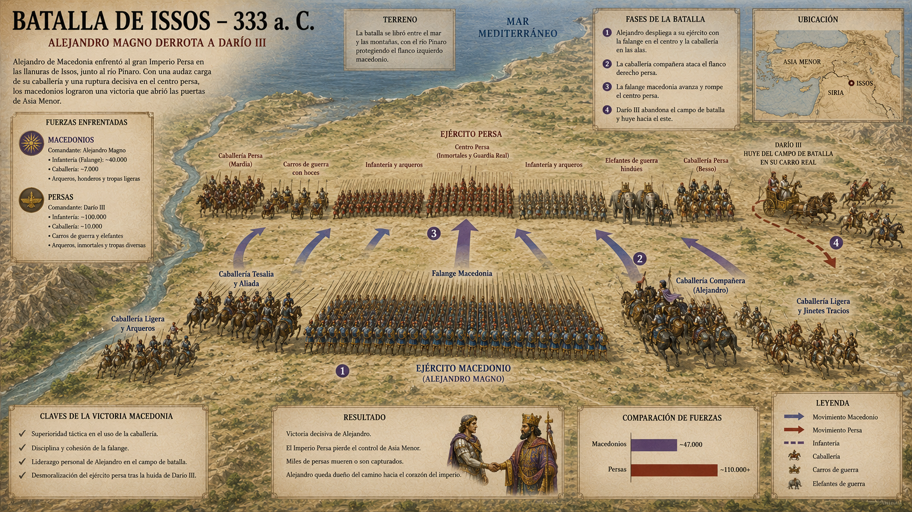
La columna romana —que incluía no solo los soldados sino también los carros de suministros, los sirvientes, las mujeres y los niños que acompañaban típicamente a un ejército en marcha— se internó en el bosque siguiendo un camino estrecho que Arminio había señalado como la ruta más directa hacia los cuarteles de invierno. La lluvia había convertido el suelo en barro. Los árboles eran tan densos que apenas entraba luz. Y en las colinas a ambos lados del camino, ocultos entre los robles, esperaban miles de guerreros germánicos.
El primer día de ataque fue caótico para los romanos: flechas y jabalinas saliendo de los árboles, guerreros germánicos atacando y retrocediendo antes de que las legiones pudieran organizarse, la columna rompiéndose en segmentos incapaces de ayudarse mutuamente. Varo ordenó construir un campamento para pasar la noche e intentar reorganizarse. El segundo día intentaron avanzar de nuevo. El terreno seguía siendo igualmente adverso, y los ataques continuaban. El tercer día, en un punto donde el camino se hacía especialmente estrecho entre un pantano y una colina, los germanos atacaron con toda su fuerza. Las legiones, sin espacio para maniobrar, sin posibilidad de usar su formación característica, fueron destruidas.
"No fue una batalla, fue una masacre. Una columna de veinte mil hombres atrapada en un embudo de barro y árboles, sin poder avanzar, sin poder retroceder, sin poder luchar como sabía luchar."
— Adrian Goldsworthy, Caesar's Legacy, 2008
La reacción inmediata de Roma ante la noticia fue el pánico. Las guarniciones del Rin fueron reforzadas urgentemente. Se reclutaron nuevas legiones. Se enviaron comandantes de emergencia para estabilizar la frontera. Pero Augusto, a diferencia de lo que Roma había hecho después de Cannas —reclutar más legiones y continuar la guerra hasta la victoria—, decidió no intentar la reconquista de Germania. Las nuevas legiones recibieron los números que las destruidas habían llevado en todas las guerras anteriores de Roma, pero los números XVII, XVIII y XIX no se volvieron a asignar nunca más: eran demasiado cargados de mala suerte y derrota.
Su sucesor Tiberio y luego el sobrino de este, Germánico, realizaron campañas de represalia exitosas en Germania entre el 14 y el 16 d.C. Germánico encontró el campo de batalla de Teutoburgo —todavía cubierto de huesos y restos de armamento romano— y enterró con honores los restos que pudo encontrar. Pero la conquista permanente de Germania no se intentó. El río Rin se convirtió en la frontera permanente del Imperio en el norte, y así permanecería durante cuatro siglos.
Esta decisión tuvo consecuencias históricas de largo alcance. Los pueblos al oeste del Rin —las actuales Francia, Bélgica, el sur de Alemania— fueron romanizados durante cuatro siglos de dominio romano: sus lenguas, culturas y leyes se transformaron hasta llegar a ser irreconocibles. Los pueblos al este del Rin —los antepasados de los actuales alemanes y escandinavos— permanecieron fuera del Imperio y mantuvieron sus propias tradiciones, lenguas y culturas. La diferencia entre la Europa del sur —latina, con sistemas jurídicos basados en el Derecho Romano, con lenguas románicas— y la Europa del norte tiene una de sus raíces más profundas en la decisión que Augusto tomó después de recibir la cabeza de Varo.
Continúa leyendo
Cuando Cayo Octavio llegó a Roma en el 44 a.C. para reclamar su herencia como sobrino nieto y heredero adoptivo de Julio César —el joven de diecinueve años que los veteranos cesarianos miraron con escepticismo, que Marco Antonio menospreció y que Cicerón creyó poder manipular en beneficio de la República— ninguno de ellos habría apostado a que ese mismo hombre gobernaría Roma durante cuarenta y cinco años, transformaría completamente su sistema de gobierno, y daría su nombre a una era de prosperidad y estabilidad que los romanos recordarían durante siglos como la edad de oro. Ninguno habría apostado a ello, y todos habrían perdido.
El ascenso de Octavio al poder absoluto fue uno de los actos de habilidad política más extraordinarios de la historia. Comenzó formando el Segundo Triunvirato con Marco Antonio —el hombre más poderoso de Roma después de César— y Lépido, para vengarse de los asesinos de su padre adoptivo. Los proscritos —listas de enemigos políticos condenados a muerte y confiscación de bienes— marcaron el comienzo de esta alianza con sangre: hasta dos mil caballeros y trescientos senadores fueron ejecutados, incluyendo al propio Cicerón, cuyas manos y cabeza fueron expuestas en el Foro como advertencia.
Pero la alianza entre Octavio y Marco Antonio era fundamentalmente inestable, y la tragedia de Cleopatra y Marco Antonio —la monarca egipcia y el general romano que formaron una alianza política y romántica que amenazaba con crear un Imperio oriental rival al Imperio occidental de Octavio— proporcionó el pretexto para el enfrentamiento final. La batalla de Actium en el 31 a.C., donde las flotas de Octavio y Agripa derrotaron a las de Marco Antonio y Cleopatra, puso fin a las guerras civiles que habían desgarrado Roma durante veinte años. Marco Antonio y Cleopatra se suicidaron. Octavio era el amo indiscutible del mundo romano.
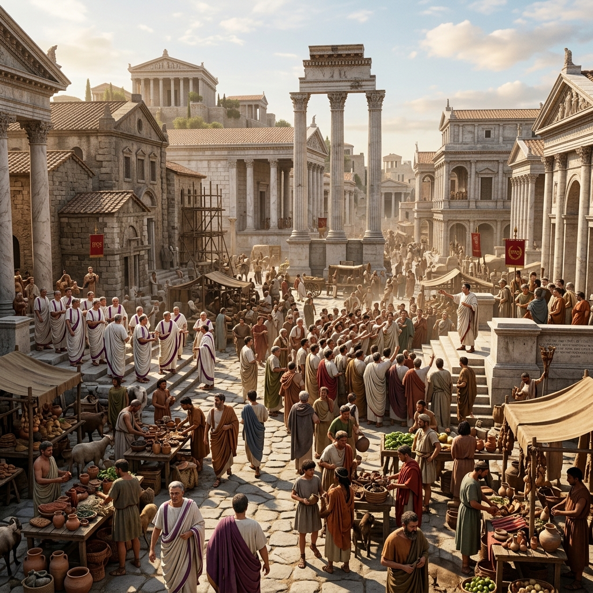
El genio político de Augusto fue comprender que Roma no aceptaría un rey —la memoria de Julio César seguía siendo una advertencia— pero que sin un gobierno fuerte y centralizado era imposible mantener el orden en un Imperio que se extendía desde Britania hasta Mesopotamia. La solución que construyó fue el Principado: un sistema que mantenía todas las formas de la República —los cónsules, el Senado, las asambleas populares, los tribunos— pero concentraba el poder real en manos de una sola persona, el Princeps (el primero entre iguales).
Augusto reunió poderes que en la República habían estado cuidadosamente distribuidos entre diferentes magistrados: el tribunado de la plebe —que le daba inviolabilidad personal y el poder de veto— el proconsualdo sobre las provincias con ejércitos, y el título de Pontífice Máximo que le daba la dirección de la religión oficial romana. Ninguno de estos poderes era en sí mismo nuevo o excepcional; su concentración en una sola persona era lo que convertía el sistema en una monarquía de facto sin serlo nominalmente.
En el 27 a.C., en un gesto cuidadosamente calculado, Octavio "devolvió" al Senado todos sus poderes extraordinarios. El Senado, igualmente calculador, se los devolvió inmediatamente y le concedió además el título de "Augustus" —una palabra con connotaciones religiosas de grandeza y autoridad sagrada que ningún magistrado ordinario había llevado antes. El teatro político estaba perfectamente dirigido. Fue el momento en que la República romana se convirtió oficialmente en Imperio, aunque nadie usó esa palabra.
El regalo más duradero de Augusto a Roma fue la paz. Después de un siglo de guerras civiles casi continuas, el Principado inauguró un período de estabilidad política que duraría, con interrupciones, aproximadamente dos siglos: desde el 27 a.C. hasta la muerte del emperador Marco Aurelio en el 180 d.C. Este período es conocido como la Pax Romana, la Paz Romana, y fue la época en que el Imperio romano alcanzó su máxima extensión territorial y su mayor prosperidad económica.
La estabilidad política tuvo consecuencias económicas extraordinarias. Con las fronteras seguras y el mar Mediterráneo libre de piratas —el Mare Nostrum, "nuestro mar", como los romanos lo llamaban—, el comercio floreció a una escala sin precedentes. Las rutas comerciales conectaban Britania con Egipto, España con Siria. Los productos de China —la seda— llegaban a Roma. Las especias de India se vendían en los mercados de Alejandría. El PIB del Imperio Romano en su apogeo representa, según algunas estimaciones modernas, aproximadamente el treinta por ciento de la producción económica mundial de la época.
"Encontré Roma en ladrillo y la dejé en mármol."
— Augusto, según Suetonio, Vida de Augusto, XXVIII
Augusto murió en el año 14 d.C., a los setenta y cinco años, después de cuarenta y cinco de gobierno. Sus últimas palabras, según Suetonio, fueron: "¿He jugado bien mi papel en la comedia de la vida? Si es así, aplaudid cuando termine el espectáculo." La metáfora teatral era perfectamente apropiada para un hombre que había pasado cuatro décadas actuando el papel de ciudadano ordinario mientras ejercía el poder de un monarca absoluto.
El modelo que Augusto estableció —el Principado, el equilibrio entre las formas republicanas y el poder centralizado— funcionó durante casi dos siglos. Sus sucesores inmediatos —Tiberio, Calígula, Claudio, Nerón, la dinastía Julio-Claudia— mantuvieron el sistema con mayor o menor competencia y mayor o menor brutalidad. La dinastía Flavia (Vespasiano, Tito, Domiciano) lo continuó. La edad de oro de los emperadores adoptivos —Nerva, Trajano, Adriano, Antonino Pío, Marco Aurelio— lo llevó a su expresión más refinada.
El nombre de Augusto sobrevivió al hombre y al Imperio: el mes de agosto, los títulos imperiales en Bizancio, el Kaiser y el Zar que son simplemente variantes de César. En el calendario, en el lenguaje y en la memoria colectiva de Occidente, Augusto sigue presente como el hombre que tomó la República moribunda de Roma y la transformó en el Imperio que daría forma a la civilización occidental durante los dos milenios siguientes.
Continúa leyendo
En el año 41 después de Cristo, el día después de que un grupo de guardias pretorianos asesinara al emperador Calígula en los corredores del palacio imperial, los mismos guardias encontraron a Claudio —el tío de Calígula, un hombre de cincuenta años considerado medio idiota por la corte romana— escondido detrás de una cortina, aterrorizado. En lugar de matarlo, los pretorianos lo declararon emperador y lo llevaron a su campamento, donde fue aclamado por la guardia completa. El Senado, que se había reunido para discutir la posible restauración de la República, se enteró de que ya tenía un nuevo emperador que había sido elegido por los soldados.
Este episodio resume perfectamente el problema fundamental de la Guardia Pretoriana: era una institución creada para proteger al emperador que frecuentemente terminaba matándolo, y un cuerpo militar supuestamente apolítico que era en realidad uno de los actores políticos más poderosos del Imperio. Entre el 14 y el 235 d.C., los pretorianos asesinaron al menos a seis emperadores, participaron en la deposición de varios más, y en el famoso "año de los cuatro emperadores" (68-69 d.C.) cambiaron de bando repetidamente apoyando al candidato que prometiera la mayor donación de dinero.
La Guardia Pretoriana fue fundada por Augusto, aunque sus antecedentes se remontan a la cohorte pretoria —la guardia personal del general en campaña— de la República tardía. Augusto organizó nueve cohortes de quinientos hombres cada una, con el propósito oficial de proporcionar una guardia personal al Princeps y mantener el orden en Italia. Para mantener las apariencias republicanas, dispersó las cohortes por varias ciudades italianas en lugar de concentrarlas en Roma.
Fue Sejano —el poderoso prefecto del pretorio bajo Tiberio— quien concentró toda la guardia en un único campamento permanente en Roma, el Castra Praetoria, en el norte de la ciudad. Esta decisión transformó la naturaleza política de la institución: en lugar de ser una guardia dispersa, se convirtió en una fuerza concentrada de entre cuatro mil y doce mil hombres (el número varió a lo largo del tiempo) ubicada en el corazón mismo de la capital imperial.
Los pretorianos recibían un sueldo significativamente más alto que los legionarios ordinarios —en los primeros tiempos del Imperio, tres veces más— y gozaban de condiciones de servicio más favorables: menos años de servicio, acceso a la capital con sus posibilidades de enriquecimiento e influencia, y la proximidad al poder que podía traducirse en favores, regalos y oportunidades. A cambio, se esperaba de ellos una lealtad absoluta al emperador. El problema era que esa lealtad era frecuentemente al cargo más que a la persona, y podía ser reorientada cuando los intereses personales o corporativos de la guardia lo aconsejaban.
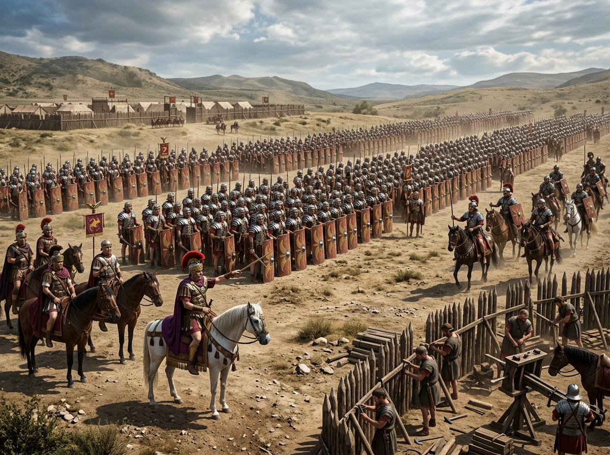
El ejemplo más extraordinario de la ambición pretoriana es el de Lucio Elio Sejano, prefecto del pretorio durante el reinado de Tiberio. Sejano fue durante una década el hombre más poderoso del Imperio después del emperador: concentró la guardia en Roma, eliminó sistemáticamente a los rivales políticos —incluyendo a Druso, el hijo de Tiberio, al que probablemente envenenó—, y tejió una red de clientelismo e influencia que le permitía controlar el acceso al anciano Tiberio, que vivía retirado en Capri.
La ambición de Sejano llegó hasta querer casarse con una princesa de la familia imperial y eventualmente suceder a Tiberio. El plan fracasó cuando Tiberio —alertado por cartas de su cuñada Antonia— decidió destruir a Sejano en lugar de depender más de él. En el año 31 d.C., Tiberio envió al Senado una carta denunciando a Sejano, que fue arrestado, ejecutado el mismo día, y cuyos restos fueron arrojados a la multitud que los destrozó. Sus hijos y exesposa fueron ejecutados. Sus estatuas fueron derribadas. En pocas horas, el hombre más poderoso del Imperio después del emperador se convirtió en un damnatio memoriae —una memoria condenada al olvido oficial.
El punto más bajo de la historia de la Guardia Pretoriana llegó en el 193 d.C., cuando tras el asesinato del emperador Pertinax, los pretorianos literalmente subastaron el trono imperial. Dos candidatos compitieron en la subasta: Sulpiciano, el suegro de Pertinax, y Didio Juliano, un rico senador. Didio Juliano ganó prometiendo más dinero por soldado pretoriano. El Senado lo ratificó. Pero el escándalo fue tan mayúsculo que los ejércitos de las provincias se rebelaron, y en dos meses Didio Juliano estaba muerto y había comenzado una nueva guerra civil.
La guardia pretoriana fue disminuida en poder e influencia por algunos emperadores —Vespasiano, Trajano, Adriano— pero nunca eliminada completamente. Su abolición definitiva llegó con Constantino I en el año 312 d.C., después de la batalla del Puente Milvio donde los pretorianos habían apoyado a su rival Majencio. Constantino disolvió la guardia, demolió el Castra Praetoria, y distribuyó a sus miembros por las legiones de frontera. Trescientos años de historia pretoriana terminaron con un decreto administrativo. El problema que habían representado —la concentración de fuerza militar en la capital— no desapareció: simplemente tomó otras formas.
"La Guardia Pretoriana fue el precio que pagó Roma por tener un poder centralizado en una ciudad sin murallas. Los soldados que debían proteger al emperador eran inevitablemente los más capaces de matarlo."
— Guy de la Bédoyère, Praetorian: The Rise and Fall of Rome's Imperial Bodyguard, 2017
Continúa leyendo
El Coliseo —su nombre oficial es Anfiteatro Flavio— es el edificio más reconocible de Roma y uno de los monumentos más famosos del mundo. Construido entre el 72 y el 80 d.C. durante el reinado de los emperadores Vespasiano y Tito, con una capacidad de entre cincuenta mil y ochenta mil espectadores, representó el pico de la ingeniería arquitectónica romana y el escenario principal de los spectacula —los juegos públicos— que eran el instrumento más poderoso del que disponía el poder imperial para mantener la lealtad y el entretenimiento de la población de Roma.
El Coliseo es un elipsoide de 188 metros de largo por 156 de ancho y 48 de altura, construido sobre una estructura de hormigón romano —el opus caementicium— que ha demostrado ser más durable que muchas estructuras modernas. Sus cuatro pisos combinan los tres órdenes arquitectónicos griegos —dórico, jónico y corintio— con el arco romano en una fachada que fue el modelo para innumerables estadios modernos.
El interior del Coliseo era una maravilla de organización: un sistema de ochenta entradas —cada una numerada, como los estadios modernos— permitía a cincuenta mil espectadores tomar sus asientos en quince minutos y evacuarlos en el mismo tiempo. Las gradas se organizaban por rango social: los mejores asientos, más cercanos a la arena, estaban reservados para los senadores y el propio emperador; los peores, más alejados, para las mujeres y los esclavos. El suelo de la arena era de madera cubierta de arena —la palabra "arena" viene del latín para arena, que se usaba para absorber la sangre— sobre un sistema de túneles subterráneos, el hipogeo, donde se almacenaban los animales, el equipo y los gladiadores.
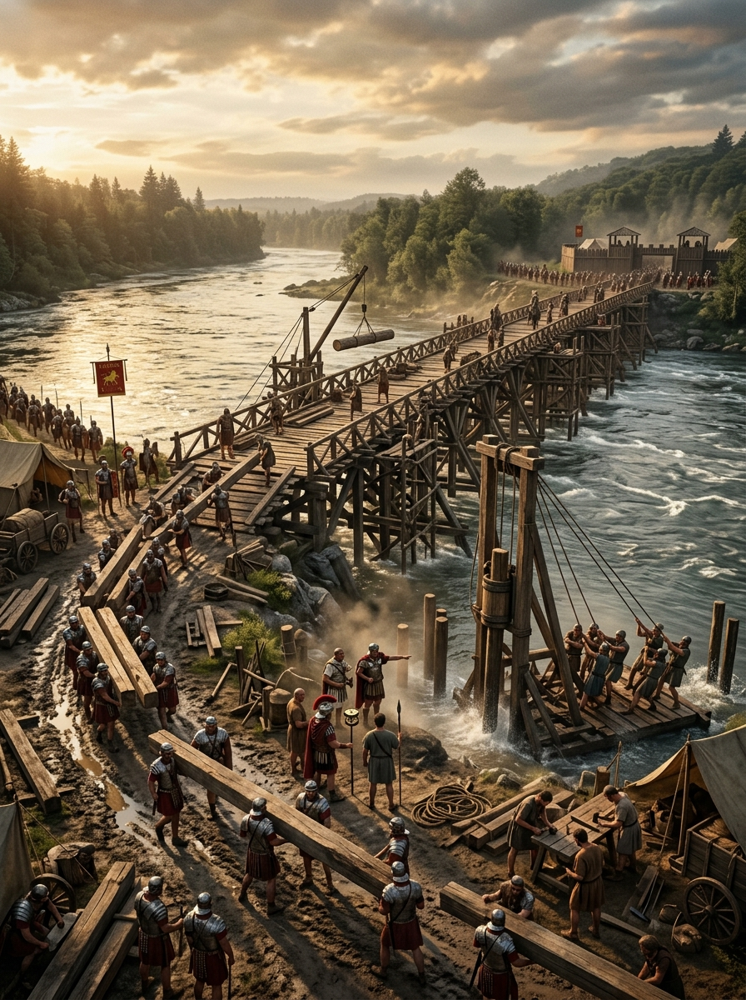
La imagen popular del gladiador —un esclavo desgraciado obligado a combatir hasta la muerte ante multitudes sedientas de sangre— es en parte correcta y en parte una simplificación que ignora las complejidades de la realidad histórica. Los gladiadores eran en su mayoría esclavos, prisioneros de guerra o criminales condenados, sí. Pero había también hombres libres —e incluso algunos de rango senatorial, en las épocas más desordenadas— que elegían voluntariamente el oficio por razones que iban desde la desesperación económica hasta la búsqueda de fama y emoción.
Los gladiadores entrenaban en los ludi —escuelas de gladiadores— bajo la supervisión de lanistas, entrenadores especializados. El entrenamiento duraba meses antes de que un gladiador pudiera presentarse en la arena, y los lanistas tenían un incentivo económico para no dejar que sus inversiones murieran innecesariamente: un gladiador bien entrenado era una inversión costosa. Los datos arqueológicos y epigráficos —las lápidas de gladiadores que han sobrevivido— sugieren que la tasa de mortalidad en los combates era significativamente menor de lo que la leyenda popular sugiere: quizás uno de cada diez combates terminaba con la muerte de uno de los participantes.
Los combates seguían reglas complejas, con varios tipos de gladiadores especializados —el retiarius con red y tridente, el secutor con casco cerrado, el murmillo con escudo galés, el thrax con escudo pequeño y cuchillo curvo— que combatían con sus propios estilos y contra oponentes designados según una tradición establecida. El público entendía estas reglas y las apreciaba: los aficionados romanos distinguían entre un combate bien realizado y uno torpe con la misma precisión con que un aficionado moderno aprecia la técnica boxística.
Los juegos gladiatorios —como todos los espectáculos públicos romanos— eran fundamentalmente un instrumento político. La fórmula que el poeta Juvenal acuñó —panem et circenses, pan y circo— captura la relación entre el poder imperial y la población de Roma: el emperador mantenía la lealtad de las clases urbanas proporcionándoles grano gratuito (o a precio controlado) y entretenimiento espectacular. Los juegos no eran solo diversión: eran la manifestación visible del poder y la generosidad imperial, y la ocasión en que el pueblo romano podía interactuar directamente con su gobernante.
El pulgar arriba o abajo de la leyenda popular es en realidad una simplificación del gesto real: la decisión de matar o perdonar a un gladiador vencido era tomada por el organizador de los juegos —normalmente el emperador o el magistrado que los patrocinaba— teniendo en cuenta la opinión del público, que la expresaba mediante gestos y aclamaciones. Un gladiador que hubiera combatido valientemente podía ser perdonado aunque hubiera perdido; uno que hubiera luchado cobardemente podía ser ejecutado aunque hubiera ganado. Los valores marciales que Roma promovía en los juegos eran los mismos que promovía en sus legiones: valor, disciplina y la aceptación estoica de la muerte.
"Los romanos no iban al Coliseo a ver morir gente. Iban a ver a personas enfrentarse al miedo con coraje. Esa es la diferencia entre la brutalidad y la espectacularización de la virtud."
— Keith Hopkins, Death and Renewal, 1983
Continúa leyendo
El año 69 después de Cristo es conocido en la historia como el "año de los cuatro emperadores": en doce meses, cuatro hombres diferentes ocuparon el trono de Roma. Galba fue asesinado por los pretorianos en enero. Otón se suicidó en abril tras ser derrotado en combate. Vitelio fue arrastrado por las calles de Roma y ejecutado en diciembre. Solo el cuarto, Vespasiano, sobrevivió lo suficiente para dar nombre a una nueva dinastía y restablecer el orden. Este año de caos político y guerra civil reveló una verdad sobre el Principado que Augusto había tenido mucho cuidado en ocultar: el poder imperial no descansaba sobre ningún principio de legitimidad constitucional sólido, sino sobre el consentimiento —o el miedo— de los ejércitos.
El año de los cuatro emperadores comenzó con la muerte de Nerón en junio del 68 d.C. Nerón —el último de la dinastía Julio-Claudia, que había ascendido al trono a los dieciséis años y gobernado durante catorce— había alienado sucesivamente a prácticamente todos los grupos de poder de Roma: el Senado, al que trataba con desprecio y del que ejecutaba miembros arbitrariamente; el ejército, al que había descuidado; y finalmente la Guardia Pretoriana, que le retiró la lealtad cuando el gobernador de Hispania, Servio Sulpicio Galba, se rebeló y comenzó a marchar hacia Roma. El Senado declaró a Nerón enemigo público; Nerón huyó y se suicidó con ayuda de un liberto, pronunciando, según Suetonio, las palabras: "¡Qué artista muere conmigo!"
La sucesión debería haber sido simple: Galba era el candidato del Senado y del ejército de Hispania, un veterano general de setenta y un años con un historial respetable. Pero Galba cometió tres errores fatales en los primeros meses de su reinado. Primero, se negó a pagar la donación que había prometido a los pretorianos al inicio de su rebelión. Segundo, ejecutó a oficiales y senadores considerados rivales sin juicio formal, sembrando el terror entre la clase política. Tercero, adoptó como sucesor a Pisón Liciniano —un noble de buena familia pero sin experiencia militar ni base de apoyo— ignorando al ambicioso Marco Salvio Otón, que se había unido a su rebelión esperando ser el heredero.
Otón reaccionó a su exclusión de la sucesión comprando literalmente la lealtad de los pretorianos. El 15 de enero del 69 d.C., Galba fue asesinado en el Foro mientras sus guardias abandonaban al anciano. Otón fue proclamado emperador por los pretorianos. El Senado, siguiendo su habitual pragmatismo, lo ratificó al día siguiente.
Pero al mismo tiempo, en Germania, las legiones del Rin habían rechazado renovar el juramento de lealtad a Galba al comienzo del año —la tradición quería que el primer día del año los ejércitos renovaran el juramento al emperador— y habían proclamado a su propio candidato: Aulo Vitelio, un hombre de familia noble pero de reputación mediocre al que sus propios soldados habían elegido más por su accesibilidad que por su genio militar. Los ejércitos de Germania marcharon hacia Italia.
Otón organizó una resistencia pero fue derrotado en la batalla de Bedriac, cerca de Cremona, en abril del 69. Su respuesta a la derrota fue la que los romanos consideraban la más heroica disponible: el suicidio. "No arriesgaré más vidas romanas en causa perdida", dijo, y se clavó un cuchillo. La grandeza del gesto fue reconocida incluso por sus enemigos. Vitelio entró en Roma como vencedor.
Mientras Otón y Vitelio se disputaban el poder en Italia, en Oriente los ejércitos que combatían la Gran Revuelta Judía —que había comenzado en el 66 d.C.— proclamaron a su comandante Tito Flavio Vespasiano como nuevo candidato imperial. Vespasiano no era un aristócrata: era el hijo de un recaudador de impuestos de clase media, cuya carrera militar había sido brillante pero cuyo origen humilde era un tema de burla en la corte romana de emperadores como Calígula y Nerón.
La ventaja de Vespasiano era que tenía detrás de él los ejércitos más veteranos y mejor organizados del Imperio. Sus aliados en el Danubio actuaron primero: las legiones panonias marcharon hacia Italia, derrotaron a Vitelio en la segunda batalla de Bedriac (octubre del 69), y tomaron Roma en diciembre. Vitelio intentó negociar una rendición pero fue capturado por la muchedumbre, arrastrado por las calles y ejecutado. Vespasiano, que seguía en Oriente, fue informado que era el nuevo amo de Roma. Regresó con calma y comenzó a gobernar con la eficiencia de un buen administrador militar.
"El secreto del Imperio se había revelado: los emperadores podían ser hechos en otro lugar que no fuera Roma."
— Tácito, Historias, I.4
El año de los cuatro emperadores tuvo consecuencias duraderas en la política imperial romana. La más importante fue la revelación de la dependencia del poder imperial sobre el ejército: sin el apoyo de las legiones, ningún candidato al trono podía sostenerse. Esta verdad —que Augusto había ocultado cuidadosamente bajo las formas constitucionales del Principado— quedó expuesta para que todo el mundo la viera.
La segunda consecuencia fue el fin del monopolio de la familia julio-claudia sobre el trono. Vespasiano y sus hijos Tito y Domiciano establecieron la dinastía Flavia, y con ello se estableció que el trono imperial no estaba vinculado a ninguna familia específica por derecho hereditario inmutable. Esta apertura tendría consecuencias tanto positivas —los mejores emperadores del siglo II d.C. fueron adoptados por sus predecesores por méritos, no por parentesco— como negativas: también significaba que cualquier general ambicioso con suficiente apoyo militar podía aspirar al trono.
La tercera lección fue más inmediata: la destrucción material que la guerra civil había causado en Italia, particularmente en el norte, donde las batallas de Bedriac habían asolado la región. Vespasiano tuvo que reconstruir físicamente parte de lo que la guerra había destruido, además de restaurar las finanzas públicas que los excesos de Nerón y el caos del 69 habían dejado en estado deplorable. Lo hizo con la eficiencia práctica que caracterizó su gobierno, y cuando murió en el 79 d.C. dejó un Imperio financieramente saneado y políticamente estable. Aunque también dejó el inicio de las obras del Anfiteatro Flavio —el Coliseo— como símbolo de la restauración imperial.
Continúa leyendo
La legión romana fue durante siglos el instrumento más eficiente de poder militar que el mundo occidental había conocido. No fue el ejército más grande —los persas, los macedonios y los egipcios habían movilizado números mucho mayores. No fue necesariamente el más bravo —los galos, los germanos y los cartagineses producían guerreros individualmente más feroces. Lo que hizo de la legión un instrumento incomparable fue su combinación de disciplina colectiva, versatilidad táctica, capacidad de adaptación y, sobre todo, la logística y el profesionalismo que la sostenía en campaña durante meses o años.
La legión romana no nació en su forma clásica: evolucionó durante siglos desde la falange hoplita que Roma adoptó originalmente de los griegos y etruscos hacia el sistema manipular y posteriormente cohortado que alcanzó su forma definitiva en el siglo I a.C. La falange —la misma formación que usaban los macedonios— era efectiva en terreno plano pero vulnerable en terreno irregular y en los flancos. Las guerras de Italia —contra los samnitas, en terreno montañoso y difícil— forzaron a Roma a desarrollar una táctica más flexible.
El sistema manipular dividía la legión en unidades más pequeñas —los manípulos— que podían actuar con cierta independencia en el campo de batalla. Tres tipos de manípulos —los hastati en la primera línea, los príncipes en la segunda, los triarios en la tercera— formaban una estructura escalonada que permitía comprometer las fuerzas gradualmente, manteniendo reservas frescas cuando las líneas delanteras comenzaban a agotarse. Era un sistema mucho más sofisticado y flexible que la falange, y demostró su eficacia en las conquistas de Italia y las Guerras Púnicas.
La reforma más significativa fue la de Cayo Mario a finales del siglo II a.C. Mario transformó la legión de varias maneras: eliminó la distinción entre hastati, príncipes y triarios, creando una infantería pesada uniforme; adoptó la cohorte —diez cohortes de seiscientos hombres cada una— como unidad táctica básica en lugar del manípulo; y abrió el alistamiento a los ciudadanos sin propiedad, profesionalizando definitivamente el ejército romano. Los soldados de Mario no eran campesinos que combatían en verano y volvían a sus campos en otoño: eran soldados profesionales cuyo sustento dependía del ejército y cuya lealtad era tan o más fuerte hacia su general que hacia Roma.
El equipamiento del legionario del período clásico —aproximadamente del siglo I a.C. al siglo II d.C.— era el resultado de siglos de evolución práctica. La lorica segmentata —la famosa armadura de bandas articuladas que las películas asocian con Roma— fue en realidad una invención tardía, del siglo I d.C. Antes de ella, los legionarios usaban la lorica hamata —cota de malla— o la lorica squamata —escamas de metal cosidas sobre cuero. Todas estas armaduras ofrecían diferentes compromisos entre protección, peso y movilidad.
El equipamiento ofensivo estándar consistía en el pilum —la jabalina pesada de dos metros que el legionario lanzaba a pocos metros del enemigo— y el gladius —la espada corta de doble filo, de entre cincuenta y sesenta centímetros, que era el arma de combate cuerpo a cuerpo. La combinación era tácticamente calculada: el pilum, con su larga punta de hierro blando que se doblaba al impactar, inutilizaba el escudo del enemigo que lo recibía, obligándole a soltarlo en el momento en que el legionario llegaba con el gladius a distancia de corte.
El escutum —el gran escudo rectangular curvo— completaba el equipo defensivo. Su forma curva permitía al legionario cubrirse desde el hombro hasta la rodilla, y cuando varios legionarios unían sus escudos en la formación testudo —la tortuga— creaban una cobertura prácticamente impenetrable a los proyectiles que era especialmente eficaz durante los asedios.
Una de las características más extraordinarias de la legión romana era su capacidad para crear una posición defensiva segura cada noche de campaña. El castra —el campamento romano— seguía siempre el mismo diseño: rectangular, con cuatro puertas, con las calles principales perpendiculares entre sí, con la tienda del comandante en el centro, con las tiendas de las cohortes en posiciones asignadas. Un legionario podía llegar de noche a un campamento que nunca había visto antes y encontrar su tienda sin necesidad de preguntar, porque el diseño siempre era el mismo.
La construcción del campamento era parte integral del entrenamiento y la disciplina legionaria. Al final de cada día de marcha, antes de comer o descansar, los legionarios excavaban una zanja perimetral, levantaban una empalizada de estacas que cada soldado cargaba consigo, y construían las estructuras básicas del campamento. Este trabajo, que tardaba pocas horas en manos de un ejército bien entrenado, convertía la columna en marcha en una posición defensiva que podía resistir un ataque de fuerzas mucho superiores. Era la razón por la que los guerreros galos y germanos raramente atacaban a los romanos en su campamento: sabían que el esfuerzo valdría pocas ganancias.
"Los romanos nunca están ociosos en campaña. Aunque no haya enemigo, construyen su campamento como si hubiera uno. La diferencia entre una legión y un ejército bárbaro no se ve en la batalla: se ve en lo que hacen cuando no hay batalla."
— Josefo, Guerra de los Judíos, III.5, 75 d.C.
La legión era mucho más que una unidad de combate: era una organización total que incluía todas las capacidades necesarias para operar de manera autónoma en territorio hostil durante períodos prolongados. Cada legión contaba con ingenieros capaces de construir puentes, acueductos, catapultas y torres de asedio. Tenía médicos —los medici— que atendían a los heridos, y los datos arqueológicos sobre los hospitales militares romanos muestran un nivel de organización y especialización médica sorprendentemente sofisticado para la época. Tenía también artesanos —herreros, carpinteros, curtidores— capaces de reparar el equipo en campaña.
Esta autosuficiencia era la clave de la superioridad estratégica romana. Una legión podía marchar durante semanas en territorio donde no hubiera ninguna ciudad o mercado, sostenerse con sus propios recursos, construir sus propias fortificaciones y reparar su propio equipo. Los ejércitos de sus adversarios dependían mucho más del saqueo y el pillaje para sostenerse, lo que limitaba su capacidad de mantener posiciones fijas o realizar campañas prolongadas. La logística —el arte de sostener un ejército en el campo— fue quizás la mayor ventaja competitiva de Roma, y la legión era su expresión más perfecta.
Continúa leyendo
Entre los años 235 y 284 después de Cristo, el Imperio Romano experimentó la crisis más grave de su historia hasta ese momento: un período de cincuenta años conocido como la "Anarquía Militar" o la "Crisis del Siglo III" en el que veintiséis hombres fueron reconocidos como emperadores legítimos, la mayoría de los cuales murieron violentamente. El Imperio se fragmentó en tres partes durante un período (el Imperio Galo en Occidente, el Imperio de Palmira en Oriente, y el núcleo central). Las fronteras fueron penetradas repetidamente por enemigos externos. La economía colapsó bajo el peso de la inflación y la fragmentación del comercio. La población disminuyó significativamente por la combinación de guerras, epidemias y hambrunas. Fue, en muchos sentidos, el período en que el Imperio Romano más se aproximó a su fin definitivo —que no llegaría hasta el siglo V.
La crisis del siglo III no fue un accidente histórico sino el producto de tensiones estructurales que venían acumulándose durante décadas. La primera era el problema de la sucesión: el Principado nunca desarrolló un mecanismo claro y aceptado de transmisión del poder. La adopción del "mejor disponible" que había funcionado razonablemente bien durante el siglo II —la época de los emperadores adoptivos Nerva-Trajano-Adriano-Antonino Pío-Marco Aurelio— dependía de la buena voluntad y el buen juicio del emperador reinante, y Marco Aurelio la rompió al designar a su propio hijo biológico, Cómodo, como sucesor. Cómodo demostró ser un desastre, fue asesinado, y se abrió una nueva fase de inestabilidad.
La segunda causa estructural era la creciente dependencia del ejército para sostener el poder imperial. Las reformas de Septimio Severo (193-211 d.C.) —que aumentó el sueldo de los soldados, les permitió casarse durante el servicio y favoreció abiertamente al ejército sobre la clase senatorial— tuvieron consecuencias que el propio Severo no pudo anticipar: convirtieron a los ejércitos provinciales en actores políticos conscientes de su poder, capaces de proclamar y derrocar emperadores según sus propios intereses. La frase que se atribuye a Severo en su lecho de muerte —"Enriqueced a los soldados e ignorad a todos los demás"— es una caricatura, pero captura la lógica que la crisis llevaría a su conclusión.
La característica más llamativa de la crisis del siglo III es la rapidez con que los emperadores se sucedieron. Entre el 235 —cuando Maximino el Tracio, el primero de los "emperadores-soldado", fue proclamado por los ejércitos del Rin— y el 284, cuando Diocleciano estableció el orden, al menos veintiséis hombres fueron reconocidos como emperadores legítimos, y muchos más aspirantes y usurpadores locales se añadieron a la lista. La mayoría reinó menos de un año; la mayoría murió violentamente, generalmente a manos de los mismos soldados que los habían proclamado.
Maximino el Tracio (235-238) es emblemático de este nuevo tipo de emperor: hijo de un pastor de origen dacio y godo, analfabeto, que había escalado los rangos del ejército hasta llegar a comandante, y que fue proclamado por los soldados sin pasar por el Senado, sin que este pudiera hacer nada al respecto. Fue el primero de los muchos "emperadores del ejército" que definirían el período. Fue también el primero en ser asesinado por sus propios soldados cuando el asedio de Aquilea duró demasiado y el suministro de alimentos se agotó.
El punto más bajo de la crisis llegó en el período 260-274, cuando el Imperio se fragmentó literalmente en tres partes. En el oeste, después de la captura del emperador Valeriano por los persas sasánidas —la humillación suprema de un emperador romano siendo hecho prisionero por el enemigo— el general Póstumo creó el Imperio Galo, que incluía Galia, Britania e Hispania y se gobernaba a sí mismo como un estado separado aunque paralelo a Roma.
En el este, la reina Zenobia de Palmira —una de las figuras más extraordinarias de la Antigüedad tardía— aprovechó el caos para expandir el poder de su ciudad hasta incluir Egipto, Siria, Arabia y Anatolia. Zenobia, que se describía a sí misma como descendiente de Cleopatra y que afirmaba que su reino era más rico y más culto que Roma, gobernó su imperio oriental durante varios años con una sofisticación administrativa y cultural que sus contemporáneos admiraron incluso cuando la combatían.
Fue el emperador Aureliano (270-275) quien reunificó el Imperio por la fuerza. Derrotó a los galos en el 274, destruyó el Imperio de Palmira y capturó a Zenobia —que fue llevada a Roma en cadenas de oro y pasó el resto de su vida en una villa cerca de Tívoli, convertida en una respetada figura social—, y restableció el control sobre todo el territorio imperial. Su reinado fue demasiado breve para consolidar completamente la restauración, pero sentó las bases para la reforma definitiva de Diocleciano.
"El siglo III demostró que el Imperio Romano no era indestructible. Pero también demostró su extraordinaria resistencia: un organismo que sufrió décadas de guerra civil, invasiones externas y colapso económico y todavía encontró la energía para reformarse y sobrevivir."
— Peter Heather, The Fall of the Roman Empire, 2006
Cuando Diocleciano llegó al poder en el 284, el Imperio estaba exhausto pero no destruido. Las reformas que implementó durante su reinado de veinte años fueron las más profundas desde las de Augusto, y transformaron el Imperio Romano en algo fundamentalmente diferente de lo que había sido durante la Pax Romana. La más importante fue la Tetrarquía: la división del poder entre cuatro gobernantes —dos Augustos y dos Césares— para hacer frente simultáneamente a las amenazas en múltiples fronteras. Era la aceptación implícita de que el Imperio era demasiado grande para ser gobernado eficientemente por una sola persona.
Diocleciano también reformó el ejército, la administración provincial y el sistema fiscal, y reorganizó la economía imperial para hacerla más capaz de sostener el gasto militar que las circunstancias requerían. Sus reformas no resolvieron los problemas estructurales del Imperio —el sistema de sucesión seguía siendo incierto, las presiones de las fronteras continuaban, la economía siguió siendo frágil— pero dieron al Imperio dos siglos más de vida antes del colapso final en el Occidente en el 476 d.C.
La crisis del siglo III es el momento en que la historia de Roma se bifurca entre el Imperio Romano de Occidente —que colapsará en el siglo V— y el Imperio Romano de Oriente, que continuará durante otros mil años con el nombre de Imperio Bizantino hasta la caída de Constantinopla en 1453. Las raíces de esa bifurcación —la mayor solidez económica y defensiva del Oriente frente al Occidente— son claramente visibles en la crisis del siglo III, cuando fue el Oriente el que primero estabilizó sus fronteras y el que conservó mejor la continuidad administrativa. La historia del fin de Roma comenzó, en muchos sentidos, con la crisis del siglo III.
Volver al inicio
En el siglo VI antes de Cristo, en las áridas mesetas del Irán actual, un pueblo llamado los persas emprendió una conquista sin precedentes en la historia de la humanidad. Bajo el liderazgo de Ciro II, conocido para la posteridad como Ciro el Grande, el Imperio Aqueménida nació de la nada para convertirse, en apenas dos generaciones, en la entidad política más extensa que el mundo antiguo había conocido. Su historia es la de la ambición humana llevada a sus límites más extremos, y también la de los peligros que acechan a todo poder cuando se cree invencible.
Ciro II de Persia accedió al trono del pequeño reino de Anshan alrededor del año 559 aC. Lo que siguió fue una de las campañas de conquista más rápidas y sostenidas de toda la antigüedad. En 550 aC, Ciro derrotó al Imperio Medo —su propio suegro encabezaba ese reino— incorporando todo el Oriente Medio septentrional a su dominio. En 547 aC, venció al legendariamente rico Creso de Lidia, añadiendo Asia Menor al Imperio. En 539 aC, Babilonia, la ciudad más famosa del mundo antiguo, cayó ante él sin apenas resistencia. Los propios babilonios abrieron las puertas de su ciudad al conquistador persa, que les prometió respetar sus tradiciones y su dios Marduk.
Lo que distinguió a Ciro de otros conquistadores de su época —y de muchos posteriores— fue su política de tolerancia religiosa y respeto cultural. Allí donde otros imperios destruían los templos de los pueblos vencidos e imponían su cultura, Ciro proclamaba que cada pueblo podía seguir adorando a sus propios dioses y viviendo según sus propias costumbres. Esta política no era solo filosófica: era profundamente pragmática. Un pueblo al que se le respetan sus creencias y tradiciones es mucho más fácil de gobernar que uno sometido por la fuerza bruta y la humillación cultural.
Si Ciro fue el conquistador que creó el Imperio, Darío I fue el administrador que lo hizo funcionar. Accedió al poder en 522 aC tras una crisis sucesoria que él mismo aprovechó para eliminar a un pretendiente considerado ilegítimo. Una vez consolidado en el trono, Darío emprendió la tarea monumental de convertir una colección de territorios conquistados en un verdadero estado administrativo.
Su creación más duradera fue el sistema de satrapías: el Imperio se dividió en veinte provincias, cada una gobernada por un sátrapa que respondía directamente ante el rey. Para evitar que estos gobernadores acumularan demasiado poder, Darío estableció un sistema de inspectores reales —llamados "los ojos y oídos del rey"— que viajaban sin anuncio por el Imperio verificando que los sátrapas cumplían sus obligaciones y no abusaban de su posición.
Las calzadas reales que Darío construyó por todo el Imperio eran obras de ingeniería extraordinarias para la época. La más famosa, la Calzada Real que conectaba Susa con Sardes, tenía más de 2.700 kilómetros y estaba salpicada de estaciones de postas con caballos frescos a intervalos regulares. Un mensajero real podía recorrer esa distancia en menos de una semana —un correo ordinario tardaría tres meses. Esta infraestructura de comunicaciones fue la columna vertebral que mantuvo cohesionado un Imperio de dimensiones casi imposibles.
"Soy Darío el Gran Rey, Rey de Reyes, Rey en Persia, Rey de los países, hijo de Histaspes, nieto de Arsames, un Aqueménida. Por la gracia de Ahura Mazda, yo soy rey."
— Inscripción de Behistún, 520 aC
El gran desafío de Darío I vino de donde menos se esperaba: las pequeñas y perpetuamente divididas ciudades-estado de Grecia. Cuando las ciudades griegas de Asia Menor se rebelaron contra el dominio persa con ayuda de Atenas en 499 aC, Darío aplastó la revuelta, pero la participación ateniense en ella le convenció de que era necesario castigar a Grecia continental y expandir el Imperio hacia el oeste.
En 490 aC, el ejército persa desembarcó en Maratón, a unos cuarenta kilómetros de Atenas. Lo que siguió fue una de las batallas más famosas de la historia antigua: los griegos, en inferioridad numérica pero superiores tácticamente, derrotaron al ejército persa con una carga de infantería pesada que sorprendió a los persas. La noticia de la victoria fue llevada a Atenas por un corredor —la leyenda de este corredor es el origen de la carrera de maratón moderna. Darío murió antes de poder vengarse. Su hijo Jerjes lo intentó diez años después, con un ejército infinitamente mayor, y fracasó igualmente ante las Termópilas, Salamina y Platea.
Bajo Jerjes, el Imperio Aqueménida alcanzó su mayor extensión territorial y también su primera gran derrota. La invasión de Grecia en 480-479 aC fue el proyecto más ambicioso de su reinado: un ejército que las fuentes griegas describen en cifras fantásticas —algunos hablan de dos millones de hombres, aunque los historiadores modernos estiman entre 100.000 y 300.000— cruzó el Helesponto sobre un puente de barcos y avanzó sobre Grecia.
La victoria táctica de las Termópilas —donde trescientos espartanos y sus aliados retrasaron al ejército persa durante tres días cruciales— se convirtió en derrota estratégica. La flota persa fue destruida en la batalla naval de Salamina, y el ejército que había quedado en Grecia fue aniquilado en Platea al año siguiente. Jerjes regresó a Persia humillado, sin haber logrado su objetivo. Aunque el Imperio seguía siendo el más poderoso del mundo conocido, la aureola de invencibilidad se había roto.
El siglo que siguió a las Guerras Médicas fue un período de consolidación interna pero también de debilitamiento gradual. Las guerras entre las ciudades griegas —primero la Guerra del Peloponeso, luego la hegemonía espartana, luego la tebana— eran fomentadas activamente por el oro persa, que financiaba alternativamente a un bando y otro para mantener a los griegos demasiado ocupados entre sí como para amenazar a Persia.
Internamente, sin embargo, el Imperio sufría de algo que ninguna cantidad de oro podía curar: la fragmentación del poder real. Las conspiraciones de palacio, los sátrapas que se hacían demasiado poderosos, las revueltas en Egipto —que se independizó brevemente en varias ocasiones— todo esto fue erosionando la cohesión del Imperio que Ciro y Darío habían construido con tanto cuidado.
Cuando Alejandro III de Macedonia cruzó el Helesponto en 334 aC con cuarenta mil hombres, el Imperio Aqueménida todavía era la mayor potencia del mundo conocido. Pero era un gigante que había empezado a envejcer por dentro. Su caída, en apenas ocho años, a manos de un rey macedónico de veintitrés años, sería el mayor shock geopolítico del mundo antiguo. El episodio 2 de este podcast cuenta cómo sucedió.
Continúa escuchando
En la primavera del año 334 antes de Cristo, Alejandro III de Macedonia tenía veintidós años y heredaba el ejército más perfecto que Grecia había producido jamás. Su padre, Filipo II, había pasado veinte años transformando a los macedonios de una potencia regional periférica en la fuerza militar dominante del mundo griego. Ahora ese ejército era suyo, y Alejandro tenía un objetivo que había perseguido desde la infancia, alimentado por su tutor Aristóteles y por las historias de Aquiles que había aprendido de memoria: la conquista de Persia.
Para entender por qué Alejandro venció a Persia, hay que entender primero quién era Alejandro. Hijo de Filipo II y de la princesa epirota Olimpia, creció en una corte donde las intrigas políticas eran el pan de cada día y donde la violencia era un instrumento de gobierno perfectamente normal. Aristóteles le enseñó filosofía, ciencia, medicina y literatura. Homero le enseñó —a través de la Ilíada— que la gloria se conquista en el campo de batalla y que la vida de un héroe es breve pero eterna.
Alejandro tenía cualidades extraordinarias como comandante militar: una capacidad casi sobrenatural para leer el terreno y el movimiento de las tropas enemigas, un coraje personal que le llevaba siempre a la primera línea de combate —lo que le costó numerosas heridas a lo largo de su campaña—, y una habilidad para inspirar lealtad en sus hombres que iba mucho más allá de lo ordinario. Pero también tenía debilidades características de su carácter: una cólera devastadora cuando se sentía traicionado, una dependencia del alcohol que empeoró con los años, y una necesidad de ser considerado divino que chocó cada vez más con sus generales macedónicos.
El primer gran enfrentamiento entre Alejandro y Persia tuvo lugar en mayo del 334 aC, en las orillas del río Gránico, en el noroeste de Asia Menor. Los sátrapas persas de la región habían reunido un ejército de aproximadamente cuarenta mil hombres —mitad caballería, mitad infantería mercenaria griega— y habían tomado posiciones en la orilla opuesta del río, aprovechando la corriente y las márgenes empinadas como defensas naturales.
El general griego al servicio de Persia, Memnón de Rodas, propuso una táctica inteligente: retirarse, aplicar tierra quemada, y dejar que el ejército macedónico se agotara persiguiendo un enemigo que huía. Los sátrapas persas rechazaron el consejo por razones de honor —no podían permitirse la humillación de huir ante un rey menor— y decidieron dar batalla. Fue un error fatal.
La batalla del Gránico fue brillantemente ejecutada por Alejandro. Mientras el centro macedónico presionaba frontalmente, él mismo lideró la caballería compañera hacia el flanco derecho persa, creando el caos que permitió a la falange avanzar por el centro. La victoria fue aplastante. Más importante aún: la derrota de los sátrapas en su primera batalla abrió las ciudades griegas de Asia Menor a Alejandro sin necesidad de asediarlas. Toda la costa occidental de Asia Menor cayó en semanas.
En el otoño del 333 aC, Darío III tomó el mando personal del ejército persa por primera vez. Era un momento de enorme presión política: llevar en persona el ejército era necesario para demostrar que el Gran Rey no temía al conquistador macedónico. Eligió un campo de batalla en el estrecho paso costero de Issos, donde las montañas y el mar comprimían el terreno, neutralizando teóricamente la superioridad de la caballería macedónica.
La batalla de Issos fue el primer enfrentamiento directo entre los dos monarcas. Darío, en el centro del ejército persa, se encontró de repente con que Alejandro había roto la línea persa en el flanco derecho y se dirigía directamente hacia él. Lo que siguió fue el momento definitorio de Darío como rey: subió a su carro de guerra y huyó del campo de batalla, dejando atrás a su ejército, y más humillantemente aún, a su madre, su esposa, sus hijas y su tesoro personal.
La captura de la familia real persa por Alejandro fue un golpe psicológico enorme. Sin embargo, Alejandro trató a las prisioneras con un respeto escrupuloso —no ejerció violencia ni humillación sobre ellas— lo que los historiadores antiguos interpretan como una demostración de su concepto de realeza legítima. No quería humillar a Persia: quería convertirse en su rey.
"Darío huyó, pero Alejandro no le persiguió. En cambio, entró en la tienda del rey y contempló los tesoros bañados de oro, los perfumes y los ungüentos, la belleza de todo aquello. Luego, volviéndose a sus compañeros, dijo: Esto, al parecer, es ser rey."
— Plutarco, Vida de Alejandro, cap. XX
Tras Issos, Alejandro no persiguió a Darío directamente. En cambio, pasó los siguientes dos años consolidando el control del Mediterráneo oriental: tomó Tiro tras un épico asedio de siete meses, ocupó Egipto —donde fue aclamado como faraón y fundó Alejandría— y se adentró en el desierto hasta el oráculo de Amón en el oasis de Siwa, donde según la tradición le fue revelado que era hijo del dios.
Mientras Alejandro consolidaba su control mediterráneo, Darío usó esos dos años para preparar su venganza. Reunió el ejército más grande que el Imperio podía levantar, incorporó unidades especiales —carros de guerra con cuchillas en las ruedas, elefantes de guerra, caballería de las estepas escíticas— y eligió el campo de batalla con todo el cuidado que Issos no había tenido. Esta vez no habría estrechos ni terreno accidentado: eligió la llanura de Gaugamela, en la Mesopotamia actual, y la hizo aplanar específicamente para que sus carros de guerra pudieran maniobrar sin obstáculos.
Darío incluso envió embajadores a Alejandro ofreciendo la mitad del Imperio y la mano de su hija a cambio de la paz. Alejandro rechazó la oferta. Cuando su general Parmenión dijo "Yo aceptaría, si fuera Alejandro", Alejandro respondió: "Y yo también, si fuera Parmenión." Era inevitable: el enfrentamiento final tendría lugar en Gaugamela. El episodio 3 cuenta lo que sucedió ese día.
Continúa escuchando
El 1 de octubre del año 331 antes de Cristo amaneció frío y claro sobre la llanura de Gaugamela, en la Mesopotamia septentrional. En ese campo que Darío III había hecho aplanar con semanas de antelación para favorecer a sus carros de guerra y su caballería numérica, se iba a decidir el destino del mundo conocido. De un lado, el mayor ejército que el Imperio Aqueménida había reunido en siglos: estimaciones modernas hablan de entre 100.000 y 200.000 hombres. Del otro, el ejército macedónico de Alejandro, que no llegaba a los 50.000 combatientes. Pero los números, como Alejandro había demostrado dos veces ya, raramente decidían batallas por sí solos.
La víspera de la batalla reveló el abismo de temperamento entre los dos rivales. Parmenión, el veterano general macedónico, propuso un ataque nocturno que aprovechase la oscuridad para neutralizar la superioridad numérica persa. Alejandro lo rechazó con una frase que se haría famosa: "No robo victorias." Quería derrotar a Persia en campo abierto, a plena luz del día, sin excusas posibles para el perdedor.
Mientras Alejandro dormía con una tranquilidad casi sobrenatural —su general Parmenión tuvo que despertarle cuando ya era hora de preparar las tropas—, Darío pasó la noche en vela, angustiado, con su ejército en formación de combate toda la noche para evitar ser sorprendido. Cuando llegó el alba, las tropas persas llevaban horas en pie y comenzaban a sufrir el agotamiento mientras los macedónicos llegaban frescos y descansados al campo de batalla.
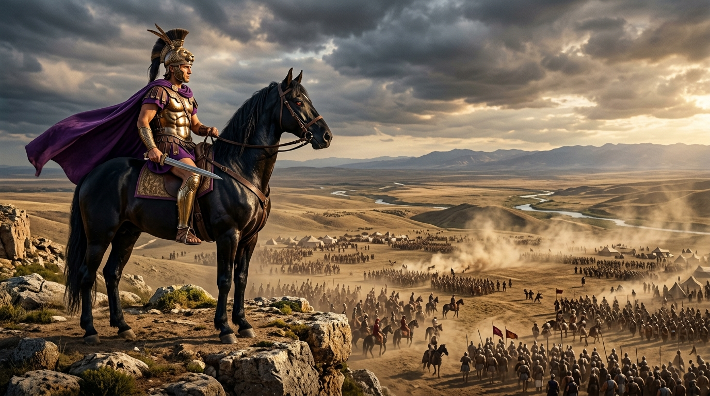
El despliegue de Darío reflejaba una visión cuantitativa de la guerra: abrumador en números, con los mejores elementos en el centro —él mismo con la guardia real— y los flancos cubiertos por una caballería que esperaba envolver al enemigo. Sus armas especiales —unos 200 carros de guerra con guadañas en las ruedas y 15 elefantes de guerra— estaban posicionadas para romper la falange macedónica en el centro.
El despliegue de Alejandro reflejaba exactamente lo contrario: una comprensión casi intuitiva de la dinámica de las batallas. La falange, acorazada, en el centro, con órdenes de mantener la presión pero no avanzar hasta que Alejandro diera la señal. La caballería compañera, la élite de su ejército, en el flanco derecho bajo su mando directo. Y una innovación táctica que pocas veces se menciona: unidades de reserva colocadas detrás de la formación principal, mirando hacia atrás, para evitar ser rodeados si los persas conseguían flanquearles.
La batalla comenzó cuando Alejandro lideró su caballería hacia la derecha, obligando al flanco izquierdo persa —la caballería bactriana y escítica— a desplazarse también hacia la derecha para no ser sobrepasados. Este movimiento oblicuo, aparentemente caótico, era perfectamente calculado: Alejandro buscaba crear un hueco en la línea persa, una brecha por la que pudiera lanzar su carga decisiva directamente hacia el centro donde se encontraba Darío.
Darío ordenó lanzar los carros de guadañas contra la falange en el centro. Los macedónicos, entrenados para exactamente esto, abrieron sus filas y dejaron pasar los carros entre ellos, atacando a los caballos y conductores desde los flancos mientras los carros pasaban inofensivos. La táctica persa más temible resultó ser completamente ineficaz contra una infantería disciplinada y bien entrenada.
Cuando Alejandro vio el hueco que sus maniobras habían creado en la línea persa, lanzó la carga definitiva. Con la caballería compañera en cuña, cabalgó directamente hacia donde Darío estaba situado. Lo que siguió fue una escena que repetiría exactamente lo ocurrido en Issos dos años antes: cuando la caballería macedónica se acercó a su posición, Darío giró su carro y huyó hacia el este.
"Alejandro persiguió a Darío hasta que la oscuridad le hizo detenerse. Parmenión, mientras tanto, había necesitado toda su caballería para defender el campamento macedónico del ataque persa en el flanco izquierdo. La batalla fue simultáneamente una victoria total y la más peligrosa que Alejandro había combatido jamás."
— Arriano, Anábasis de Alejandro, III, 15
La derrota persa en Gaugamela no fue simplemente militar. Fue el colapso de todo un sistema de legitimidad política. En los meses que siguieron, las grandes capitales del Imperio —Babilonia, Susa, Persépolis— abrieron sus puertas a Alejandro sin resistencia significativa. El Gran Rey, que había construido durante dos siglos la identidad de un imperio sobre la invencibilidad del Gran Rey de Persia, había huido dos veces de la batalla. Su autoridad sobre los sátrapas y los grandes nobles del Imperio se evaporó en semanas.
Darío III fue asesinado en el verano del 330 aC, no por Alejandro sino por sus propios nobles, encabezados por el sátrapa Beso de Bactriana. Alejandro, cuando encontró el cuerpo del rey persa abandonado al borde de un camino, lo trató con los honores que correspondían a un Gran Rey y ordenó su entierro con los ritos adecuados. Era un gesto cargado de significado político: Alejandro no se consideraba el destructor de Persia sino su nuevo rey legítimo.
Lo que Gaugamela cambió fue, en el fondo, el mapa mental del mundo. Persia había sido durante dos siglos el límite del mundo griego, el horizonte más allá del cual comenzaba lo desconocido. Cuando Alejandro cruzó ese límite y no encontró monstruos sino ciudades, culturas, tradiciones que comprender y absorber, el mundo griego se expandió de golpe a unas dimensiones que ni el más visionario de los filósofos atenienses había podido imaginar. La era helenística, que llevaría la lengua y la cultura griega hasta la India, comenzó en esa llanura fría de octubre del 331 aC.
Hoy, casi 2.400 años después, la batalla de Gaugamela sigue siendo estudiada en las academias militares del mundo como un modelo de superioridad táctica sobre la fuerza bruta numérica. La innovación de Alejandro —la carga oblicua diseñada para crear y explotar brechas en el enemigo— fue imitada por generales durante siglos. Napoleón estudiaba la campaña de Alejandro. Erwin Rommel admiraba su capacidad para leer el campo de batalla en tiempo real.
Pero más allá de la táctica militar, Gaugamela representa algo más profundo: la demostración de que las instituciones, por poderosas que sean, son tan vulnerables como los hombres que las dirigen. El Imperio Aqueménida había sobrevivido durante dos siglos gracias a una combinación de tolerancia política, infraestructura administrativa y el carisma personal de sus reyes. Cuando ese carisma falló —cuando Darío huyó no una sino dos veces del campo de batalla— todo lo demás se derrumbó con asombrosa rapidez. Es una lección que la historia ha repetido muchas veces desde entonces, y que probablemente seguirá repitiendo.
Continúa leyendo
A mediados del siglo XII, en la pequeña abadía de Saint-Denis, cerca de París, el abad Suger emprendió una reforma que cambiaría para siempre la arquitectura occidental. Buscaba que la luz entrara a raudales en la iglesia, que los muros se disolvieran en vidrio de colores y que el edificio entero pareciera elevarse hacia el cielo. Lo que comenzó como una idea teológica se convirtió en una revolución técnica que dio origen al estilo gótico.
El gótico resolvió un problema que había limitado a la arquitectura románica durante siglos: cómo construir muros altos y ligeros sin que el peso de la piedra los hiciera colapsar. La solución fue doble. Primero, la bóveda de crucería, que concentraba el peso del techo en puntos concretos —los nervios— en lugar de distribuirlo uniformemente sobre todo el muro. Segundo, el arbotante: un contrafuerte exterior en forma de arco que transmitía el empuje lateral de la bóveda hacia el suelo, lejos del muro principal.
Esta combinación liberó a los muros de su función estructural. Ya no tenían que ser gruesos y macizos: podían adelgazarse, abrirse en enormes ventanales y llenarse de vidrieras. El resultado fue un tipo de edificio que la arquitectura anterior jamás había podido concebir: catedrales de más de cuarenta metros de altura interior, con muros que parecían más luz que piedra.
Entre los siglos XII y XIV, las ciudades catedralicias del norte de Francia compitieron abiertamente por construir la nave más alta jamás vista. Notre-Dame de París alcanzó unos treinta y tres metros. Chartres y Reims la superaron. Amiens llegó a cuarenta y dos metros. La competencia culminó —y se estrelló— en la catedral de Beauvais, cuyo coro, terminado en 1272 con casi cuarenta y ocho metros de altura, colapsó parcialmente en 1284: los constructores habían llevado la técnica gótica más allá de lo que la ingeniería de la época podía sostener con seguridad.
"El gótico no es un estilo decorativo: es un sistema estructural completo, tan racional en su lógica interna como cualquier construcción moderna, que convirtió la piedra en un esqueleto capaz de sostener muros de vidrio."
— Erwin Panofsky, Gothic Architecture and Scholasticism, 1951
Las vidrieras góticas no eran mera decoración: eran, para una población en su mayoría analfabeta, la Biblia contada en imágenes y color. Los ventanales de Chartres —que conservan una de las colecciones de vidrieras medievales más completas del mundo— narran episodios bíblicos, vidas de santos y escenas de los oficios que financiaron su construcción. El célebre "azul de Chartres" bañaba el interior en una luz que los contemporáneos describían como una experiencia casi mística.
Construir una catedral gótica era, además, un proyecto de generaciones: la mayoría tardó entre cincuenta y ciento cincuenta años en completarse, lo que significa que casi ningún artesano que colocó la primera piedra vivió para ver el edificio terminado. Era un acto de fe colectiva sostenido por el trabajo continuo de canteros, vidrieros, herreros y arquitectos cuya pericia técnica sigue asombrando ochocientos años después.
Continúa explorando